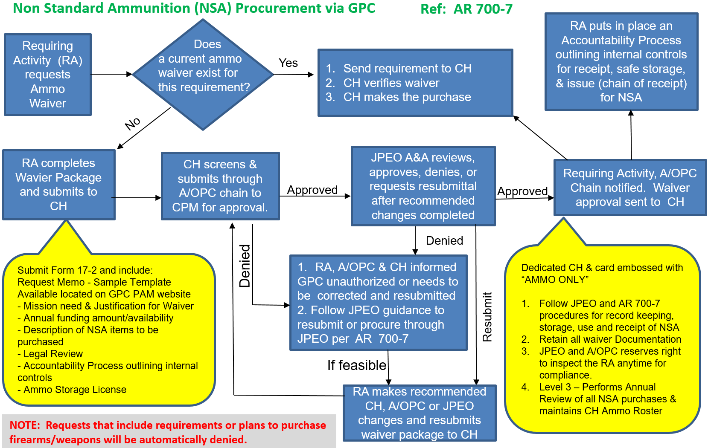

APPENDIX - EE DEPARTMENT OF THE ARMY GOVERNMENT PURCHASE CARD OPERATING PROCEDURES
Chapter 1 - The Government Purchase Card Program
1-3. Information and Waiver Process
1-4. Task Order and Period of Performance
1-7. Micro-purchase Thresholds (MPT)
1-8. GPC Delegations of Authority and Appointment Letters
Chapter 2 - Program Organization, Roles, and Responsibilities
2-1. Responsibilities and Governmental Functions
2-2. Program Hierarchy Structure and Roles and Responsibilities
2-3. Component Program Manager (Level 2 A/OPC) Duties and Responsibilities
2-4. Primary and Alternate Level 3 A/OPC Duties and Responsibilities
2-5. Primary and Alternate Level 4 A/OPC Duties and Responsibilities
2-6. Primary and Alternate Level 5 - Billing Official Duties and Responsibilities
2-7. Level 6 - Cardholder Duties and Responsibilities
2-8. GPC Support Function Duties
2-9. Management of the GPC Program
Chapter 3 - GPC Electronic Systems
3-1. Procurement Integrated Enterprise Environment (PIEE)
3-2. Joint Appointment Module (JAM)
3-3. U.S. Bank Access Online (AXOL)
3-4. MasterCard Insights on Demand (IOD)
3-5. Global Exchange Service (GEX)
3-6. Total System Services Payment Solutions (TSYS)
3-7. Enterprise Resource Planning (ERP)
3-8. Federal Procurement Data System – Next Generation (FPDS-NG)
3-9. Wide Area Workflow (WAWF)
3-10. PAM (Procurement.Army.Mil) Portal
3-11. Statement Reconciliation and Certification
3-14. Convenience Checks and Foreign Draft Checks
3-15. Office Supply Blanket Purchase Agreements (BPAs)
Chapter 4 - GPC Training Requirements
4-4. Purchase Card Online System (PCOLS)
4-5. Violation of Army GPC Procedures
Chapter 5 - Establishing and Maintaining a GPC Account
5-1. Nomination, Selection, and Appointment of Cardholders and Billing Officials
5-5. Liability of Cardholders and Billing Officials
Chapter 6 - Operational Guidance and Procedures
6-3. National Defense Authorization Act Section 889 Representation
6-4. Third Party Payment Requirements
6-7. Purchase Request and Approval Document
6-9. Payments of Monthly Invoices
6-10. Disputes, Defective Items and Fraudulent Transactions
6-15. Deployed to an OCONUS Area of Responsibility (AOR)
6-16. Official Representation Funds
6-17. Cable, Utilities, and Telecommunications Services (CUTS)
6-18. Freedom of Information Act (FOIA) Requests
7-6. Commands not Utilizing GFEBS or DFAS for Refund Processing
Chapter 8 - Education, Training and Tuition Assistance
8-1. SF 182 Training Payments (Non-FAR based training actions)
8-3. FAR-based Training Actions
8-4. Purchase Training Examples
8-5. Use of the GPC for Military Tuition Assistance
8-6. Reimbursement of Training Expenses
Chapter 9 - Required Sources of Supplies and Services
9-3. UNICOR/Federal Prison Industries
9-4. Computer Hardware, Enterprise Software and Solutions (CHESS)
9-5. U.S. Navy’s Spiral 3 Contracts
9-7. Supplemental Procurement Guidance
Chapter 10 - Convenience Checks and Foreign Draft Checks
10-2. Establishing a Convenience Check Account
10-3. Convenience Check Reporting (IRS Form 1099)
10-4. Before Writing a Convenience Check
10-5. Why Decrease Use of Convenience Checks?
10-6. Annual Convenience Check Review
10-8. Convenience Check Resources
10-9. IRS Form 1099 Reporting Process
Chapter 11 - Management Controls and Program Oversight
11-1. Management Oversight Controls
11-2. Internal Management Controls
11-4. Data Mining Case Review and Closure
11-6. Semi-Annual A/OPC Reviews
11-9. Cardholder Fraud and Merchant Fraud
11-10. Reporting and Monitoring for Fraud
11-11. Violation and Disciplinary Categories
Chapter 12 - Contingency Operations
12-2. Emergency Acquisition Flexibility
12-4. GPC Contingency Contracting Management Controls
12-5. Contingency Roles and Responsibilities
Chapter 13 - Management Reviews
13-1. Level 4 A/OPC Annual Management Assessment
13-2. Level 3 Procurement Management Review
Chapter 14 - Prohibited and Restricted Purchases
14-2. Unauthorized Commitments and Ratification
14-6. Merchant Authorization Controls (MAC)
14-7. Detainees and Obligations under the Geneva Convention
Chapter 15 – Contract Payments
15-3. GFEBS Purchase Order Creation
15-4. Payment Card Process Flow
15-5. Payment Plus Process Flow
15-7. Purchase Card Receiving Report (PCRR) Process
Chapter 16 - Ammunition and Weapons
16-2. Authority to use the GPC for Non-Standard Ammunition (NSA) not from Army inventory
16-4. Funding Non-Standard Ammunition (NSA)
16-5. Explosives, Toxins, and Ammunition Definitions
Chapter 17 – METRICS AND REPORTING
17-2. Reports for Monitoring and Oversight
17-3. Standard Reports in the Servicing Bank’s EAS
17-4. Custom Reports within the Servicing Bank
Chapter 1 - The Government Purchase Card Program
1-1. Overview
a. The Army Federal Acquisition Regulation Supplement (AFARS) Appendix EE provides policy guidance and procedures for the management of the Army Government Purchase Card (GPC) program. It implements and supplements sections of the Department of Defense (DoD) Government Charge Card Guidebook for Establishing and Managing Purchase, Travel, and Fuel Card Programs (hereinafter referred to as the DoD Charge Card Guidebook). If information is not discussed in this document or if this document is in conflict with the DoD GPC Policy, the DoD GPC Policy should be followed. This document applies to all purchases utilizing Army-issued GPCs.
b. Refer recommended changes and questions about the AFARS Appendix EE to the Office of the Deputy Assistant Secretary of the Army (Procurement) (ODASA(P)). Submit requests for waivers through the chain of command. Compliance with the AFARS Appendix EE is mandatory.
c. The GPC program provides Army and supported organizations a simplified, streamlined method of purchasing and paying for supplies, services, construction projects, and contract payments. The program complies with Federal, DoD, and Army statutory and regulatory guidance, as well as the terms and conditions specified in the most current General Services Administration (GSA) SmartPay® 3 Master Contract. The primary benefit of the GPC Program is that the card-issuing banks provide a commercial purchase and payment service that replaces the paper-based, time-consuming purchase order process; reduces procurement lead time; provides transaction cost savings; reduces procurement office workload; provides refunds; and facilitates payment to include reductions in interest payments.
d. The AFARS Appendix EE provides the procedures to use within the Army, including Army National Guard (ARNG) and Air National Guard (ANG), to establish and manage the Army GPC program. Army activities may supplement (i.e., adopt more stringent internal control requirements than the requirements cited herein), but not change this policy. However, as these are risk-managed programs, activities should maintain a proper balance between the control environment and ease of use to ensure that the benefits of the card continue to accrue. These procedures establish Army-wide standards designed to provide all Army activities with a foundation upon which to build specific standard operating procedures governing their programs.
e. Nonappropriated Fund (NAF) activities implement policies and procedures governing the Army’s Morale, Welfare, and Recreation programs and regulations for Nonappropriated Fund Instrumentalities (NAFI). Chaplaincy activities implement policies and procedures governing Army Chaplain Corps activities. Army NAFIs/entities must operate within the parameters of these procedures to include Public Health Command (PHC) NAFIs, Department of Defense Education Activities (DoDEA) NAFIs, and Army National Guard NAFIs. NAF activities will comply with the Department of Defense Policies and Procedures Governing Non-Appropriated Funds SmartPay® 3 Government-wide Commercial Purchase Card Use – SP3 Transition Memorandum #11.
1-2. GPC Uses
The purchase card can be used in three ways, depending on the value of the transaction and the authority of the cardholder (CH). See Federal Acquisition Regulation (FAR) 13.301. Table 1-1 summarizes the three methods and provides descriptions and examples.
Table 1-1: GPC Methods and Uses
| GPC Method | Description | Examples |
| Procurement Mechanism | To acquire and pay for goods and services by means other than the use of an existing contract. | Micro-purchases. See paragraphs a. and b. below. |
| Ordering Mechanism | To order and pay for goods and services under an existing contract only if authorized in the contract. | Orders placed against existing contracts. See paragraph c. below. |
| Payment Mechanism | To pay for goods and services when the Contractor agrees to accept contract payment(s) using the GPC card. | Contract invoice payments. Standard Form (SF) 182 training payments. See paragraphs d. and e. below. |
The GPC is the preferred method of payment for the following:
a. Micro-purchases (Card/Cardless). The GPC may be used to purchase fixed-price commercial supplies and services that do not require the CH to agree to any terms and conditions other than price and delivery. These purchases are limited to the applicable micro-purchase threshold (MPT).
b. Micro-purchases (Convenience Check). Convenience checks may be used and set up under a separate billing official (BO) account to buy commercially available, fixed-price supplies and services to fulfill mission-essential requirements. All check purchases must be within the applicable convenience check MPT. A separate account must be issued for each convenience check account.
c. Orders Against Pre-Existing Contract Vehicles. The GPC may be used to place task or delivery orders against pre-priced contract vehicles and agreements if authorized in the basic contract, basic ordering agreement, or blanket purchase agreement. (Appropriated fund CHs cannot purchase against nonappropriated fund contracts).
d. Contract Payments. The GPC may be used to make contract payments against fully funded contracts found to be advantageous to the Government when compared to other methods of payment, and the contractor accepts payment by the GPC. The contract should include the third-party payment clause identified in FAR 32.1108, Payment by Governmentwide Commercial Purchase Card; however, GPC contract payments may be made if the contractor agrees to accept the GPC as a method of payment.
e. Payment of Training Requirements on SF 182s. The GPC may be used as the method of payment for commercial training requests using the SF 182, valued at or below $25,000, in lieu of an employee reimbursement by miscellaneous payment in accordance with the procedures to directly pay the provider in DoD Financial Management Regulation (FMR) Volume 10, Chapter 12, Section 120323, and DoD Instruction (DoDI) 1400.25, Volume 410.
1-3. Information and Waiver Process
a. Cardholders should direct GPC-related questions to their billing official. If the BO cannot resolve the issue, they should direct the issue to their Agency/Organization Program Coordinator (A/OPC) (Level 4 A/OPC). If the A/OPC cannot resolve an issue, the A/OPC should direct the question to the Oversight Agency/Organization Program Coordinator (OA/OPC) (Level 3 A/OPC). If the OA/OPC cannot resolve the issue, the OA/OPC should consult the Component Program Manager (CPM) (Level 2 A/OPC) for guidance.
b. All waivers, exceptions, and deviations to the guidance provided in AFARS Appendix EE must be in writing and routed to the ODASA(P) CPM for approval. Requests to waive, take exception to, or deviate from the rules, regulations, processes or procedures will be reviewed on a case-by-case basis. Requests for waivers should be submitted through the GPC chain of command. The CPM will retain copies of all approved waiver packages. In times of emergencies, a waiver approval may be obtained either through email or telephone call from the CPM with a follow up waiver request letter from the requesting command/activity. The letter must detail the reasons for the request and what adverse mission impact would occur if the waiver was not granted.
1-4. Task Order and Period of Performance
The Office of the Under Secretary of Defense (OUSD) for Acquisition and Sustainment, Defense Pricing and Contracting (DPC), United States (U.S.) Army, U.S. Department of the Air Force, and Defense agencies and activities awarded a Tailored Task Order #47QRAC18F0003 to U.S. Bank under GSA SmartPay® 3 Master Contract GS-36F-GA001. The period of performance began 30 November 2018 and runs through 29 November 2031 if all contract options are exercised. The total duration of the contract period of performance, including the base period and exercise of all three options and extension, is not to exceed 13 years and six months.
1-5. GPC Authority
a. GPC programs require procurement authority to operate and cannot be established or maintained unless procurement authority is granted in accordance with governing laws and regulations and delegated through a contracting activity identified in Defense Federal Acquisition Regulation Supplement (DFARS) Procedures, Guidance, and Information (PGI) 202.101 and the DoD Charge Card Guidebook. Contracting authority flows from authorities granted in Titles 10 and 41, United States Code (10 and 41 USC) from DoD to the Secretary of the Army to the Heads of Contracting Activities (HCAs). The HCA re-delegates contracting authority to local procurement offices. The Senior Contracting Official (SCO) or Chief of Contracting Office (CCO) may re-delegate their GPC procurement authority listed in Table 1-3 to OA/OPCs or A/OPCs for OA/OPCs and A/OPCs to appoint cardholders and convenience check account holders through the Delegation of Contracting Authority Letter produced in the Joint Appointment Module (JAM) within the Procurement Integrated Enterprise Environment (PIEE). See sections 1-8 and 5-1 for more information. Cardholders must countersign to acknowledge this responsibility.
b. The Joint Appointment Module (JAM), an application within PIEE, is the mandatory enterprise tool for appointing and delegating authority to GPC personnel.
c. Orientation and training are prerequisites to receiving GPC delegated authority via an appointment in JAM. Training requirements are listed in Chapter 4.
d. Generally, only a Government employee can be a cardholder or billing official. National Guard traditional members and State employees should not be CHs or BOs. The following exceptions apply:
1) Foreign nationals may be appointed as CHs only if they are direct hires working for the U.S. Government. However, commanders/directors should consider the potential consequences of appointing foreign nationals as CHs in countries where Status of Forces Agreements (SOFAs) or local laws do not subject the foreign national employee to the same pecuniary or general financial liability or disciplinary actions for charge card violation as U.S. citizens.
2) Junior Reserve Officer Training Corps (JROTC) instructors are members of the Armed Forces in accordance with USACC Regulation 145-2, section 4-2, and may be designated micro-purchase procurement authority as GPC cardholders. See FAR 1.603-3(b).
1-6. Applicability
These procedures apply to all GPC purchases with cards and convenience checks issued by the Army.
a. Non-Army tenant organizations issued Army GPCs or convenience checks by an Army contracting office are also subject to these procedures. All BOs, CHs, A/OPCs, Resource Managers (RMs), Logisticians, and other stakeholders participating in the Army GPC program are subject to these procedures, including any non-Army tenant organizations where the Army has contracting authority and oversight responsibilities (such as ANG units).
b. The ODASA(P) has overall responsibility for the Army GPC program. Each Army command, organization, or activity utilizing Army GPCs has the responsibility for the following actions:
1) Provide adequate resources and effective internal controls to ensure the appropriate management, operation, training, and oversight is in place to operate a local GPC program effectively and efficiently in compliance with Army policies and procedures.
2) Establish and maintain a command climate to prevent Army personnel or others from exercising undue influence over the actions of an A/OPC, BO or CH.
3) Take appropriate informal and formal disciplinary actions in the event of noncompliance, fraud, misuse and/or abuse. Disciplinary actions should be based on the severity and frequency of the infraction and can range from informal actions such as written or verbal counseling, to demotion, removal, loss of security clearance, or potential criminal prosecution.
1-7. Micro-purchase Thresholds (MPT)
The definition and current dollar values of the MPT are located at FAR 2.101(b) and summarized in Table 1-2.
Table 1-2: DoD Micro-purchase Thresholds
| DoD Micro-purchase Thresholds | |||
| Function | Threshold | Authority | |
| 1 | Federal-Wide Open Market | $10,000 | FAR 2.101, FAR 13.2 |
| 2 | Construction subject to 40 USC Chapter 31, subchapter IV, Davis-Bacon Wage Rate Requirements | $2,000 | FAR 2.101, FAR 13.2 |
| 3 |
Services subject to 41 USC Chapter 67, Service Contract Labor Standards |
$2,500 | FAR 2.101, FAR 13.2 |
| 4 |
GPC Emergency-Type Operations (ETO) Inside U.S. |
$20,000 |
FAR 2.101, DFARS 213.270(c)(3) DFARS PGI 213.201 |
| 5 | GPC ETO Outside U.S. | $35,000 |
FAR 2.101, DFARS 213.270(c)(3) DFARS PGI 213.201 |
| 6 | Federal-Wide Higher Education Open Market | $10,000 or greater | Class Deviation 2018-O0018 |
| 7 | GPC Convenience Checks (General – Unrelated to ETO and Other Emergency Uses) | $5,000 | P.L. 115-91, National Defense Authorization Act for Fiscal Year 2018, Sec. 806(b) |
| 8 | GPC Convenience Checks for ETO and Other Emergency Uses (Inside U.S.) | $10,000 | P.L. 115-91, National Defense Authorization Act for Fiscal Year 2018, Sec. 806(b) |
| 9 | GPC Convenience Checks for ETO and Other Emergency Uses (Outside U.S.) | $17,500 | P.L. 115-91, National Defense Authorization Act for Fiscal Year 2018, Sec. 806(b) |
1-8. GPC Delegations of Authority and Appointment Letters
The different types of delegation of authority appointments identified in this section and Table 1-3 are available to CHs as needed. Each authority has unique policies, procedures, training, and oversight requirements. CHs must have the appropriate designation in their JAM appointment in order to use the corresponding purchasing authority. These appointments can only be granted to individuals who have completed training commensurate with their delegated authority.
Table 1-3: GPC Delegation of Authority and Limits
| # |
Authority Type |
Delegation Authority |
Delegation Not to Exceed Limit (Note 1) | Scope of Authority Limits |
Warrant Issued |
|
|---|---|---|---|---|---|---|
| 1 | Micro-Purchase CH |
FAR 1.603-3(b) FAR 13.201 DFARS 201.603-3(b) |
$10,000 |
Grants authority to make authorized GPC purchases valued below the MPT using simplified acquisition procedures. (See FAR 2.101 “micro-purchase” definition.) Includes FedMall Market Place transactions. CHs who only have this designation do not have the authority to place orders against any contract, including GSA federal supply schedule (FSS) orders using GSA Advantage and orders against FedMall contracts. CHs who will place orders against any contract also require the Contract Ordering Official CH designation in their appointment. |
||
| 2 | Micro-Purchase Convenience Check Writer |
FAR 1.603-3(b) FAR 13.201 DFARS 201.603-3(b) |
$5,000 (Note 2) |
Grants authority to make authorized convenience check purchases valued below the MPT using simplified acquisition procedures. (See FAR 2.101 “micro-purchase” definition.) | ||
| 3 | Higher Education Micro-Purchase CH |
FAR 1.603-3(b) FAR 13.201 DFARS 201.603-3(b) Class Deviation 2018-O0018 |
$10,000 but HCA determination can result in higher value (unlimited) |
Grants authority to make authorized open market micro-purchases using the GPC up to any applicable “Higher Education” MPT. (See MPT definition at FAR 2.101 & Class Deviation 2018-O0018.) This authority is generally limited to $10,000, but FAR 2.101 MPT definition allows for higher threshold after appropriate HCA determination. Note: CHs who will place orders against any contract, including GSA FSS orders or orders against FedMall contracts, the Contract Ordering Official CH designation in the appointment. Not for use to make payments against approved SF 182s. |
||
| 4 | Micro-Purchase ETO Cardholder and/or Check Writer |
FAR 1.603-3(b) FAR 13.201 FAR 13.201(g) DFARS 201.603-3(b) |
ETO CH $20,000 Inside U.S. $35,000 Outside U.S. ETO Check- Writer $10,000 Inside U.S. $17,500 Outside U.S. (Note 2) |
Grants authority to make authorized open market micro-purchases using the GPC up to the applicable “Contingency” MPT. (See MPT definition at FAR 2.101.) If intent to authorize CH to place orders against any contract, including GSA FSS orders or orders against FedMall contracts, a Contract Ordering Official CH designation is also required. ETO Checkwriter limits are one half of ETO MPTs. |
||
| 5 | Warranted ETO Contracting CH |
FAR 1.603-3(a) FAR 2.101 MPT FAR 2.101 SAT DFARS 201.603-3(b) DFARS 213.301(3) |
$1,500,000 Outside the U.S. |
Grants Contracting Officers supporting Contingency Operations and Humanitarian and Peacekeeping Operations authority to make authorized GPC purchases outside the U.S. as authorized in DFARS 213.301(3) for use outside the U.S. using simplified acquisition procedures up to the applicable Simplified Acquisition Threshold (SAT). (See FAR 2.101 definitions of MPT and SAT.) The GPC appointment letter may only be issued to individuals who have previously been issued an SF 1402 delegating them authority sufficient to serve as a Contingency Contracting Officer. |
||
| 6 |
Contract Ordering Official CH (Note 3) CHs who will place orders against any contract, including GSA FSS orders on GSA Advantage and FedMall contracts at any dollar level, require this Contract Ordering Official CH designation. |
FAR 1.603-3(a) FAR 8.4 FAR 13.301(b) FAR 13.301(c)(2) AFARS 5113.202-90(c) DPC JAM Role Descriptions Guide |
Simplified Acquisition Threshold (Note 4) $250,000 for CHs that are trained contracting professionals in the contracting office (1102s) $25,000 for CHs outside a contracting office |
Grants authority to place and pay for authorized GPC purchases against the following: 1) Orders from GSA federal supply schedule contracts. 2) Orders from FedMall contracts, Computer Hardware Enterprise Software and Solutions (CHESS) IDIQ contracts, Governmentwide acquisition, and multi-agency contracts. 3) Indefinite Delivery, Time-and-Material, or Labor-Hour contracts that have firm fixed prices and pre-arranged terms and conditions that were awarded by a warranted contracting Officer (KO) who designated the CH, to place orders. The KO is responsible for performing compliance oversight and reporting any concerns to the A/OPC. Contract Ordering Official training must be completed before using this authority. This appointment can only be granted to individuals who have completed training commensurate with their delegated authority and as approved by the CPM (i.e., completion of CLG 0010 is not sufficient). A/OPCs must ensure additional controls and oversight procedures are in place before granting this authority. |
X | |
| 7 | Overseas Simplified Acquisition CH (Note 3) |
FAR 1.603-3(a) for > MPT FAR 1.603-3(b) for < MPT DFARS 213.301(2) |
$25,000 | Grants authority to make authorized GPC purchases valued up to $25,000 using simplified acquisition procedures when the CH is outside the U.S. for items/services to be used outside the U.S., and that comply with the requirements of DFARS 213.301(2). | X | |
| 8 | Contract Payment Official CH | FAR 13.301(c)(3) | As specified in the delegation of authority letter and contract. Not to exceed the KO’s warrant authority. | Grants authority to make contract payments when authorized by the contract terms and conditions. | ||
| 9 | Miscellaneous Payments Official CH (SF-182 Training Payments) |
DoD Charge Card Guidebook DoD FMR Vol 10, Ch. 12, Sec 120323 DoDI 1400.25 Volume 410 |
$25,000 | Grants authority to make payments for commercial training requests using the SF 182, valued at or below $25,000, in lieu of an employee reimbursement by miscellaneous payment in accordance with the procedures to directly pay the provider in DoD FMR Volume 10, Chapter 12, Section 120323, and DoDI 1400.25, Volume 410. | ||
| 10 | Inter/Intra-Govern-mental Payment Official CH |
TFM Vol. I, Part 5, Ch 7000 DPC memo, “Guidance on the Implementation of Adjusted Government Charge Card CH Special Designation Thresholds,” dated Oct 6, 2020 |
$10,000 |
Grants authority to make inter/intra-governmental transactions or payments (IGT) to another Government entity in lieu of using a Military Interdepartmental Purchase Request (MIPR). Includes payments to: DLA Document Services Department of Agriculture offered training FedMall GPC Requisitioning. GSA Global Supply requisitioning |
||
|
|
||||||
a. Micro-Purchase Cardholder. This authority allows CHs to use the GPC to buy commercially available, fixed-price supplies and services to fulfill mission-essential requirements. The maximum single transaction dollar limit for stand-alone purchases is the MPT as defined at FAR 2.101.
b. Micro-Purchase Convenience Check Writer. This authority allows CHs to use a GPC convenience check to buy commercially available, fixed-price supplies and services to fulfill mission-essential requirements. Since convenience checks expose the Government to greater risk, CHs must make every effort to use a GPC card before writing a check. CHs may only use this authority when use of the GPC is not possible. All check purchases must be within the applicable convenience check MPT. DoD FMR Volume 10, Chapter 23 establishes the financial management policy for convenience check accounts.
c. Micro-Purchase Emergency-Type Operations (ETO) CH and/or Check Writer. This authority allows CHs to buy commercially available, fixed-price supplies and services to fulfill mission-essential requirements in direct support of a declared contingency or emergency event. See 41 USC 1903. Emergency-type Operations include the following:
1) Contingency operations as defined in FAR 2.101.
2) Operations to facilitate the defense against or recovery from cyber, nuclear, biological, chemical, or radiological attack against the U.S. as addressed in FAR 18.001.
3) Operations in support of a request from the Secretary of State or the Administrator of the United States Agency for International Development to facilitate the provision of international disaster assistance as addressed in FAR 18.001.
4) Operations to support response to an emergency or major disaster as defined in section 102 of the Robert T. Stafford Disaster Relief and Emergency Assistance Act (42 USC 5121 et seq, implemented in FAR 26.2).
5) Humanitarian or peacekeeping operation (as defined at 10 USC 2302(8) and FAR 2.101).
CHs must enter the applicable value from Table 1-4 in the ETO field in the bank’s EAS for each transaction. If unsure, CHs should consult their A/OPC. If your Component HCA has authorized emergency acquisition authorities to support COVID or Ukraine for purchases made after 9/30/2022, then CHs will need to manually enter just the description of “Ukraine” or “COVID” in the “Contingency Operations” field.
Table 1-4: Emergency-Type Operations
| Value | When to Use |
|---|---|
| Not in support of ETO | Transaction is not in support of an ETO. |
| Applicable Code not in this List | Transaction is in support of an ETO, but the assigned National Interest Action (NIA) code is not yet in this ETO drop down list or when Army policy mandates entry of a specific code in the purchase log to associate a transaction with a particular event. When this value is selected, the CH must enter applicable code in the “ADD’L Code or Event Info” field. |
|
O14S Operations in Iraq or Syria |
Transaction is in support of NIA Code O14S – Operations in Iraq and Syria. |
|
O15F Operation Freedom’s Sentinel |
Transaction is in support of NIA Code O15F – Operation Freedom’s Sentinel (OFS) 2015. |
|
H20L Hurricane Laura 2020 |
Transaction is in support of NIA Code H20L – Hurricane Laura 2020. |
|
O21R Operations Allied Refuge Welcome |
Transaction is in support of NIA Code O21R – Operations Allies Refuge/Welcome. |
|
H21I Hurricane IDA 2021 |
Transaction is in support of NIA Code H21I – Hurricane Ida 2021. |
|
ADD’L Code or Event Info Free Form Text |
CH must complete when “Applicable code not in list” is selected from the drop-down list. Entry must include either the applicable NIA that is not yet available in the ETO list along with a short description, or the code specified in Army policy along with a short description. |
d. Warranted Overseas ETO Cardholder. This authority allows CHs to use the GPC in conjunction with their separately issued SF 1402 Certificate of Appointment to purchase supplies and services as prescribed in DFARS 213.301(3). Contracting officers may use this authority to make purchases up to the applicable simplified acquisition threshold in support of declared contingency or emergency events.
e. Contract Ordering Official. This authority allows CHs with the appropriate training to issue fixed-price orders against existing contracts (e.g., GSA FSS, BPAs, FedMall contracts, CHESS contracts) to fulfill mission-essential requirements for supplies and services valued up to the Contract Ordering Official single purchase limit and to use the GPC to pay for these orders/purchases. When using this authority, CHs must 1) ensure they are authorized to place orders by the contract terms and conditions, 2) ensure the order will comply with all the contracts terms and conditions, and 3) follow all applicable ordering procedures. When ordering above the MPT, CH should obtain pricing from small business when small business can meet the requirements. The CH should obtain quotes from at least three sources. If restricting competition to fewer than three sources, the CH should document the circumstances in the purchase file. CHs with this designation will be referred to as “Ordering Officials” throughout this document.
f. Overseas Simplified Acquisition. This authority allows CHs to make authorized GPC purchases up to a single purchase limit of $25,000 when the CH is outside the U.S. for items/services to be used outside the U.S., and that comply with the requirements of DFARS 213.301(2). When ordering above the MPT, the CH should obtain quotes from at least three sources. If restricting consideration to fewer than three, document the circumstances in the purchase file.
g. Contract Payment Official. This authority allows CHs to use the GPC to make payments against contracts that have been signed by a Contracting Officer when the GPC is named as the payment method. The GPC may provide a streamlined way of paying for contracts when a contracting officer determines the use of the GPC is in the best interest of the Government (AFARS 5113.202-90(d)).
h. Miscellaneous Payments Official (SF 182 Training Payments). This authority allows CHs to make payments for commercial training requests using the SF 182, valued at or below $25,000 in accordance with the procedures to directly pay the provider in DoD FMR Volume 10, Chapter 12, Section 120323, and DoDI 1400.25, Volume 410a. The SF 182 or equivalent must be completed prior to the training. When provided by a non-Government source, the training must consist of a regularly scheduled, commercial-off-the-shelf (COTS) course, training conference, or instructional service that is available to the general public and priced the same for everyone in the same category, e.g., price per student, course, program, service, or training space.
i. Inter/Intra-Governmental Payment Official. This authority allows CHs to make payments to other Federal Government agencies in lieu of using a MIPR or Inter-Governmental Payment and Collection (IPAC) up to $10,000. This authority includes, but is not limited to, payments to the Commissary, DLA Document Services, GSA Global Supply, and requisitioning NSNs on FedMall. Purchases from the following sources are not considered inter/intra-governmental payments: state and local governments, AbilityOne, GSA Advantage, and CHESS.
Chapter 2 - Program Organization, Roles, and Responsibilities
The general roles and responsibilities of the participants in the purchase card program are presented in the following regulations:
a. DoD Charge Card Guidebook
b. AFARS Appendix EE and AFARS 5113.201
c. Chapter 4500 of the Treasury Financial Manual
d. Office of Management and Budget (OMB) Circular 123, Appendix B Revised, Chapters 4
e. DoD FMR Vol. 5, Ch. 33 and Vol. 10, Ch. 23
2-1. Responsibilities and Governmental Functions
All Program personnel will complete GPC-specific training prior to being appointed any responsibilities within the GPC Program. In addition, all GPC personnel will keep their GPC training current to continue to hold GPC positions. All Program personnel must protect the information derived from use of the GPC. All appointments must be made in JAM, an application within PIEE used by GPC participants to initiate, review, approve, maintain, and terminate GPC appointment and delegation letters. Paper copies of appointments are not required if appointments are issued using JAM. Government contractor employees will not be appointed as A/OPCs, BOs, or CHs, nor perform independent receipt of goods and services and will not be granted access to the card-issuing bank’s electronic access system (EAS) or any of the business IT systems. However, contractors may be granted read-only access to the card-issuing bank’s EAS upon Level 3 A/OPC approval.
2-2. Program Hierarchy Structure and Roles and Responsibilities
The GPC Program is founded on a six-tiered hierarchal reporting chain of command system identified in Figures 2-1 and 2-2. The formal names associated with specific roles within this hierarchy are often used interchangeably with the corresponding level of authority within the hierarchy. For instance, A/OPCs may be referred to as Level 4s, and the Army GPC CPM is often referred to as the Level 2. Table 2-1 describes the GPC roles in PIEE and JAM.
Figure 2-1: Hierarchy Chart
Office Secretary of Defense
DPC
(Level 1)

Department of the Army (DA)
CPM
(Level 2)

Command A/OPC
OA/OPC
(Level 3)

Direct A/OPC
A/OPC
(Level 4)
CH’s Supervisor
(Preferred)
Billing Official (BO)
(Level 5)

Requiring Activity
Cardholder (CH)
Level 6
Figure 2-2: Hierarchy Structure
| Army Level/Hierarchy GPC Program Structure | ||
|---|---|---|
| Level 1 A/OPC | DoD | DPC manages the DoD GPC Program |
| Level 2 A/OPC (CPM) |
ASA(ALT) DASA(P) |
The DASA(P) appoints the CPM (Level 2 A/OPC) to administer the Army GPC Program. |
| Level 3 OA/OPC |
Army Command (ACOM) or equivalent |
ACOM or equivalent organization must possess HCA authority. SCO appoints the Level 3 A/OPC. SCO may delegate this appointment further. The SCO’s management responsibility for the GPC program may be delegated to the CCO. Level 3 A/OPC reports to the Level 2 A/OPC as required. |
| Level 4 A/OPC | Installation or equivalent | SCO or equivalent appoints the Level 4 A/OPC. SCO may delegate this authority to the CCO or equivalent. Level 4 A/OPC reports to the Level 3 A/OPC as required. |
| Level 5 |
Billing Official and Alternate |
CCO appoints the BO. This authority may be delegated to the Level 4 A/OPC. BO is also a certifying officer. BO monitors and approves CH purchases and certifies billing statements. |
| Level 6 | Cardholder |
CH is the individual issued the GPC or convenience checks. Level 4 A/OPC appoints the CH (when CCO delegates the authority to A/OPC). CH must acknowledge authority and duties by signing appointment letter in JAM. |
Table 2-1: JAM GPC Roles
| # |
GPC JAM and PIEE Roles |
Who Submits Request |
Additional Guidance Information |
JAM Appointment Issued |
How Is the Process Initiated? PIEE Registration (Note 1) / Self-Initiate or Nominate (Note 2) |
Warrant Issued | |
|---|---|---|---|---|---|---|---|
| 1 |
GPC DoD Program Management Office (PMO) |
DPC (Contracting eBusiness) The PIEE Hierarchy Level 1. |
None | None |
PMO representative registers for PIEE access and requests role. |
No | |
| 2 | Component Program Manager (CPM) | The PIEE Hierarchy Level 2. | None | CPM appointment letter |
CPM registers for PIEE access and requests role. |
No | |
| 3 |
GPC Delegating/ Appointing Authority (DAA) |
Individual(s) (other than the A/OPC or OA/OPC with delegating authority) who have retained or been delegated authority to electronically sign GPC Delegation of Procurement Authority and GPC Appointment Letters (e.g., the Director of Contracts or SCO). | Servicing Agency A/OPCs should direct any individual at a “Requesting Agency” who has been delegated authority to sign delegation and appointment letters to request this role during PIEE registration. These individuals must have been issued an SF 1402 authorizing them to further delegate procurement authority. | None |
DAA may register for PIEE access and request role or complete actions using only tokenized emails. |
No | |
| 4 |
OA/OPC With Delegating Authority (Note 3) |
Primary and Alternate A/OPCs with responsibility for managing / overseeing other A/OPCs. | None | OA/OPC Appointment Letter |
OA/OPC registers for PIEE access and requests role. |
Yes | |
| 5 |
OA/OPC Without Delegating Authority |
Primary and Alternate A/OPCs with responsibility for managing / overseeing other A/OPCs. | None | OA/OPC Appointment Letter |
OA/OPC registers for PIEE access and requests role. |
No | |
| 6 |
A/OPC With Delegating Authority (Note 3) |
Primary and alternate A/OPCs responsible for day-to-day management and oversight of CH and managing accounts (Note 4). | None | A/OPC Appointment Letter |
A/OPC registers for PIEE access and requests role. |
Yes | |
| 7 |
A/OPC Without Delegating Authority |
Primary and alternate A/OPCs responsible for day-to-day management and oversight of CH and managing accounts (Note 4). | None | A/OPC Appointment Letter |
A/OPC registers for PIEE access and requests role. |
No | |
| 8 | Approving/Billing Official (A/BO) | Program officials responsible for reviewing and approving GPC managing account (MA) billing statements (GPC bank invoices) and transaction supporting data for compliance with applicable acquisition policies. | None | A/BO Appointment Letter |
OA/OPC or A/OPC nominates A/BO using JAM. A/BO responds to JAM-generated email direction to register for PIEE access. When A/BO uses the identical email entered during nomination, the role request and required DoDAACs are pre-populated. |
No | |
| 9 | Certifying Officer | Program officials responsible for reviewing GPC MA billing statements in accordance with DoD FMR requirements and certifying statements (GPC bank invoices) for payment. |
Certifying Officer responsibilities are addressed in DoD FMR Volume 10, Chapter 23 (230406) and DAU CLG 006. Certifying Officer appointments are made in accordance with DoD FMR Vol. 5, Chapter 5. |
DD Form 577 Certifying Officer Appointment |
OA/OPC, A/OPC or DD 577 Appointing Authority (AA) nominates Certifying Officer using JAM. Certifying Officer responds to JAM-generated email direction to register for PIEE access. When Certifying Officer uses the identical email entered during nomination, the role request and required DoDAACs are pre-populated. |
No | |
| 10 | Cardholder (CH) | Individuals who have been issued GPC CH accounts. |
Includes carded, cardless, and convenience check accounts. 10 types of “Special Use” CH delegations are available. 2 of the 10 CH delegations are equivalent to issuance of a SF 1402 Certificate of Appointment. |
GPC CH Appointment Letter |
OA/OPC or A/OPC nominates CH using JAM. CH responds to JAM-generated email direction to register for PIEE access. When CH uses the identical email entered during nomination, the role request and required DoDAACs are pre-populated. |
||
| 11 | Component Resource Manager (CRM) | The Comptroller/FM for the Component. | None | None | CRM registers for PIEE access and re-quests role. (Note 5) | No | |
| 12 | Oversight RM | Individuals responsible for approving RM access to PIEE; they can also perform all RM functions. | None | None | Oversight RM registers for PIEE access and requests role. | No | |
| 13 | Resource Manager (RM) |
Provides appropriate GPC account funding, enters associated lines of accounting (LOAs) into applicable systems, and works with the A/OPC to establish spending limits tied directly to funding allocated for each managing and CH account. |
None | None |
RM registers for PIEE access and requests role. |
No | |
| 14 | Supervisor | Supervisors of individuals with PIEE roles. |
Supervisor information is available to JAM from the data the individual enters during their PIEE registration. Future PIEE releases are planned to connect to DEERS for supervisory information. |
None |
Not Required (Note 6) PIEE users identify their supervisor in their PIEE account profile. |
No | |
| 15 | DD577 View Only |
Individuals in paying offices (e.g., DFAS) who need to view DD Form 577 appointments. Other individuals who require access to view DD Form 577s. May be granted to contractor personnel. |
None | None | Registers for PIEE access and requests “DD 577 View Only User” role. | No | |
| 16 | DD577 Appointing Authority | Individuals authorized by Component-level Financial Management procedures to sign DD Form 577 Certifying Officer appointments in accordance with FMR Vol 5, Ch 5. | None | None | Registers for PIEE access and requests “DD 577 Appointing Authority” role. | No | |
| 17 | GPC Help Administrator (HAM) | Individuals providing help desk support to GPC program officials. |
May be granted to contractor personnel. (Note 7) |
None | Registers for PIEE access and requests “GPC Help Administrator” role. | No | |
| 18 | GPC Auditor | Individuals granted access to PIEE GPC functionality for purposes of reviewing the GPC program | GPC Auditor is required to load a scanned copy of audit letter during PIEE registration process. Each request must specify the purpose, scope of the review, define the access required, and state the desired access period (start and end dates). Access requests must be approved by the CPM. | None | Self-Initiate. | No | |
|
|
|||||||
2-3. Component Program Manager (Level 2 A/OPC) Duties and Responsibilities
a. Administer the Army GPC Program.
b. Establish policies and guidelines.
c. Design and maintain hierarchies and approve subordinate Level 3 A/OPCs.
d. Interface with the DPC GPC program office on performance issues.
e. Ensure effective Army GPC surveillance (e.g., Procurement Management Reviews (PMRs)).
f. Liaison with Army organizations, the servicing bank, DPC, GSA, and other federal agencies.
g. Manage and implement technical and system enhancements.
h. Develop, test and deploy GPC hardware/software/networking systems enhancements.
i. Review and submit monthly, semi-annual, and annual reports as required.
j. Implement trends, best practices, increase rebates, and lower costs to improve the program.
k. Participate in meetings, events, training events, and panel discussions representing the Army.
l. Communicate DoD and Army GPC policy/procedure updates and surveillance/audit findings.
m. Address systemic program deficiencies and discrepancies.
2-4. Primary and Alternate Level 3 A/OPC Duties and Responsibilities
a. Implement, administer, and monitor the ACOM GPC program subject to DoD and Army policies.
b. Serve as a liaison with all GPC Program stakeholders (e.g., HQDA, DPC, GSA, AAA, Bank, etc.)
c. Review and submit monthly and semi-annual IOD reports.
d. Inform Level 2 A/OPC of GPC program trends and issues as they arise.
e. Provide program support to ACOM and installation Level 4 A/OPCs.
f. Establish and implement ACOM-specific policy and guidelines.
g. Develop/implement program internal control requirements and surveillance plan.
h. Participate in GPC program meetings and events.
i. Suspend accounts and administer corrective actions for non-compliance.
j. Ensure all Level 4 A/OPCs meet education, training, and certification requirements.
k. Track training for Level 4 A/OPCs in PIEE/JAM.
l. Ensure all Level 4 A/OPCs hold appointment letters in PIEE/JAM.
m. Lead implementation of GPC systems at the Command level.
n. Coordinate GPC program changes with CPM (e.g., hierarchy changes, Level 3 appointments).
o. Respond to data calls in a timely manner and with concise, current data.
p. Oversee Level 4 A/OPC program controls, including managing account reviews and IOD reviews.
q. Manage agent numbers and periodically assess the ongoing need for agent numbers.
r. Manage enterprise data mining processes per DPC policy and procedures.
s. Maintain managing accounts to meet mission needs.
t. Communicate policy updates, procedure changes, and other information to Level 4 A/OPCs.
u. Process and retain waivers, exceptions and deviations.
v. Review and submit weekly, monthly, quarterly and annual reports as required.
w. Seek out trends and best practices to improve the Program.
x. Implement innovative means to increase rebates, lower administrative costs and merchant prices.
y. Proactively address and resolve emails at the lowest level.
z. Resolve deficiencies and discrepancies impacting program effectiveness and efficiencies.
aa. Perform PMRs every three years.
2-5. Primary and Alternate Level 4 A/OPC Duties and Responsibilities
a. Manage the day-to-day operation of the GPC program at an installation/organization.
b. Assist CHs and BOs in fulfilling their responsibilities.
c. Serve as the liaison between the Level 3 A/OPC and the installation/organization GPC personnel.
d. Liaison between the financial/contracting communities as it applies to the GPC payment process.
e. Serve as the installation/organization point of contact for bank-related matters.
f. Provide business advice to supporting organizations, CHs, BOs, and small business specialists.
g. Participate in meetings. Communicate Army policy updates and internal review findings.
h. Assist the Level 3 to increase rebates and lower administrative and merchant costs.
i. Ensure the proper disposition of rebate checks.
j. Ensure GPC Program personnel are properly trained and appointed.
k. Maintain currency in training in order to perform their respective duties.
l. Establish and maintain a manual or electronic file for each BO and CH per retention rules.
m. Establish, maintain, and terminate CH and BO accounts within the servicing bank’s EAS.
n. Ensure that all managing accounts have a primary and alternate BO.
o. Evaluate the effectiveness of each BO’s ability to review, approve and reconcile transactions.
p. Ensure timely reconciliation of all CH and BO accounts at the end of the billing cycle.
q. Coordinate with RMs to ensure timely certification and payment.
r. Confirm completion of required initial and refresher training for all CHs and BOs.
s. Maintain training records within PIEE and JAM.
t. Coordinate with the Accountable Property Officer (APO).
u. Provide training to CHs on property accountability procedures.
v. Nominate and appoint CHs and BOs within PIEE and JAM.
w. Maintain and terminate appointment letters in JAM.
x. Maintain program oversight through IOD, annual management assessment, and bank reports.
y. Complete all assigned IOD cases, monthly reviews, and semi-annual reviews per policy timelines.
z. Address program deficiencies and discrepancies identified in IOD.
aa. Annually assess each CH’s continuing need to maintain an account.
bb. Close unused accounts as appropriate.
cc. Request justification in writing from BOs when accounts with little activity must remain open.
dd. Perform Level 4 Annual Assessment using the Annual Assessment Checklist.
ee. Develop and implement local GPC procedures.
ff. Inform CHs of prohibited items and services.
gg. Monitor bank transaction reports to identify potential improper use of the GPC.
hh. Take corrective action to address any suspected legal or policy violations.
ii. In the event of unauthorized card activity or fraud, set the single purchase limit to $1.
jj. Monitor bank transaction declination reports to identify potential fraud activity.
kk. Review transactions of newly appointed CHs within four months of appointment.
ll. Reduce managing accounts as appropriate to meet mission needs.
mm. Process requests for user identifications in the servicing bank’s EAS.
nn. Screen any accounts which have not been used within six months and take appropriate action.
oo. Utilize the Semi-Annual Report to brief management.
pp. Process and retain waivers, exceptions, and deviations.
qq. Ensure lost/stolen cards are immediately reported.
rr. Temporarily suspend any account over 30 calendar days past due.
ss. Suspend entire Level 4 organization accounts for any account over 120 days past due.
tt. Review and submit reports as required.
uu. Analyze trends to improve the Program.
vv. Assist BOs and CHs with reports as necessary.
ww. Activate, deactivate/terminate, and maintain (adjust limits, etc.) CH and BO accounts.
xx. Identify, monitor, and resolve any terminated accounts with outstanding credits.
yy. Ensure appropriate separation of duties and span of control ratios are maintained.
zz. Proactively address automated email notifications (e.g., IOD cases or delinquencies).
aaa. Address deficiencies and discrepancies impacting program effectiveness or efficiencies.
2-6. Primary and Alternate Level 5 - Billing Official Duties and Responsibilities
a. Review and reconcile CH statements against receipts and documentation.
b. If a CH is absent, approve CH’s statement within the required timeframe.
c. Certify billing statements electronically within 5 business days of the end of the billing cycle.
d. Forward official invoice to DFAS for manually paid accounts within 15 days of receipt.
e. Verify payments to be legal, proper, necessary, and correct per Government rules and regulations.
f. Complete all assigned IOD data mining cases in a timely manner.
g. Ensure CHs upload all transaction documentation in the servicing bank’s EAS.
h. Report questionable transactions to the Level 4 A/OPC and/or appropriate authorities for review.
i. Resolve any questionable purchases with the CH and A/OPC.
j. Recommend in writing GPC credit limits to the RM and Level 4 A/OPC, for CHs under BO account.
k. Coordinate with the bank to resolve payment issues.
l. Identify and communicate billing discrepancies to the bank’s transaction dispute point of contact.
m. Send a report to the A/OPC detailing the circumstances of any lost, stolen or compromised cards.
n. Ensure designation of the proper line of accounting.
o. Ensure an Alternate BO is appointed.
p. Notify the Level 4 A/OPC promptly to close any CH accounts no longer needed.
q. Notify the Level 4 A/OPC to terminate or reassign the BO account prior to departure/reassignment.
r. Serve as the point of contact for GPC compliance inspections/audits/reviews.
s. Support A/OPC surveillance reviews.
t. Complete any corrective actions identified after each audit or A/OPC review.
u. Establish/recommend CH and BO credit limits to the A/OPC based on historical use.
v. Ensure spending limits are held to the minimum amount necessary to meet mission requirements.
w. Ensure spending limits are not exceeded.
x. Verify appropriate and sufficient funds are available prior to CH purchases.
y. Ensure all transactions are for valid, official Government requirements.
z. Provide written approval or disapproval of purchase requests to the CH.
aa. Ensure sources are rotated when possible.
bb. Ensure CHs are not splitting requirements to avoid exceeding the MPT.
cc. During the reconciliation process, review and ensure supporting documentation is loaded in the bank’s EAS prior to certifying the monthly invoice.
dd. Register for electronic data notifications within the bank’s EAS for automated email alerts.
ee. Ensure convenience check data is maintained.
ff. Ensure Internal Revenue Service (IRS) Form 1099 has been completed and reported for convenience checks.
gg. Ensure sales taxes are not paid (as appropriate).
hh. Immediately notify A/OPC upon discovery of suspected unauthorized purchases.
ii. Notify the A/OPC when CH or BO personnel changes occur.
jj. Immediately notify of lost or stolen cards.
2-7. Level 6 - Cardholder Duties and Responsibilities
a. CH authority is limited to the threshold indicated on their delegation of authority in JAM.
b. Use GPC to make authorized purchases within the limits of their delegation of authority in JAM.
c. Screen all purchase requests upon receipt.
d. Verify that the requested items meet a legitimate government need.
e. Notify the BO of unusual or questionable purchase requests.
f. Check requirements for their availability from the mandatory Government sources.
g. Make purchases in accordance with FAR Part 8 required sources of supplies and services.
h. Rotate merchants when practicable.
i. Allocate transactions to the proper line of accounting.
j. Obtain BO approval prior to purchase. Obtain all required pre-purchase approvals.
k. Track receipt/acceptance of purchased goods or services.
l. Track partial shipments to ensure they are received within the dispute window.
m. Track any transactions for items not yet received.
n. Collect, maintain and upload the required purchase documentation in the servicing bank’s EAS.
o. Match orders and review and reconcile monthly statement.
p. Register to receive the bank’s Electronic Data Notifications (automated email alerts).
q. Resolve unauthorized, erroneous, or questionable transactions with merchants.
r. Dispute questionable transactions.
s. Dispute transactions within 90 calendar days from the date the transaction posts to the account.
t. Dispute unresolved billing errors (e.g., supplies not received by the next billing statement).
u. Dispute transactions when receipt and acceptance of goods or services cannot be verified.
v. Dispute items the merchant fails to replace, modify, or repair by the allotted time.
w. Resolve any invalid transactions with the merchant.
x. Track all disputes to completion.
y. Confirm with the merchant the items ordered are in transit and track the transactions to completion.
z. Maintain physical security of the GPC and convenience checks to avoid unauthorized use.
aa. Allow no one but the designated CH to use the card.
bb. Do not release the account number to entities other than a merchant processing a transaction.
cc. Notify the BO of a lost, stolen, or compromised GPC within one business day.
dd. Maintain the bank’s EAS purchase log, which is located under Transaction Management.
ee. Reconcile all transactions and upload all supporting documentation in the bank’s EAS.
ff. Approve the account statement within 3 business days of the cycle end date.
gg. Maintain a manual purchase log if the electronic purchase log in the bank’s EAS is not accessible.
hh. Ensure the Accountable Property Officer (APO) has screened the purchase request.
ii. Upload all receipts for the APO to review electronically in the servicing bank’s EAS.
jj. After items arrive, provide receipts to the supporting APO within five business days.
kk. Notify the BO when you are not available to approve the CH statement.
ll. Provide all records and purchase file documentation to the BO upon departure or reassignment.
mm. Maintain a separation of duties of making purchases and receiving the goods/services.
nn. Forward requirements exceeding the MPT to the contracting office for purchase.
oo. Verify and document receipt/acceptance of goods or services.
pp. Checkwriters - Ensure convenience check data is maintained.
qq. Checkwriters - Ensure IRS Form 1099 has been completed, reported, and retained.
2-8. GPC Support Function Duties
a. Resource Manager GPC Support Function Duties.
1) Fund GPC purchases and provide a system of positive funds control.
2) Assist the Level 4 A/OPC in establishing and maintaining BO and CH accounts.
3) Assign default and alternate lines of accounting as appropriate.
4) Ensure obligations are posted prior to invoicing for non-Electronic Data Interchange (EDI) accounts.
5) Assist with resolving accounts that are in a delinquent status and provide payment information when requested.
6) Assist the Level 4 A/OPC with the surveillance of assigned accounts.
7) Monitor General Fund Enterprise Business System (GFEBS) and Defense Enterprise Accounting Management System (DEAMS) daily to identify account payment issues, prevent and resolve GPC payment delinquencies, correct Intermediate Document (IDOC) errors, and provide payment information upon request.
8) Provide guidance and training to installation RMs, BOs, and CHs on GFEBS/DEAMS processes.
9) Provide appropriate funding for the accounts and enter associated lines of accounting into applicable systems.
10) Establish spending limits that are tied directly to funding allocated for each billing and CH account.
b. Organizational PIEE Government Administrator Manager (GAM) GPC Function Duties.
1) Administer Location Codes.
2) Look up group names and GAM information.
3) View and edit user profile information.
4) Activate (add) and deactivate users.
5) Reset user passwords.
6) Reset certificates.
c. Defense Finance and Accounting Service (DFAS) Support Function Duties.
1) Provide tax reporting guidance to checkwriters. See Chapter 10-3.
2) Confirm the DD Form 577 for certifying officials.
3) Receive and process EDI transaction sets 821, Obligation Files; and 810, invoice files, and notify the responsible installation or activity when the corresponding files are not received.
4) Notify the installation/activity, within one day, of rejects and interest penalties assessed to individual accounts.
5) Receive and process requests for manual payments, e.g., bank system rejects and non-EDI accounts.
6) Assist in resolving GPC payment issues.
d. Senior Contracting Official (SCO), or equivalent Duties.
1) The SCO or equivalent is responsible for the operation and execution of their GPC Program in compliance with this document and the policies and procedures issued from the ODASA(P). The SCO is ultimately responsible for establishing and complying with mandated internal controls which ensure the appropriate management, operation, and oversight of the local GPC program.
2) Develop internal management controls to operate, manage, provide oversight, and maintain the integrity of the local GPC Program.
3) Ensure adequate checks and balances are in place to manage local GPC programs.
4) Ensure CHs are not subjected to undue influence in performing their duties and responsibilities.
5) Ensure separation of duties. Ensure the roles and responsibilities of the individuals within the GPC program are not in conflict. Individuals designated as A/OPCs will not be simultaneously designated as BOs or CHs. Individuals designated as BOs will not be a CH on the same managing account.
6) Manage span of control appropriately. Primary and alternate A/OPCs will not be responsible for more than 250 GPC accounts. Additional A/OPCs must be appointed whenever the combined number of CH and managing accounts exceed the 250:1 ratio. The number of CH accounts assigned to a primary BO will not be more than seven (7:1). Additional BOs must be assigned by the organization whenever the number of CH accounts exceed the 7:1 ratio.
7) Ensure that A/OPCs have the necessary resources to accomplish program oversight.
8) Delegate appointing authority when needed. The HCA may retain the authority to appoint A/OPCs or delegate this authority to the SCO or equivalent. The SCO may further delegate this authority in writing as necessary and ensure all appointments are executed properly through JAM.
e. Accountable Property Officer (APO) GPC Support Function Duties.
1) Assist the A/OPC in reviewing card accounts to ensure that property accountability procedures are being followed.
2) Ensure established property control and accountability procedures are developed and disseminated to all personnel who are entrusted with the acquisition of Army property and equipment.
3) Comply with accountability procedures in Army Regulation (AR) 710-2 and AR 735-5.
4) Record in agency property systems any sensitive and pilferable property purchased with the GPC.
5) Determine the accounting requirements for the GPC purchased property, such as nonexpendable or controlled (requires property to be accounted for on property book records), durable (requires control when issued to the user) and expendable (no requirement to account for on property book records).
6) Pre-approve all Army purchase request forms (or similar local forms) for applicable items.
7) Require CH to provide copy of receipt/invoice along with proof of independent receipt/acceptance within 5 days of receipt of accountable item.
8) Determine if an exception applies for the purchase of training, services, or consumable supplies (e.g., office supplies, batteries).
f. Audit Agencies.
1) Auditors are authorized data access to retrieve GPC data within the GPC EAS systems. Specific roles are established in all GPC EAS systems when granted access for a limited amount of time.
2) GPC Auditor should load a scanned copy of the audit letter during the PIEE registration process. Each request must specify the purpose, scope of the review, define the access required, and state the desired access period (start and end dates). Access requests must be approved by the CPM.
3) Assist Army leaders in assessing and mitigating GPC risk by providing solutions through independent internal auditing services.
4) Ensure the ODASA(P) has an opportunity to participate in a proactive audit planning process, which is responsive to GPC management and acquisition needs.
2-9. Management of the GPC Program
a. The OUSD DPC Level 1 A/OPC interprets and tailors federal statutory and regulatory laws and guidance for DoD usage, develops business rules common to all DoD corporate card programs (purchase, travel, air, fleet, and fuel), and codifies them in the DoD Charge Card Guidebook.
b. The ODASA(P) has overall responsibility for the management of the Army GPC program. The ODASA(P) appoints a CPM, also known as the Level 2 A/OPC, to manage the Army GPC program. The SCO, or in activities that do not have a SCO, the CCO or equivalent, designates, at a minimum, one Level 3 OA/OPC and an alternate Level 3 OA/OPC who, once appointed in JAM, is dedicated to the management of the GPC Program within their agency/organization. The SCO or CCO may further delegate in writing the authority to appoint the Level 3 and 4 A/OPCs in accordance with Army policy. Level 3 A/OPCs with authority to delegate procurement authority must have the corresponding appointment letter in JAM to appoint Level 4 A/OPCs. Level 4 A/OPCs may appoint CHs and billing officials in JAM if they are given the authority to delegate procurement authority and have the corresponding appointment letter in JAM. Certifying officers must be appointed by the organization’s designated DD 577 appointing authority in JAM.
c. The Level 3 OA/OPC duties and responsibilities at Army major command headquarters typically warrant a grade (or equivalent thereof) of GS-14, preferably in the contracting career field, but exceptions may apply if approved by the SCO or CCO. The Level 3 A/OPC duties and responsibilities for non-headquarter commands typically warrant a grade of GS-12 to GS-14, preferably in the contracting career field, but exceptions may apply if approved by the SCO or CCO.
d. The Level 4 A/OPC duties and responsibilities typically warrant a grade (or equivalent thereof) of GS-11 to GS-12 in any career field (e.g., 1101, 1105, or 343) as long as they meet the knowledge, skills, and abilities listed below. The A/OPC will be designated by the appropriate contracting official to be responsible for the management, administration, and day-to-day operation of the GPC program at the activity. Written delegations are required in JAM, and each A/OPC will be granted the appropriate system access (e.g., JAM, bank EAS) associated with their role. Level 3 and 4 A/OPCs must complete the training requirements detailed in Chapter 4. Only individuals who possess the following knowledge, skills, and abilities may be appointed as Level 3 and 4 A/OPCs for the GPC Program:
1) Understanding of the relevant GPC policies, procedures, and commercial contracting practices.
2) Understanding of the relevant procurement laws and regulations.
3) Understanding of what constitutes an authorized purchase transaction.
4) Understanding of procurement methods and standards.
5) Ability to communicate, organize, and manage tasks effectively.
6) Basic analytical and computer skills.
7) Ability to summarize data, prepare reports and write effectively using proper grammar, punctuation, and tone.
8) Ability to analyze, research, and provide concise recommendations to the chain of command on required actions to anticipate, prevent, or correct problems in business processes that are supported by the GPC.
e. The Government Charge Card Abuse and Prevention Act of 2012 requires all Executive Branch agencies to establish and maintain safeguards and internal controls to prevent waste, fraud, and abuse of purchase cards. Internal controls are tools to help program and financial managers achieve results and safeguard the integrity of their programs. Effective internal controls provide reasonable assurance that significant risks or weaknesses adversely impacting the agency's ability to meet its objectives are prevented, minimized, or are detected in a timely manner. The Level 3 and Level 4 A/OPC will notify the BO or CH of any action taken due to a BO’s or CH’s non-compliance with Army policies and procedures.
f. Level 3 and Level 4 A/OPCs have the authority to apply internal controls such as suspending or cancelling BO or CH accounts; lowering credit limits; adding or deleting Merchant Category Codes (MCC); and initiating additional controls as necessary to comply with GPC policies and procedures.
g. Results of legal reviews are not sufficient justification for CHs to proceed with a particular purchase. If a CH or BO is unsure if they can proceed with a questionable purchase, they should contact the Level 4 A/OPC for guidance and confirm authority prior to making the purchase.
h. Army agencies and organizations must provide adequate resources dedicated to the GPC program within their agency/organization to ensure successful management of the program. Adequate GPC resources refer to an agency’s efficient and effective deployment of assets (e.g., span of control, personnel, training, funding, facilities, and deployment of knowledge and skills) as needed to comply with the policies, procedures, laws, and regulations governing the GPC Program. Adequate resources must be deployed to reasonably ensure that programs achieve their intended results; resources are used consistently with agency mission; programs and resources are protected from fraud, waste, and mismanagement; laws and regulations are followed; and reliable and timely information is obtained, maintained, and reported for decision-making.
i. The local contracting offices must coordinate with the local personnel office to ensure procedures are established requiring all individuals to coordinate with the Level 4 A/OPC when they out-process from the installation.
2-10. Separation of Duties
a. OMB standards for internal controls require that key duties and responsibilities be divided or segregated among individuals to ensure they do not exceed or abuse their assigned authority. See OMB Circular A-123, Appendix B Revised, paragraph 4.3. Separation of duties is an internal control activity intended to provide checks and balances to the GPC process and to prevent or minimize innocent errors or intentional fraud occurring without detection. This internal control ensures that no single individual has control over multiple phases of a purchase card transaction. To protect the integrity of the procurement process, no one person is responsible for an entire purchase card transaction. Key purchase card functions must be handled by different individuals. Inadequate separation of duties could allow errors and fraud to occur without detection. Key duties, such as making purchases (CH), authorizing payments (BO), certifying funding (RM), and reviewing transactions (Level 4 A/OPCs and APOs) must be assigned to different individuals to minimize the risk of loss to the Government to the greatest extent possible.
b. If resource constraints prevent assignment of the key duties to different individuals, as set forth in paragraph a. above, the activity must request a waiver through the Level 4 A/OPC and the CCO to the Level 3 A/OPC for approval.
c. Notwithstanding the above-described waiver process, certain key duties must not be assigned to the same individual. In no case will the same individual be the CH and the BO for a GPC account. In no case will the Accountable Property Officer or any A/OPC (primary or alternate) also be a CH, BO or contracting officer who is making contract payments with a GPC or executing GPC purchases. A CH who is a hand receipt holder should not purchase property for their own use. The servicing bank provides the functionality to generate a report identifying potential conflicts of interest in GPC program duties.
2-11. Span of Control
a. Span of control refers to the extent of oversight and review responsibilities placed on a single A/OPC, BO, or CH. An appropriate span of control must efficiently and effectively allow the A/OPC, BO, or CH to provide reasonable assurance they can effectively perform their responsibilities regardless of the number of accounts assigned. The assigned span of control must factor in the monitoring and oversight responsibilities to include the use of MasterCard’s Insights on Demand (IOD) data mining and review process.
b. The Army standard for span of control for a Level 4 A/OPC will not be more than 250 total accounts to one Level 4 A/OPC. This number includes both BO and CH accounts. Span of control updates are deemed necessary due to changing program dynamics and increased oversight burdens placed on GPC oversight personnel over time. As the micro-purchase threshold has increased multiple times over the years, additional oversight has been required as the average dollar value and the types and complexity of the GPC supplies and services being purchased has increased. A/OPCs and other GPC oversight officials have also been required to fulfill additional duties related to statutory and regulatory DoD Charge Card Guidebook, FAR, and DFARS requirements, including complying with Fiscal Year (FY) 2019 NDAA Section 889(a)(1) requirements. These dynamics warranted a reduction in the number of GPC accounts an A/OPC is authorized to oversee, and the flexibility for Component Program Managers to deviate from updated span of control ratios when sufficient compensating controls are in place.
c. A ratio of not more than seven card accounts to a primary BO is the Army standard. Ensuring a reasonable number of card accounts are assigned to each primary BO is paramount to the effective accomplishment of the BO’s responsibilities. The total number of transactions, as well as the number of assigned card accounts, must be considered when determining an acceptable card account to BO ratio.
d. When the number of accounts (250:1 account per A/OPC) or workload complexity/administration assigned to a Level 4 A/OPC exceeds the Army standard, the SCO and the CCO must ensure adequate resources are made available to allow the A/OPCs to successfully perform their duties. When the span of control exceeds the Army standard and the CCO elects not to provide additional resources, the CCO must submit a waiver request in writing to the CPM for approval. The waiver request must include the rationale and justification upon which the CCO has based the determination that the existing span of control is adequate to ensure program administration and that surveillance can be performed at a satisfactory level given the existing or new compensatory controls put in place. The Level 3 A/OPC must retain a copy of this documentation.
e. The Level 4 A/OPC determines whether the BO to CH ratio is acceptable upon issuance of a GPC, during the A/OPC’s annual assessment of their GPC program, or as needed. There must be a reasonable expectation that the BO can complete a thorough review of all transactions and certify the invoice within five business days of its receipt. When the ratio for CH accounts to BO exceeds the Army standard, the BO should lower the number of card accounts or request a waiver to policy. The Level 4 A/OPC will document all cases where the CH to BO ratio exceeds the Army standard. The waiver to policy request must address the unique conditions that affect the process and show, with a high degree of certainty, that the BO can be expected to comply with the review and certification procedures. The request must include the number and location of assigned CHs, the total average number of transactions made by the CHs, the amount of time the BO can devote to the certification process, the history of delinquencies, and other appropriate factors. The waiver is approved at the following levels indicated below and maintained by the approver with copies furnished to the BO:
1) 8–10 card accounts. Routed through the Level 4 A/OPC to the CCO.
2) 11–19 card accounts. Routed through the A/OPCs (Level 4 and Level 3) to the SCO.
3) 20 or more card accounts. Routed through the A/OPCs (Level 4 and Level 3) to the Level 2.
Chapter 3 - GPC Electronic Systems
3-1. Procurement Integrated Enterprise Environment (PIEE)
a. PIEE is the primary enterprise procure-to-pay (P2P) application for DoD and its supporting agencies. PIEE is a procurement portfolio capability that uses a Common Access Card (CAC) enabled single-sign-on capability to grant access to system modules (e.g., Electronic Document Access and Joint Appointment Module (JAM)) hosted both internal and external to that environment. Army mandates 100% use of PIEE single-sign-on. PIEE reduces DoD operating costs by facilitating rapid development and deployment of modules and providing common services such as testing, archive retention, and security. It also improves the quality of and access to enterprise-wide data by leveraging cloud technology and drawing data from multiple modules into a single data set for use across the platform.
b. PIEE controls access and enables automation through every phase of the procurement process in addition to reducing manual data entry and administrative tasks (e.g., role nominations, workflows, data pre-population, error tracking, document management, and training certificates). PIEE’s messaging capabilities provide a centralized way to securely communicate and share important information across organizations and roles. Global access to information such as reports, documents, and workflow statuses allow all users to have greater visibility into the procurement process at any time.
c. A/OPCs nominate cardholders and billing officials and track nominations and workflows within PIEE. GPC one-pagers are an excellent resource on how to perform actions within PIEE modules.
3-2. Joint Appointment Module (JAM)
a. JAM is the PIEE module used to initiate, review, approve, store, and terminate required delegations of procurement authority and/or appointments. As appropriate, JAM GPC appointments result in issuance of not only GPC Delegation and/or Appointment letters, but also limited-scope SF 1402 Certificate of Appointment (commonly referred to as a Warrant) and DD Form 577 Appointment/Termination Record – Authorized Signature (commonly referred to as a Certifying Officer Appointment). Personnel delegated the proper authority role identified in Table 3-1 can terminate the following appointments in PIEE and JAM.
Table 3-1: Roles and Termination Capability
| Appointments | ||||||
| Roles for your Organization/Activity | A/BO | CH | Certifying Officer | A/OPC | O/AOPC | CPM |
| GPC Help Administrator Manager (HAM) can terminate | X | X | X | X | X | X |
| OA/OPC can terminate | X | X | X | |||
| A/OPC can terminate | X | X | ||||
| DD577 Appointing Authority (AA) can terminate | X | |||||
| GPC Delegating/Appointing Authority (DAA) can terminate | X | X | X | X | X | X |
b. JAM is an application within PIEE that is mandated by DoD for use by GPC program participants. The Army is not required to issue or retain paper copies of appointments issued using JAM. The DPC Joint Appointment Module (JAM) GPC Role Descriptions Guide provides tables that identify GPC JAM roles and special designation authority types.
3-3. U.S. Bank Access Online (AXOL)
U.S. Bank AXOL is the Army GPC servicing bank’s electronic access system (EAS) in which GPC account maintenance, transaction management, and order management take place. AXOL gives program administrators the security, functionality, reliability, and convenience they need to manage and report on all their GPC programs with a single tool. Cardholders and billing officials can track orders and transactions daily as purchases post transaction data in AXOL and upload supporting documentation to ensure timely approval and certification of monthly statements. Appointed CHs, BOs, and A/OPCs must sign in from the PIEE homepage to access the servicing bank’s EAS.
3-4. MasterCard Insights on Demand (IOD)
IOD is the SmartPay®3 data mining (DM) tool used to adjudicate transaction cases and perform oversight functions. This tool has replaced the PCOLS Data Mining and the Program Audit Tool. IOD provides the capabilities to identify unusual spending patterns, monitor transactions for potential misuse, fraud, waste, and abuse, and flag these cases for review. Billing officials and A/OPCs use this tool to review and disposition system-generated cases, initiate cases, and meet all baseline data mining requirements. IOD is an artificial intelligence DM platform that automatically analyzes DoD’s GPC data to identify high-risk transactions. IOD enables the Army to fulfill the 10 USC 4754 (as modified by Public Law 112–194, Government Charge Card Abuse Prevention Act of 2012) requirement to “use effective systems, techniques, and technologies to prevent or identify improper purchases.” IOD also facilitates transaction reviews and enables documentation of any findings identified and corrective actions taken.
3-5. Global Exchange Service (GEX)
GEX is the DoD enterprise capability that provides secure messaging, mediation, and routing services along with system monitoring, data audit trails, and performance scalability across diverse communities of interest. Routing and transformation methods range from simple file transfers to web services communications; they are secure, reliable, and dynamic, reducing the cost and schedule to enable systems to be interoperable. GEX delivers mass volumes of EDI transactions with guaranteed delivery and end-to-end accountability, mitigating integration risk.
3-6. Total System Services Payment Solutions (TSYS)
TSYS is a federally registered service mark of Total System Services LLC. TSYS is a provider of seamless, secure and innovative solutions to card issuers. TSYS provides payment, processing, merchant, and related payment services to financial and nonfinancial institutions.
3-7. Enterprise Resource Planning (ERP)
ERP systems are large commercial-off-the-shelf platforms that are designed to contain the primary components of the business operations of an agency. Implementing ERP systems allows agencies to manage business functions as an integrated solution.
3-8. Federal Procurement Data System – Next Generation (FPDS-NG)
FPDS-NG is a web-based Government central repository for collecting, developing, and disseminating procurement data to Congress, the Executive Branch, and private sector. The Federal Government uses the reported data to measure and assess the impact of federal procurement on the nation’s economy, the extent to which awards are made to businesses in the various socio-economic categories, the impact of full and open competition on the acquisition process, and other procurement policy purposes. FPDS-NG contains data that the Federal Government uses to create recurring and special reports to the President, Congress, the Government Accountability Office, Federal executive agencies and the general public (FAR 4.606, Reporting Data). FPDS-NG access, training, and instruction manuals are available on FPDS.gov. Agencies are responsible for collecting and reporting Contract Action Report (CAR) procurement data to FPDS-NG as required by FAR 4.6. The requirements for reporting GPC actions to FPDS-NG are contained in DFARS PGI 204.6, DoD Charge Card Guidebook A.1.6, and DPAP memo dated 26 October 2010.
3-9. Wide Area Workflow (WAWF)
a. WAWF is an application in the PIEE eBusiness Suite used by contractors to invoice and by Government officials to accept and certify for goods and services. Contractors must submit contract invoices electronically, mandated by Public Law: Section 1008 of the NDAA of FY 2001. DFARS Clause 252.232-7003 (DFARS 232.7004) requires electronic invoicing and electronic supporting documentation. WAWF allows vendors to submit and track invoices and allows the Army to receive and accept those invoices over the Web, enabling the Army to process those invoices in a real-time, paperless environment.
b. GPC Use of WAWF. When the GPC is used as the method of payment on a contract, the contractor must create a receiving report in WAWF. The Government acceptor must then accept the receiving report in WAWF.
c. WAWF users must register in PIEE and request the corresponding role. The contractor will request the “Vendor” role, and the Government acceptor will request the “Acceptor” role. Refer to the "Registration" link on the PIEE home page and the Help button for details on registering in WAWF. For more information, contact DFAS Customer Service: 1-800-756-4571. See PIEE web-based training for more information on the WAWF module.
3-10. PAM (Procurement.Army.Mil) Portal
a. The ODASA(P)'s interactive Knowledge Management portal, Procurement.Army.Mil (PAM), serves as an official Army-wide source for acquisition policy, templates, learning tools and certified training. PAM provides Army contracting procedures and updates to critical programs and systems, including instant access to Army GPC policies, standard business processes and operating procedures. PAM's GPC page is https://procurement.army.mil/gpc.
b. A/OPCs, CHs, and BOs should use the PAM portal to access current GPC documents, samples, and processes as described throughout this AFARS Appendix EE. Available documents on PAM include, but are not limited to the following:
1) Army Purchase Request and Approval document
2) Sample Merchant Category Code (MCC) Override Requests
3) Procurement Management Review (PMR) Process
4) VCE/PMR GPC Toolkit
5) Sample Separation of Duties Waiver
6) Ammunition Process and Waiver Request
7) Refund Process
8) Level 4 A/OPC Annual Assessment
9) Sample Information Technology Approval System (ITAS) Approval Waiver
10) Army GPC Training Slides
Figure 3-1: GPC Electronic Systems Overview

3-11. Statement Reconciliation and Certification
a. The CH reconciles the statement of account throughout the month by reviewing it for accuracy and comparing it with his or her purchase log entries. If the statement is correct, the CH approves it within three business days from the end of the billing cycle. If the statement is incorrect, the CH must contact the merchant and request correction. If the merchant does not cooperate or provide the ordered goods and services, the CH disputes the incorrect transaction.
b. The BO must ensure GPC transactions are legal, proper, and correct in accordance with Government rules and regulations. If the billing statement is correct following the BO’s review throughout the month, certification of the billing statement is done within five business days from the end of the billing cycle. If the BO finds questionable transactions, the CH must be contacted to review supporting documentation. If the BO determines the CH is negligent, the BO takes appropriate action in accordance with DOD and Army policy, and informs the Level 4 A/OPC of the action taken. Disputes must be filed by one of three methods: calling the Servicing Bank, faxing over a Cardholder Statement of Questioned Items form or using the Servicing Bank’s dispute process in AXOL, within 60 days of the cycle end date in which the transaction appeared in order to retain the Government’s dispute rights.
c. Independent Receipt and Acceptance. The cardholder ensures receipt and acceptance of goods, services, and accountable (to include sensitive, classified, and pilferable) property purchased is properly performed and confirmed through proper documentation by an individual other than the CH. The date received, along with the signature (or electronic alternative when supported by appropriate internal controls), printed name, telephone number, and office designator or address of the receiving official will be recorded on the sales invoice, packing slip, bill of lading, or other shipping or receiving document as confirmation of receipt. The billing official verifies the existence of receipt and acceptance documentation during reconciliation of the billing statement.
3-12. Confirm and Pay
a. The Army certifies invoices for payment after all purchased items have been confirmed. This procedure has been called “Confirm and Pay”. Each BO must establish a system to flag and track all transactions certified for payment with proof of receipt and acceptance. This procedure ensures all transactions reconciled and approved for payment have receipt verified.
b. Under the following condition, the Army has adopted the following process in order to allow the Servicing Bank to be paid for items that have been shipped by the merchant but not received by the organization to prevent withholding payment of the entire billing statement for a few transactions. Transactions that have been reconciled and approved for payment will have receipt verified no later than 45 days after the date of the original invoice. If receipt and acceptance cannot be verified, the CH shall protect the Government’s rights by disputing the transaction prior to the end of the dispute period.
3-13. File Retention
a. The approving or certifying official maintains certified billing statements and supporting documents for six years and three months in accordance with National Archives and Records Administration (NARA), General Records Schedule (GRS) 6, “Accountable Officers’ Accounts Records”. See DOD FMR Volume 15, Chapter 6 for additional information on document retention for accountable officers’ records (10 years from the date of case closure for Foreign Military Sales).
b. All financial records, both paper and electronic, must be retained documenting the GPC transactions in a file to include (1) the BO statement, (2) the CH statement, and (3) all original receipts and documentation for those statements.
c. Receipts are considered supporting documents for the certified billing statement and in accordance with the DOD FMR, Volume 1, Chapter 9, must be retained for six years and three months after final payment. Original receipts are preferred; however, printed electronic forms or copies of an itemized receipt are acceptable. The receipt must be legible; goods must be itemized/detailed with the item description, quantity, price, and extended price; indicate vendor’s name and address; date of the purchase; and must indicate paid by credit card or zero amount due. The BO maintains these records, either physically in his/her physical possession, or when appropriate transfers to a records holding area. However, if certifying electronically, the CH and BO may rely on the Servicing Bank recordkeeping for the BO and CH statements. Original records are the property of the U.S. Government and may not be removed from government control by the BO for any reason.
d. Level 4 A/OPCs shall retain hard copy file documentation for Government credit card files documenting application for cards and approval, account maintenance, letters of GPC delegation (CH or BO), ethics certification (if applicable), required training certifications, results of annual reviews, and related information for three years after the fiscal year in which the card account is cancelled.
e. Documents received and/or generated by the cardholder to support transactions shall be retained for six years and three months after final payment. Data residing in the bank’s electronic access system is maintained by the bank for six years and three months. Reports may be retrieved from the Bank’s electronic access system (EAS) for the previous two years. Reports covering data for periods beyond the previous two years are available from the Bank upon request.
3-14. Convenience Checks and Foreign Draft Checks
a. Convenience checks and Foreign Draft Checks (FDCs) provide activities with the flexibility to issue checks for payment of supplies and services. With the exception of contingencies, convenience checks shall not be written over the micro-purchase threshold. Convenience checks are issued for domestic purchases valued in U.S. dollars when the merchant does not accept the GPC. DOD activities have the flexibility to issue convenience checks to pay for products and services at the activity level. FDCs are issued for overseas purchases valued in foreign currency when the merchant does not accept the GPC. The following requirements apply to one or both of these financial instruments as specified.
b. The CH shall not use a convenience check or FDC unless its use is considered advantageous to the activity after evaluating all alternative methods of purchase. Convenience checks and FDCs may not be used to avoid the normal GPC payment process. Before a check is issued, the paying agency must make every effort to use the GPC, including making maximum efforts to find and use merchants that accept the GPC. The authority to maintain a checkbook shall be justified on an individual organization basis and controlled and monitored by the organization’s CCO. The number of checkbooks per installation must be kept to a minimum. A delegation of procurement authority is granted in writing by the CCO for the maintenance and use of convenience checks.
c. Convenience checkbook accounts are available only to organizations that maintain active GPC accounts in good standing. A convenience checkbook holder may have a GPC account and a separate convenience checkbook account. Convenience checks are pre-numbered, and their use is controlled with a separate convenience check purchase log for each account. Checkbook holder shall maintain original voided checks.
d. Convenience checks and FDCs are not issued for more than the micro-purchase threshold (or the foreign currency equivalent), and must be issued for the exact payment amount. In the case of an FDC, the payment amount includes the administrative processing fee. However, in the case of convenience checks, the payment amount does not include the administrative processing fee. The convenience check processing fee is added by the servicing bank during processing of the transaction, and the addition of the processing fee is not considered a split requirement. “Splitting” payment amounts across more than one convenience check or FDC to keep the purchase amount per check below the micro-purchase threshold limit is prohibited. Convenience checks and FDCs will not be issued as an “exchange-for-cash” vehicle to establish cash funds. If merchants issue credit or refunds by cash or check, the funds must be immediately credited to the account against which the purchase was originally made.
e. Convenience checks and FDCs are negotiable instruments and must be stored in a locked container, such as a safe or locking filing cabinet. Checks must be accounted for appropriately to prevent loss, theft, or potential forgery. Convenience check and FDC accounts must be reviewed quarterly by a disinterested party and not the A/OPC. The checks are reconciled just as other GPC transactions, as a part of the monthly statement billing cycle. Copies of voided checks must be retained through the carbon copy or photocopy the original check as a part of the account-holder's original documentation files.
f. The same purchase prohibitions that apply to the GPC apply to the convenience check and the FDC.
g. The normal dispute process associated with the GPC is not applicable to convenience checks and FDCs. Any concerns over a purchase made with a check must be resolved directly with the merchant. The check writer is solely responsible for securing credit or disputing purchases with the merchant. Each organization is responsible for all checks written on an account; unless it is determined fraud is involved (see Section 4-5 on fraud). In some cases, payment can be stopped on a convenience check that has been written if the check has not yet been posted to an account. To stop payment on a check, the check-writer must call the Servicing Bank’s Customer Service Department to receive instructions on processing the action.
h. FDC accounts are established in the contracting office. Customer activities desiring FDC accounts outside the contracting office must justify, in writing, to the CCO why an account is necessary. FDC BOs, cashiers, and custodians must receive standard GPC training prior to being issued active FDC accounts.
i. The check cashier is the only person who has the authority to issue and sign checks. He or she may hold a GPC account in addition to the convenience check FDC account, as long as the accounts are maintained separately.
j. The check custodian orders, receives, stores, issues, inventories, reconciles, and disposes of FDC stock. He or she is not responsible for approving and processing requirements for check writing.
k. The BO authorizes and certifies the issuance of FDCs written by the cashier. In order to maintain effective internal controls, the BO may not perform the check-writing and maintenance functions of the cashier and custodian. All convenience checks and FDCs must be reconciled as a part of the monthly billing statement at the end of the billing cycle.
l. Establishing Convenience Check Accounts. Any U.S. Government employee, military or civilian, including local national employees, may be selected for appointment as a check writer. Contractors working for the Army must not to be selected for appointment. Requests to establish convenience check accounts must be justified in writing by the organization’s Commander/Director and forwarded to the Level 4 A/OPC. If approved, a delegation of procurement authority is granted in writing by the CCO, for the maintenanceand use of convenience checks. Required information must consist of the following:
(1) Reason for requesting checks
(2) Types of vendors the check will be written to
(3) Estimated dollar amount of checks intended to be written within a 12-month period
(4) Single and monthly purchase limits
(5) Check writer’s complete name, office name, address, e-mail, phone/fax number
m. Use of Convenience Check Accounts.
(1) Convenience checks may be used for small purchases, when supplies or service are available for delivery within 15 days whether at the contractor’s place of business or at destination. Convenience checks must not be used for employee reimbursements, cash advances, cash awards, travel-related transportation payments, or meals. Purchases made with the check must not require detailed specifications or an inspection report. Convenience checks should not be used for recurring payments.
(2) Convenience checks may be used for purposes not related to small purchases when such expenditures are authorized by other regulations such as:
(a) Delivery charges associated with the purchases made with a convenience check when the contractor is requesting to arrange delivery. These charges include local delivery, parcel post including cash on delivery (COD) postal charges, and line haul or inter-city transportation charges, provided the charges are determined in the best interest of the Government.
(b) C.O.D. charges for supplies ordered for payment with a convenience check upon delivery.
n.Tax Reporting - The 1099 Tax Reporting Process (TRP) was developed to collect convenience checks written for services, rent, medical and health care services and other Internal Revenue Service (IRS) requirements. This data is used to process IRS 1099-MISC forms. The BO is responsible to monitor the check writer's compliance with 1099-TRP.
(1) Convenience check holders must submit check data to DFAS on any checks they issue for tax reportable categories. This should be done throughout the year and is suggested to be completed monthly, and can be done on-line once the check writer and their corresponding A/OPC officially request access to the 1099 TRP. The 1099 TRP is restricted to authorized users only. Access is optional for the BO, but may be necessary to fulfill the BO's responsibility to ensure the check writer is compliant with 1099 TRP.
(2) 1099 TRP System Access: To obtain access, users must complete two system access forms, DD form 2875 and DD form 2869. The link to access the System Access Request Forms is: https://dfas4dod.dfas.mil/systems/1099/. Carefully follow the instructions for completing the forms. All check writers and A/OPCs must complete both forms. Fax completed forms to 614-693-5452 or Defense Switched Network (DSN) 869-5452, or scan and email them to cco.checks@dfas.mil. Prior to accessing the 1099-TRP, all users should read the Convenience Check User's Manual.
3-15. Office Supply Blanket Purchase Agreements (BPAs)
The Army must satisfy requirements for supplies and services from or through the sources and publications listed in the descending order of priority in FAR Part 8.002. The Office Supply BPAs fall under mandatory Federal supply schedules and must be utilized for office supply purchases unless an exception applies. The Office Supply BPAs can be accessed through the Army Corridor of the DOD EMALL site: https://dod-emall.dla.mil/acct/ . The primary goals of the Office Supply BPAs are to ensure that office product purchases are in compliance with the statutory preferences afforded to products manufactured under the AbilityOne Program, capture economies of scale, and realize significant savings while providing opportunities for small business. Exceptions to the mandatory use of the BPAs and DOD EMALL are as follows:
(1) This policy does not apply to purchases made Outside the Continental United States (OCONUS).
(2) Purchases made directly from AbilityOne or from AbilityOne Base Supply Centers (BSCs). Cardholders may purchase office and cleaning supplies directly from AbilityOne Base Supply Centers and are exempt from using the Office Supply BPAs. These products are available at Base Supply Centers on military installations or in federal buildings.
(3) Cardholders may purchase National Stock Number (NSN) items directly from AbilityOne BSCs and are exempt from using the Standard Army Retail Supply System (SARSS) or the Office Supply BPAs. When NSN products are not available from the BSCs, then cardholders should use the SARSS to purchase NSN Products.
(4) Purchases made from wholesale supply sources such as stock programs of the General Services Administration (e.g. GSA Global Supply Center).
(5) Cardholders may purchase an item from another source if an urgent need exists for an unplanned requirement needed for the same day. Poor acquisition planning and inadequate market research would not apply to this exception. Use of this exception requires valid documentation and retention in the purchase card file.
(6) NAFI cardholders must comply with the required sources (see paragraph 3-5). When purchasing office supplies, NAFI GPC cardholders shall consider the AbilityOne Base Supply Centers or the Office Supply BPAs on the DOD EMALL Army Corridor as a practical choice. If it is not in the best interest of the NAFI to purchase through AbilityOne Base Supply Centers or the Office Supply BPAs, the cardholder may consider other required sources. The cardholder must adequately document the decision to not purchase from the AbilityOne Base Supply Centers or the Office Supply BPAs before an open-market source can be considered.
(7) In the event the DoD EMALL is unavailable for more than 24 hours, cardholders may place orders with the Office Supply BPA vendor through another form of communication.
3-16. Rebates/Credits
a. Rebates are posted as credits against billing statements and applied at the billing statement level unless specified otherwise by the Level 2 A/OPC. Rebates are automatically assigned to the default line of accounting (LOA) on the billing statement. BOs should reallocate the rebates across various LOAs (of the same appropriation) to the extent that no single LOA has a credit balance. Under no circumstance will the CH retain gift checks, vendor rebates or other purchase incentives that can be converted to personal use. If received, these items must be turned over to the U.S. Treasury.
b. Unless specific authority exists allowing rebates to be used for other purposes, rebates must be returned to the appropriation or account from which they were expended, and can be used for any legitimate purchase by the appropriation or account to which they were returned, or as otherwise authorized by statute.
c. Credit transactions are posted as credits against billing statements, applied at the billing statement level. When a closed account carries a credit balance the amount shall be sent via check to the Level 4 A/OPC. The check will be addressed to US Government or US Treasury. The Level 4 A/OPC shall work with his/her RM in identifying an account and in determining how the credit is distributed within the installation.
d. Reimbursements such as rebates, merchant credits, or other credits attributable to accounts closed during the quarter or accounts not having enough purchases to offset the credit, require the Servicing Bank to issue quarterly checks to the Level 4 A/OPC. Merchant credits must be applied back to the funding appropriation. Rebates must be used in the fiscal year they are received.
e. Each Level 4 A/OPC is directed to deliver all reimbursement check(s) to their RM within five (5) days of receipt, retain a copy of each reimbursement check(s), and obtain the RM's signature acknowledging their receipt and acceptance of the reimbursement check(s). The CH, BO, and RM should have a process to ensure adequate controls are in place to track credits and rebates. Questions related to reimbursements in the form of a rebate, merchant credit, or other credit should be directed to your local RM. CHs must forward their monthly cardholder statement to the BO with the appropriate supporting documentation, within 5 working days, to maximize rebates and minimize prompt payment penalties.
f. Rebate policy guidance is available in the DOD FMR Volume 10 Chapter 2, OMB Circular A-123 Appendix B Chapter 7, and DOD Charge Card Guidebook Appendix K paragraph 13.
Chapter 4 - GPC Training Requirements
4-1. Mandatory Training
Mandatory training is divided into initial online training and formal training. Prior to assuming their duties, program personnel will complete the GPC training appropriate to their position. The training requirements for CHs and BOs trained at a previous duty station may be abbreviated or waived, in writing, as determined by the A/OPC. A/OPCs will retain copies of initial and refresher training certificates by uploading the certificates in PIEE.
a. Level 4 A/OPCs, in coordination with the appropriate subject matter experts, will provide in-person initial GPC training for all new BOs and CHs prior to using the GPC. Each Level 4 A/OPC is responsible for providing training to CHs and BOs utilizing the Army Master Training slides and GPC program location-specific slides. Training methods can be classroom, virtual or electronic.
b. Resource Managers should assist the A/OPC in developing or providing training on funding document maintenance, Anti-Deficiency Act, and the certification and payment process.
c. Small Business Specialists should assist the A/OPC in developing or providing training on FAR 19, Small Business procedures and achieving small business goals.
d. Hazardous Materials Management Process Team should assist the A/OPC in developing or providing training on the procurement, maintenance, and disposal of hazardous materials.
e. GPC training requirements are listed in Tables 4-1 and 4-2. Table 4-1 lists all mandatory training which must be completed prior to issuance of an appointment letter and/or establishment of a GPC account. Table 4-2 lists all recommended training as necessary to carry out GPC duties. Proof of training must be documented and retained by the A/OPC in PIEE/JAM. CHs, BOs, and A/OPCs are required to complete mandated initial and refresher training. U.S. Bank’s Access Online web-based training is optional. The initial in person GPC training provided by the Level 4 A/OPC will cover training on the use of U.S. Bank’s Access Online system (e.g., initiating and resolving disputes, reconciling and approving statements, certifying invoices, and uploading supporting documentation).
f. Refresher Training. As required in DoD FMR Volume 5, Chapter 5, Paragraph 050304, appointed Certifying Officers must complete an approved Certifying Officer Legislation training course before their appointment and refresher training annually. All A/OPCs, BOs, and CHs must complete refresher training every two years. The local command may require refresher training more frequently to satisfy their training or operational needs. DPC GPC One-Pagers are “quick start guides” that address various GPC policies and systems. Several One-Pagers have been developed to address items related to SmartPay® 3 systems. See the GPC Training page for links.
g. By signing the appointment letter in JAM, CHs and BOs confirm that they have received the initial GPC program training and understand their roles and responsibilities and the penalties associated with misuse of the card.
h. All initial and refresher training certificates will be uploaded into PIEE/JAM. Attendance at the annual GSA SmartPay Conference is mandatory for all Level 3 and 4 A/OPCs, as funding permits. Attendance is mandatory for all Level 3 and 4 A/OPCs if the GSA SmartPay Conference is held virtually.
Table 4-1: Mandatory Training for A/OPCs, Billing Officials and Cardholders
| Mandatory Training | ||||
|---|---|---|---|---|
| Course Name | Course Number | Role Level | Frequency |
Course Offeror/ Hyperlink |
| DoD Government-wide Commercial Purchase Card Overview | CLG 0010 | All |
Initial/ Biennial |
DAU |
| Certifying Officer Training for GPC Payments | CLG 006 | A/BOs | Annual |
DAU |
|
Overview of Acquisition Ethics |
ACQ 0030 | All | Initial |
DAU |
|
Insights On Demand (IOD) A/BO Case Management Course |
Web-based Training within AXOL | A/BOs | Initial (not required prior to issuance of a managing account) |
Available in U.S. Bank |
|
Insights on Demand (IOD) A/OPC Case Management Modules |
Web-based Training within AXOL | A/OPCs | Initial (not required prior to appointment) |
Available in U.S. Bank |
| Army Master Training/Local GPC Training | In Person | All |
Initial/ Refresher |
Army and Organization/Activity Slides |
| Simplified Acquisition Procedures | CLC 005 |
A/OPCs; A/BOs and CHs spending over the MPT |
Initial |
DAU |
| SOP Ordering Official Training | UP TO $25,000 |
A/OPCs; A/BOs and CHs spending over the MPT |
Initial | Command Specific |
4-2. Recommended Training
CHs, BOs, and A/OPCs are encouraged to take additional training identified in Table 4-2.
Table 4-2: Recommended Training for A/OPCs, Billing Officials and Cardholders
| Recommended Training | ||||
|---|---|---|---|---|
| Course Name | Course Number | Role Level | Frequency |
Course Offeror/ Hyperlink |
| GSA SmartPay Purchase Training for Program Coordinators | A/OPC Training - Purchase | A/OPCs | Initial |
GSA GSA SmartPay Purchase Training for Program Coordinators (A/OPCs) |
| Certifying Officer Training for GPC Payments | CLG 006 | A/OPCs | Initial |
DAU |
| Contracting for the Rest of Us | CLC 011 | CHs/A/BOs (not in a Contracting Office) | Initial |
DAU |
| DoD Sustainable Procurement Program | CLC 046 | All | Initial |
DAU |
| DAU AbilityOne Training | CLM 023 | All | Initial |
DAU |
| Procurement Fraud Indicators | CLM 049 | All | Initial |
DAU |
| Section 889: Prohibition on Contracting for Certain Telecom and Video Surveillance Services/Equipment | FAC 889 | All | Initial |
DAU |
| Micro-purchases and Section 508 Requirements | Online | CHs | Initial |
GSA |
| GSA SmartPay Purchase Training for Account Holders and Approving Officials | Purchase Card Training for Account Holders & A/BO | CHs/A/BOs | Initial |
GSA |
4-3. Suspected Fraud or Abuse
a. All instances of suspected fraud or abuse must be reported. Various channels of reporting include the Chain of Command, the A/OPC, the command’s procurement fraud advisor (Staff/Command Judge Advocate), the servicing Criminal Investigation Division office, internal review organizations, and Inspector Generals at all levels.
b. The following may be indicators of possible fraud, waste, or abuse:
(1) Repetitive buys from the same merchant;
(2) Lack of documentation for a purchase;
(3) Failure to safeguard cards and account numbers;
(4) CHs/BO authorizing the use of their cards by others;
(5) Inadequate oversight by BOs and agencies;
(6) Payments made for items not received;
(7) Split purchases to avoid spending limitations;
(8) Lack of accounting for items requiring accountability;
(9) Payment delinquencies incurring interest penalties;
(10) Approval of a CH’s statement of account by someone other than the CH or A/BO;
(11) Unauthorized purchases; and,
(12) CHs returning merchandise to merchants for store credit vouchers instead of having credits issued back to their GPC accounts.
4-4. Purchase Card Online System (PCOLS)
a. PCOLS is a DoD-wide suite of electronic systems that GPC officials use to improve the management and accountability within their GPC program organizations. PCOLS is comprised of five applications: Enterprise Monitoring and Management of Accounts (EMMA), Authorization, Issuance, and Maintenance (AIM), PCOLS Reporting, Data Mining (DM), and Risk Assessment (RA). PCOLS is Common Access Card (CAC) enabled to ensure secure authentication and nonrepudiation. Due to enhancement of program oversight, the Purchase Card On-Line System (PCOLS) is mandated for GPC participants Army-wide and accessible at: https://www.dmdc.osd.mil/appj/pcols-web / .
b. EMMA is used to capture and define organizational purchase card hierarchies, document authority chains, and identify relationships among purchase card roles. EMMA increases the accuracy of personnel data and institute more robust inclusion of supervisors (e.g., cardholder and managing account supervisors). EMMA acts to electronically define the GPC hierarchy, the roles within the hierarchy, and assigns individuals to those roles. Additionally, EMMA enables the A/OPC to alter or remove any personnel from assigned roles reflecting changes to hierarchy structures, also known as provisioning.
c. AIM is used to initiate, approve, and transmit requests for GPC issuance and maintenance actions. AIM draws from hierarchies (e.g., role responsibilities and permissions) established in EMMA. It directly engages GPC supervisors, helps ensure business rules comply with internal organizational management controls, and is a workflow tool performing various GPC Program account authorization and maintenance functions.
d. Data Mining (DM) programmatically reviews 100% of the DoD purchase card transactions using sophisticated intelligent/learning software and identifies correlations, patterns, and trends in purchase card buying actions. This transaction review allows daily, near-real-time mining of the data. The Case Manager, which is an integral component of DM, interprets the referred transactions and creates specific cases that are assigned to the Approving/Billing Officials (A/BOs) for review. Through the use of the Case Manager Interview Process, the A/BO demonstrates that due diligence is exercised in the review of the referred transactions. With this DM tool, scarce human resources can be targeted on identified high-risk transactions and maintain a record of actions taken on referred transaction reviews for improved internal audit ability of the program.
e. Risk Assessment (RA), together with results from the DM Application, assess and report on the overall "health" of a DoD organization's purchase card program. RA allows users to monitor risks associated with their purchase card program. Users assess the risk of their purchase card program by monitoring certain risk controls on a cycle-by-cycle basis. This monitoring is accomplished through the following components within the RA Application: controls, dashboards, and quarterly reports.
f. PCOLS automatically un-provisions, or removes users from their PCOLS roles in EMMA when their retirements or separations are reported to the Defense Enrollment Eligibility Reporting System (DEERS). DEERS receives personnel information updates from the DoD services and agencies on a regular basis.
g. As discussed in Section 2-2, PCOLS users are responsible for completing DAU GLG005, Purchase Card Online System (PCOLS) prior to GPC appointment and GPC account issuance. DAU GL 005 provides comprehensive role-based PCOLS training and assists in understanding how to utilize the preceding applications in providing oversight of your GPC Program.
4-5. Violation of Army GPC Procedures
If, as a result of findings from a surveillance visit, or by any other means, the A/OPC discovers a CH or BO has violated GPC procedures, the A/OPC shall document the violation and take action to resolve the noncompliance to include, if necessary, retraining of the CH or BO and/or temporarily suspending the CH or BO’s GPC privileges. Any determinations to cancel or permanently suspend a CH or BO account shall be made by the Level 2 A/OPC, CCO or designee (e.g. Level 3 or 4 A/OPC), and their findings forwarded to the CH or BO’s supervisor. Continual violation of GPC procedures by an individual CH or BO shall result in termination of GPC privileges. A/OPCs shall verify that all potentially fraudulent and erroneous transactions that have been identified are disputed and properly resolved. Evidence of deliberate abuse shall be referred to the CH’s and/or BO’s Commander by the CCO for appropriate action in accordance with the Uniform Code of Military Justice or civilian disciplinary rules. Evidence of fraud or other criminal activity shall be referred, by the Commander/CCO, to the appropriate investigative body (e.g. Office of the Inspector General (OIG), Army Audit Agency (AAA)) or other investigative body for a follow up investigation. The violation and action taken shall be documented in the A/OPC’s files.
Chapter 5 - Establishing and Maintaining a GPC Account
5-1. Nomination, Selection, and Appointment of Cardholders and Billing Officials
a. Nomination, selection, and appointment of BOs and CHs are in accordance with DOD Charge Card Guidebook Chapters A.1.1 and A.3. A/OPCs must receive written and signed approval from the BO/CH’s supervisory chain of command before initiating their appointment process. BOs must successfully complete the required GPC training to be appointed as an Approving/Billing Official. BOs should be in the supervisory chain of command of the CH. The BO will not be subordinate in grade or rank to their CHs to mitigate undue influence. There are no exceptions to this policy.
b. CHs must successfully complete the required GPC training to be delegated procurement authority prior to receiving their card.
c. The BO is also a Certifying Officer within the context of the Army GPC program, except for pay and confirm proponents. The Certifying Officer’s minimum qualifications and eligibility are further discussed in DoD FMR Volume 5, Chapter 33. Billing officials are responsible for the accuracy of payments, including designation of the proper appropriation(s) or other funds certified to the paying office and disbursing officer. BOs are financially responsible for any illegal, improper, or incorrect payment as a result of an inaccurate or misleading certification. To certify GPC invoices for payment by DFAS, the BO must be appointed as and accept the responsibilities of a Certifying Officer using the DD Form 577 generated in JAM.
d. Approving Officials (AOs) follow pay and confirm procedures and are not appointed as Certifying Officers, such as Air Force personnel under the Army program.
e. GPC Delegation of Authority and appointment letters will clearly state the duties of the program participant, any dollar limit of the procurement authority (when applicable), and any limitations on the scope of authority to be exercised other than those contained in applicable law or regulation. All delegates/appointees must countersign their letters electronically in JAM to acknowledge they understand and concur with their GPC program responsibilities prior to establishing any accounts in the bank’s EAS.
f. A/OPCs will maintain and monitor all delegations, appointments letters, and training certificates electronically in JAM. If electronic versions are available, the Level 4 A/OPC is not required to maintain a hard copy. Audit agencies can request access to PIEE modules when required. Ensure military and civilian out-processing checklists include a mandatory A/OPC sign-off for BOs and CHs.
g. Receiving a GPC. Standard practice is to have the card mailed to the CH’s work address in accordance with the GSA SmartPay®3 contract. Using a CH’s home address may be a fraud indicator and should not be a normal practice. However, there are situations where an alternate address, including the CH’s home address, may be valid. Whether the card is mailed to the CH’s work address or an alternate address, the CH must maintain the physical security of the card. Examples of alternate address uses include, but are not limited to, the following:
1) When an A/OPC wants all cards mailed to the A/OPC’s work address, and then the A/OPC provides each card to the new CH’s work location.
2) When the A/OPC feels it is more reliable to have the card mailed to the A/OPC’s work address and then sent by express mail to a CH’s work address overseas.
3) When the organization has a policy that all cards will be sent to the work address of the responsible BO, who will then deliver each card to the CH in person or to the CH’s work address.
4) When the CH will not be at the work location (duty station) for an extended period (COVID-19 stay-at-home orders would be one such example), the CH’s home address could be used. If the CH’s home address is used for card delivery, a note or memorandum for record must be added to the account notes stating why the home address was used.
Table 5-1: Delegations and Appointments for each Program Role
| Role | Delegation of Procurement Authority Letter Required |
GPC Appointment Letter Required |
DD Form 577 Required |
|---|---|---|---|
| Level 1 | No | Yes | No |
| Level 2 Component Program Manager | No | Yes | No |
| Level 3 A/OPC with Authority to Delegate Procurement Authority | Yes | Yes | No |
|
Level 3 A/OPC without Authority to Delegate Procurement Authority |
No | Yes | No |
| Level 4 A/OPC with Authority to Delegate Procurement Authority | Yes | Yes | No |
|
Level 4 A/OPC without Authority to Delegate Procurement Authority |
No | Yes | No |
| Resource Managers (All Levels) | No | No | No |
| Billing Officials who are Certifying Officers | No | Yes | Yes |
| Certifying Officers | No | No | Yes |
|
Pay and Confirm Officials (Departmental Accountable Official (DAO)) |
No | Yes | No |
| Cardholders | Yes | Yes | No |
5-2. Account Establishment
a. GPCs are issued only as mission requirements dictate. Only DoD civilian employees or members of the Armed Forces may be issued a GPC or be appointed a BO. GPCs may not be issued to contractor personnel, except as provided in paragraph 1-5d. Junior Reserve Officer Training Corps (JROTC) instructors, Outside Continental United States (OCONUS) local national employees of the Army, and host Government direct hires for OCONUS agencies/organizations whose salaries are reimbursed by the Army or DoD tenant organizations, are not considered DoD contractors, and may be designated as CHs and BOs. Traditional National Guard members and State employees are prohibited from being appointed as a CH, BO or A/OPC. The following types of purchases require a separate card account delegated solely for that purpose:
1) Contract Payments
2) Official Representation Funds (ORF)
3) Ammunition
4) Gift Fund (for donated or proffered monies)
b. Card Account Limits. Each card account has a single purchase limit and a cycle or monthly limit. In most cases, the single purchase limit is the micro-purchase threshold. The cycle limit is determined by the anticipated spending needs of the cardholder.
c. Managing Account Limits. Each managing account has a cycle limit and a credit limit. The cycle limit is the sum of the monthly limits of all cardholders under the managing account. The credit limit is three times the managing account’s cycle limit.
d. Establishing Credit Limits. The requiring activity establishes the credit limit, based on the organization and the user’s anticipated spending needs. The limits should be set at a level commensurate with historical spending, anticipated requirements, and available funding. Limits should not be based on unlikely contingencies. The A/OPC approves requested limits and inputs the single purchase limit when creating the card account. The A/OPC then communicates the credit limits to the RM, who inputs the CH’s credit limit and the BO’s cycle and credit limit. RMs also establish the default and alternate lines of accounting for the proper designation of appropriation.
e. Updating Credit Limits. The single purchase, cycle, and credit limits can be changed as necessary to meet operational needs. The A/OPC inputs changes to the single purchase limit. The RM inputs cycle and credit limit changes. RMs must notify the Level 4 A/OPC of any cycle or credit limit changes to a BO or CH account.
5-3. Account Maintenance
The Level 4 A/OPC is required to maintain current BO and CH account information. Account maintenance may include the following:
1) Updating user information (e.g., name, email address, office address).
2) Adjusting single purchase limits.
3) Adding and removing merchant category code filters.
4) Updating BO access to applicable bank hierarchy.
5-4. Account Termination
a. Only cardholders with a continuing need to use the GPC will retain their card and appointment. At least 60 calendar days prior to reassignment, separation, or retirement, the CH or BO should notify the A/OPC of their change in status and begin to transition their duties and files over to another appointed organization representative. The BO must advise the Level 4 A/OPC when a CH no longer has a continuing need to use the card or when the CH transfers to other duties or organizations, retires, or leaves Government service.
b. The Level 4 A/OPC will terminate the CH’s or BO’s appointment in JAM and close the account in the servicing bank. The physical card must be destroyed, and its destruction must be confirmed in writing. When a cardholder account is terminated or closed, the cardholder will surrender the GPC and submit the account documentation to the BO. The BO will perform an in-depth surveillance of the cardholder’s records within 30 calendar days of termination or closure.
c. The BO will ensure all outstanding transactions (charges and/or credits) have cleared the bank and the card has been destroyed. When a BO vacates their assignment, and a new BO is assigned, all CH accounts remain active under the existing managing account. The departing BO must reconcile their account with Financial Management prior to vacating the position. When a BO requests termination of their managing account, all CHs will surrender their GPC and submit the account documentation to the BO. The BO will perform an in-depth surveillance of the CH’s records within 30 calendar days of termination. When all transactions (charges and/or credits) have cleared the bank and the card(s) has been destroyed, the BO will process removal of the remaining funds and submit a request for account termination to the A/OPC.
d. Military and civilian out-processing checklists must include a mandatory A/OPC sign-off for BOs and CHs.
5-5. Liability of Cardholders and Billing Officials
a. Liability. Billing officials are personally and pecuniarily liable for the full amount of any improper payments resulting from misuse, abuse, or unauthorized purchases of the GPC, in accordance with 31 USC 3528. Strict pecuniary liability applies when there is an erroneous (illegal, improper, or incorrect) payment. GPC CHs are pecuniarily liable for erroneous payments that result from the negligent performance of duties, up to one month’s pay. All accountable officials are required to comply with DoD regulations, policies, and procedures, including standard operating procedures. Failure to act in accordance with such regulations, policies, and procedures is generally considered evidence of negligence. Following orders from superiors that are contrary to regulations, policies, and procedures, is no defense to negligence or bad faith. A heavy workload or a lack of experience, supervision, or training, is not a factor in determining relief from liability.
b. Use of the GPC by a CH to make an unauthorized purchase is the liability of the Government. However, the installation/organization is responsible for taking appropriate action against the CH including efforts to recover the funds.
c. The intentional use of the GPC for other than official Government business may be considered an attempt to commit fraud against the U.S. Government. Misuse may result in immediate cancellation of an individual's card, financial liability, and negative administrative and/or disciplinary action against the CH and, if warranted, against the BO. Any misuse of the GPC is subject to criminal, civil, Uniform Code of Military Justice, administrative, and disciplinary actions as appropriate.
d. Cardholders. DoD FMR Volume 5, Chapter 5, paragraph 1.1.2 defines a CH as a Departmental Accountable Official (DAO). DAOs are accountable officials that provide information, data, or services that certifying officers rely on to certify vouchers. DoD Directive 7000.14-R imposes financial liability for negligent performance of the CH’s duties. DAOs will be personally and pecuniarily liable for erroneous payments that result from the negligent performance of duties.
e. Billing Officials. 31 USC 3528 provides for personal and pecuniary liability for improper payments resulting from misuse/abuse of the purchase card for Certifying Officials. The BO meets the definition for Certifying Officer in the DoD FMR; as such, the BO is financially liable for improper payments resulting from misuse or abuse. The act of certifying a billing statement for payment makes the BO financially responsible for illegal, improper, or incorrect payment due to an inaccurate or misleading certification. Consequently, a BO who knowingly makes a false certification may be asked to repay the Government for the items or service purchased. If unsure about certification, BOs should contact the supporting Level 4 A/OPC for guidance.
f. SCO Oversight. The SCO and/or CCO have responsibility for the operation of the GPC program for their activity. The SCO is responsible for establishing effective internal controls that will ensure the appropriate management, operation, and oversight of the local GPC program. The SCO must establish and maintain a command climate to prevent the requiring activity from exercising undue influence over the actions of a cardholder. The SCO will establish local policies and procedures identifying informal and formal disciplinary actions to be taken in the event of noncompliance, fraud, misuse, and abuse. Disciplinary actions should be based on the severity and frequency of the infraction and can range from informal actions (such as written or verbal counseling) to demotion, removal, or potential criminal prosecution.
g. Investigation Required. Commands must be notified when evidence of fraud or other criminal activity is identified. Evidence of deliberate abuse will be referred to the CH’s and/or BO’s command for appropriate action. The investigation must provide the Army employee or military member with an opportunity to rebut the presumed liability.
5-6. Card Suspension Policy
a. Level 3 and 4 A/OPCs have the authority to suspend BO and CH accounts due to non-compliance with GPC policies and procedures.
b. Automatic Suspensions. Requests for suspension exemptions for BO accounts with operational emergencies may be granted on a case-by-case basis. Exemption requests must be submitted in writing from the Level 4 A/OPC, through the Level 3, to the Level 2 point of contact. In accordance with DoD business practices, U.S. Bank will automatically suspend BO accounts under the following conditions:
1) BO’s account goes over 60 days past due (90 days after the billing date). The managing account and all card accounts under it are suspended until the delinquent payment has posted.
2) BO’s account goes over 180 days past due (210 days after the billing date). All managing accounts assigned under the Level 4 agent are suspended until delinquent payment has posted. The delinquent managing account is permanently closed (T9).
3) BO’s account has more than 20 open card and/or checking accounts. The managing account is suspended unless a waiver has been approved by the Army Level 2 A/OPC.
4) Before reopening a closed account due to a delinquent payment, the Level 3 and/or 4 A/OPC will document that U.S. Bank received full payment. Only the Army Level 2 may reopen suspended accounts prior to payment being received by U.S. Bank. Accounts will be closed permanently if more than two suspensions occur within a 12-month period. Only the Army Level 2 A/OPC may approve waivers to this policy.
5-7. Card Security
a. CHs are responsible for properly using and safeguarding their GPC. CHs must take appropriate precautions comparable to those taken to secure personal checks, credit cards, or cash. CHs must maintain the physical security of the card to prevent compromise. The card should never be surrendered, except when the account is going to be cancelled. Additionally, the account number should not be released to anyone other than the vendor processing the transaction.
b. Lost or stolen cards. The CH must promptly report lost, stolen, or compromised cards to the issuing bank, BO, and Level 4 A/OPC. The servicing bank will immediately block the account from accepting additional charges.
c. Only the designated CH has authority to make purchases with their GPC. The card is not to be used as a company card (e.g., during a CH’s absence, someone other than the CH borrows the card to make a purchase). Use of a GPC by multiple persons is prohibited.
d. In addition to corrective or disciplinary action, military personnel who misuse their GPC may have their access to classified information modified or revoked if warranted in the interest of national security. Commanders and supervisors will follow Army guidance to ensure that security clearance reviews are conducted if the CH comes under investigation for card misuse.
Chapter 6 - Operational Guidance and Procedures
6-1. Procurement Transactions
a. Purchases below the MPT are exempt from the Competition in Contracting Act, Buy American Act, Economy Act, Service Contract Labor Standards Act, Wage Rates Requirements Act, and the Small Business Set-Aside Program. Nothing in this chapter exempts a cardholder from using the proper contracting channels when making purchases exceeding the MPT.
b. Requiring activities must perform acquisition planning to identify procurement needs; consider strategic sourcing vehicles (e.g., BPAs, CHESS, GSA); and initiate procurement actions with sufficient lead time to buy appropriate products at the right price from the right suppliers in a timely manner. Requirements and logistics personnel should avoid issuing requirements on an urgent basis or with unrealistic delivery or performance schedules, since it generally restricts competition and increases prices. Ordering from existing contracts (e.g., BPAs, CHESS, or GSA FSS) can only be done by an appointed ordering official, including purchases below the MPT.
c. Purchase requirements exceeding the MPTs or delegations of authority established in Tables 1-2 and 1-3 must be referred to a contracting office. Splitting requirements into smaller parts to avoid formal contracting procedures, competition requirements, or to keep spending limitations under the MPT is prohibited. The GPC may be used for non-personal recurring services performed at regular intervals; however, recurring service requirements estimated to exceed the MPT per FY are not authorized.
d. Cardholders must use the mandatory sources identified in Chapter 9 before deciding to use commercial sources. GPC micro-purchases should be distributed equitably among qualified suppliers, with special consideration paid to supporting the installation AbilityOne Base Supply Center, and local, small, and small disadvantaged businesses.
e. Cardholders are responsible for procuring green products and services under the Green Procurement Program as prescribed by Executive Order 13834 and by DoD and Army policies. Green procurement applies to the purchase of recovered materials, energy and water efficient products, alternative fuels and fuel efficiency, bio-based products, non-ozone depleting substances, environmentally preferable products and services, and toxic and hazardous chemicals. The following are mandatory Green Procurement purchases: paper, toner, office products, office recycle containers, and office trash cans. The following are the only exceptions to purchasing green products and services: the pricing is considered unreasonable; item/service does not meet reasonable standards; or item/service will not meet the time frame needed. Exceptions must be documented. Recommended sources for green products are AbilityOne, FedMall, and GSA Advantage.
f. OCONUS Units. For the use of the GPC outside the U.S., CHs must follow policy in accordance with DFARS 213.301(2). To ensure the CH does not exceed $25,000 for OCONUS purchases, the total purchase price must include the currency conversion rate prior to making the purchase. If a CH makes a purchase from an OCONUS location for use OCONUS and the vendor is located in the U.S., this would be considered a reach-back purchase and the MPT for a reach-back purchase is $10,000. Any reach-back purchase over $10,000 is subject to simplified acquisition procedures and should be sent to the contracting office to make the purchase.
g. For purchases made in the Contiguous United States (CONUS) for use overseas, the CH must contact their local Director of Logistics Traffic Management Office for assistance regarding transportation and packaging requirements and/or instructions prior to contacting the vendor. CHs must ensure the final price includes all costs associated with the mode of transportation and packaging selected to the destination country, customs import duties, and any other charges that may accrue. See DoD Directive 4500.54-E, DoD Foreign Clearance Program for compliance with host nation customs requirements.
h. OCONUS Value-Added Tax (VAT) Forms. The cost of the VAT can be charged on the GPC. Cardholders must contact their AOPC for local guidance and procedures involving the usage of the VAT form. The following VAT forms are provided on the GPC PAM website for information purposes only:
1) Belgium VAT
2) Germany VAT
3) Republic of Korea VAT
4) For all other countries, contact the local Morale, Welfare and Recreation (MWR) office.
i. Terms and Conditions. Cardholders do not have the authority to approve or sign written vendor terms and conditions. Cardholders will consult their A/OPC or local legal office for additional guidance.
j. Convenience Check Accounts. The management controls, procedures, and restrictions included in this regulation also apply to the use of convenience checking accounts. Convenience checks are an alternative only when the GPC is not feasible and the activity has evaluated all alternatives and determined the checks as the most advantageous. Before a check is issued, the requiring organization must document their effort to find a merchant that accepts the GPC. Convenience checks must not be used for more than one half of the MPT per Public Law 115-91. See Chapter 10.
k. GPC Surveillance Requirements. Oversight of the GPC program will follow procedures outlined in Department of Defense SmartPay3 Government-wide Commercial Purchase Card Policies, procedures and Tools – SP3 Transition Memo #6.
6-2. GPC Purchasing Process
Cardholders should follow the steps in Table 6-1 when purchasing items or services within the MPT.
Table 6-1: Cardholder Micro-purchase Steps
| Step | Action | Details |
|---|---|---|
| 1 | Receive and screen Purchase Request and Approval (PR&A) document from requiring activity. | Ensure PR&A identifies a legitimate government need; market research performed; any recommended vendors; approvals obtained (e.g., APO, BO); and consideration of required sources. |
| 2 | CH must verify BO signs the form and approves the purchase prior to the purchase. | The BO will verify funding availability with the Resource Manager prior to signing the form. |
| 3 | Verify appropriate procurement method. If GPC is not the appropriate method, return the form to the requiring activity with the recommendation on the proper procurement method to be used. | Consider funding type and funding amount. Confirm whether the requested item/service is authorized to buy with GPC. Confirm that the purchase is within the CH’s delegation of authority. |
| 4 | Determine the appropriate vendor. | Check mandatory sources first, depending on the type of item/service. See Chapter 9. If mandatory sources cannot fulfill the request, check recommended Government sources (GSA, FedMall) and commercial sources. If buying from a commercial source, include a brief justification in the purchase file. Ensure to rotate commercial sources. |
| 5 | Review the quote. Inform the vendor that the purchase is tax exempt. | Confirm whether the supplies/services description meets the minimum customer needs and is readily available. Check quote for sales tax; if identified, ask vendor to remove tax. Review quote for terms and conditions. Provide Government shipping details. |
| 6 | Confirm if the vendor is 889 compliant. Check Sam.gov or use 889 robotic process automation (RPA) email. | Can also use completed 889 forms from a local share site, if available. If vendor is not on SAM.gov, ask vendor to complete an 889 form. If vendor is not compliant, find another vendor. |
| 7 | Place the order. | Make purchase over phone, in person, internet, or email. |
| 8 | Record the item in the Purchase Log. | In the bank’s EAS (Transaction Management) or per local agency guidance. |
| 9 | Receive the items/services. Perform independent receipt and acceptance. | Ensure that a Government employee (not the CH) signs and dates the invoice/receipt to confirm delivery/completion of work. Provide a copy of the receipt to the Accountable Property Officer (APO) within 5 business days, when applicable. |
| 10 | Match the transaction and upload supporting documentation into the bank’s EAS. Approve statement in EAS at the end of each billing cycle. | When matching orders, complete all required fields (e.g., 889 Designation, Emergency Type Operation). Upload supporting documentation identified in 6-2.e. below. |
| 11 | Resolve any disputes. If unable to resolve with vendor, submit a dispute in the bank’s EAS. | Contact vendor directly to resolve minor issues, such as shipping costs or sales tax. Ensure disputes in EAS are exercised no later than 90 days after the transaction’s posting. |
a. Personnel requiring supplies/services must provide written requests to the CH. Upon receipt of a purchase request, the CH should identify if the requirement can be made within the scope of the GPC program. Cardholders must ensure the requirement is a legitimate government need and determine if the requirement can be met within their credit limits.
b. The BO must verify availability of funds at the time of each purchase. No Government employee may create or authorize an obligation in excess of available funds or in advance of appropriations.
c. Only the CH is authorized to make the purchase - no exceptions. CHs cannot re-delegate their authority. Purchases can be made in person or by telephone, internet or email. Cardholders must maintain card security throughout the buying process. Invoices must be in English.
d. Shipping. CHs are unauthorized to ship to personal residences or other commercial addresses without approval from Level 3 A/OPC. For OCONUS purchases, CHs should coordinate with their local logistics office to determine whether commercial shipment is available for purchases outside the U.S.
e. Purchase File Documentation. Per DOD Charge Card Guidebook paragraph A.1.14 “GPC Record Retention” and DoD FMR Volume 10, Chapter 23, Paragraph 230307 - CHs must document and upload transaction supporting documentation using the servicing bank’s EAS, Transaction Management - Attachment function. CHs must upload documentation throughout the billing cycle to assist BOs, A/OPCs, and auditors in completing transaction reviews per DoD SmartPay® 3 Transition Memorandum #6. CHs will attach documents for each billing cycle before approving their statement. BOs should review the transaction documentation prior to certifying the managing account. Required file documentation includes but is not limited to the following:
1) Approved Purchase Request Document
2) Special approvals (e.g., ITAS Waiver Approvals, Statement of Non-Availability (SONA), Capability Requirement (CAPR), legal)
3) 889 Representation
4) Order confirmations
5) Itemized receipts
6) Quotes and invoices, if applicable
7) Documentation showing independent receipt and acceptance
8) Receiving reports or other proof of delivery
9) For training purchases, SF 182 (or equivalent) and proof of class completion, with Personally Identifiable Information (PII) redacted
10) APO approval
11) Other local agency requirements
f. The Accountable Property Officer (APO) determines if the goods purchased will be placed on APO records in accordance with AR 710-2. Cardholders are required to provide receipts of accountable goods to the APO within 5 business days of obtaining the receipt.
g. Independent Receipt and Acceptance. CHs will obtain independent receipt and acceptance for all purchases. The CH will ensure receipt and acceptance is properly performed and confirmed through proper documentation by an individual other than the CH. The person verifying receipt must sign, date, and write "received" on the merchant’s receipt, packing slip, invoice, or equivalent document. Email confirmation is also acceptable. The individual verifying receipt may be the CH’s supervisor or other designated individual, as appropriate. CHs must upload the signed document or email confirmation in the servicing bank’s EAS. Shipping items to a home or alternative work address requires approval documentation from the Level 3 A/OPC in the purchase file. The BO verifies the existence of receipt and acceptance documentation during reconciliation of the billing statement.
h. File Retention. If the complete file documentation is uploaded in the bank’s EAS, CHs are not required to maintain a duplicate hardcopy or electronic file. The servicing bank will retain all uploaded files for the required timeframe. BOs are responsible for ensuring that CHs upload documentation. BOs must retain existing hardcopy files for six years in accordance with FAR Part 4 that are not uploaded into the bank’s EAS.
6-3. National Defense Authorization Act Section 889 Representation
a. Effective August 13, 2020, FAR Case 2018-017 amends the FAR to implement section 889(a)(1(B) of the John S. McCain NDAA for Fiscal Year 2019 which prohibits Federal agencies from purchasing products or services from entities that use covered equipment or services as a substantial or essential component of any system, or as critical technology as part of any system, regardless of whether that usage is in performance of work under Federal contract. DPC 889 Memorandum dated September 9, 2020 requires recording of specific 889 designations in the bank’s EAS for all GPC transactions. DPC GPC Memorandum dated June 29, 2022 provides further guidance on completing the required fields. CHs must record 889 Designation and Emergency Type Operation (ETO) information in the bank’s EAS.
b. 889 Representation. Federal law requires CHs to obtain a current 889 representation for each transaction and to include the representation with their transaction documentation. The representation contains the language from FAR 52.204-26, Covered Telecommunications Equipment or Services-Representation. CHs may obtain the vendor’s 889 representation by using one of the following methods:
1) Log into the System for Award Management (SAM.gov) website. Locate the vendor’s entity registration and review FAR 52.204-26, under Reps and Certs.
2) Use the robotic process automation (RPA) tool to search SAM.gov. Send an email to info@section889request.com with the vendor’s Unique Entity ID (UEI) or Cage code in the subject line. Do not include any text in the body of the email. The RPA will return an email with the vendor’s FAR 52.204-26 language, if applicable.
3) Use the vendor’s completed 889 representation form. The form must be dated and signed. Completed forms are valid for 1 year after date of signature unless the vendor updates their systems at which time the vendor will need to fill out a new 889 form.
c. The requirement to obtain an 889 representation does not apply under these conditions:
1) Contract payments. When the GPC is used as a method of payment against a contract, the Contracting Officer is responsible for ensuring compliance prior to award.
2) Inter/intra-governmental payments.
3) SF 182 training payments.
4) Fraudulent (external) transactions.
5) Fees (e.g., convenience check fees).
6) Refunds and transaction credits/discounts.
d. Pursuant to DoD policy, bank EAS entries must indicate how the vendor’s 889 representation was obtained. CHs must enter one of the allowable codes in Table 6-2 in the following locations in the bank’s EAS, as applicable:
1) CHs creating manual orders will use the “889 Designation” field in Order Management.
2) CHs receiving editable eOrders will use the “889 Designation” field in Order Management.
3) CHs receiving non-editable eOrders will use the “889 Designation” field in the Custom Fields tab in Transaction Management.
4) For 100% of transactions, CH must enter appropriate 889 designation in the bank’s EAS.
BOs must check for bank EAS entries when reconciling. BOs and A/OPCs must monitor 889 compliance during DM case dispositions and should use the “Cyber Security Non-Compliance” finding for cases without an 889 bank EAS entry once CI 193 is implemented.
Table 6-2: DoD Allowable Purchase Log Entries
|
Text to Enter in the 889 Designation Field |
Applicability |
|---|---|
| 889 Merchant Rep | Merchant provided the required 889 representation at FAR 52.204-26(c)(2) or equivalent with a “does not” response; the CH relied upon the representation to make the purchase. |
| 889 ODNI | Merchant provided the required 889 representation at FAR 52.204-26(c)(2) or equivalent with a “does” response, but it has been determined the required supplies/services are covered by an ODNI waiver granted in accordance with FAR 4.2104 (e.g., the transaction is for supplies/services included in a Product Service Code (PSC)-based waiver); the CH relied upon the waiver to make the purchase. |
| 889 Exception | Merchant has provided the required 889 representation at FAR 52.204- 26(c)(2) with a “does” response, but in conjunction with the supporting contracting office, a FAR 52.204-25(c) exception applies; the CH relied upon the exception to make the purchase. Written approval from the supporting contracting office must be included with the transaction supporting data. |
| 889 Payment | CH was not required to obtain the required 889 representation at FAR 52.204-26(c)(2) because the GPC was used only as a method of payment. Examples include the following payments: contract payments; intra/inter-governmental payments; and SF 182 commercial training payments. |
| 889 Non-Compliant | CH purchased supplies/services without obtaining the required 889 representation at FAR 52.204-26, that were not covered by an ODNI waiver, an Executive Agency waiver, or a FAR authorized exception. The purchase was NOT in compliance with GPC policy. |
| Fraudulent (external) Transactions | CH should select when transaction is believed to be a fraudulent purchase. |
| Disputed Transactions | CH should select when disputing the transaction. |
| Fees (e.g., Convenience Check) | CH should select when transaction is for fees. |
| Refunds & Trans Credits/Discounts | CH should select when transaction is for refunds and transaction credits and discounts. |
| Memo for Record approved by A/OPC | For other A/OPC-approved scenarios, CHs should prepare a short MFR documenting the situation and include it with the transaction supporting data in the bank’s EAS or as otherwise directed in Component GPC record retention instructions. |
6-4. Third Party Payment Requirements
a. Use of Third- Party Payment Processors: In no instance are Cardholders (CHs) authorized to establish an account when using a third-party payment processor, as doing so could require acceptance of or agreement to terms and conditions or result in commitment of funds that have not been legally allocated for purchases. Transactions using third-party payment processors are considered high risk, as all available transaction data may not be completely passed to the issuing bank (which can adversely affect reporting, reconciliation, and oversight, including data mining (detection of improper card use)), and may adversely affect transaction dispute terms and processes, among other considerations.
When selecting merchants to fulfill requirements, CHs shall use the following procedures:
1) Minimize use of third-party payment processors to the maximum extent practicable.
2) Ask if the merchant would require use of a third-party payment processor, if there is any doubt regarding merchant use of one.
3) If it is still found necessary to purchase from a merchant that requires uses a third-party payment processor, CHs and A/BOs must ensure adequate supporting documentation clearly showing there was a detailed review of the purchase, and that purchase from a merchant requiring use of a third-party payment processor was unavoidable.
b. Additionally, Component Program Managers must ensure CHs are:
1) Appropriately trained on DoD GPC Third-Party Payment Policy; DoD GPC Policy for Non-DoD e-Commerce Platforms; related Component policy; and third-party payment processor requirements and risks in OMB Circular A-123, Appendix B; and GSA Smart Bulletin No. 023 entitled “GSA SmartPay-Third Party Payment Processors”.
2) Never authorized to establish an account when using third-party payment services for processing GPC payments.
c. GPC oversight personnel and CHs should be aware that in accordance with GSA Smart Bulletin No. 23, third-party payment policy does not apply to e-commerce platforms or brick-and-mortar merchants that do not accept payment using third-party payment processors. See Attachment 2 for additional guidance.
6-5. Tax-Exempt Status
a. Centrally billed GPC accounts are exempt from state tax in every state but require tax exemption forms in certain states. See the GSA SmartPay website for more information.
b. For purchases within the U.S., CHs are responsible for notifying vendors of the tax exemption and ensuring no sales tax is included in their purchase, except where applicable. Cardholders must inform the merchant that the purchase is for official U.S. Government purposes and, therefore, is not subject to state or local sales tax.
c. A/OPCs may request embossing of the statement “U.S. GOVT TAX EXEMPT” when ordering a GPC.
d. Exceptions. Some states (e.g., Hawaii, Illinois) levy a General Excise Tax (GET) on businesses selling tangible personal property which is allowed to be passed on to the Federal Government. Arizona levies a Transaction Privilege Tax (TPT). CHs are required to pay the GET and TPT when applied to a GPC purchase.
Table 6-3: Tax Exemptions
| Federal Government Tax Exemption Information | |
| Tax Exempt | Not Tax Exempt |
| Sales Tax | Certain federal and state excise taxes (e.g., Hawaii and Illinois) |
| Federal communications excise tax (FAR 29.203) | Tax on labor for work that is performed in that state, e.g., New Mexico Gross Receipts Tax (NMGRT). |
| Federal highway vehicle users' tax (FAR 29.203) | Commissary surcharges, because they are federally mandated. |
| Foreign taxes on overseas purchases, unless foreign tax and Status of Forces Agreement (SOFA) will specify. | |
| Fuel purchases | |
| Arizona Transaction Privilege Tax | |
6-6. Surcharges
a. Surcharges are fees that a retailer adds to the cost of a purchase when a customer uses a credit card. As a result of the settlement between a class of retailers and the brands on January 27, 2013, merchants in the U.S. and U.S. Territories are permitted to impose a surcharge on cardholders when a credit card is used. Not all merchants impose a surcharge, and some states (e.g., Colorado, Connecticut, Florida, Maine, Massachusetts, New York, Oklahoma, Texas, and Utah) prohibit merchant surcharges. Cardholders who receive a surcharge in any of the above-mentioned states should report the merchant to the proper State authority.
b. Cardholders are required to be notified in advance if a merchant will impose a surcharge. Merchants must also include the surcharge fee on all receipts. Surcharges are allowable up to 4%. The limits vary by brand and by merchant discount rate. See GSA SmartPay Bulletin #17. If a merchant is imposing a surcharge, the CH may consider choosing another merchant that offers the same or similar item(s) to avoid paying the surcharge.
6-7. Purchase Request and Approval Document
Requiring activities will utilize the Army’s standard Purchase Request and Approval (PR&A) document when submitting purchase requests to CHs. CHs will process and route the document for signature prior to making a purchase. This document will not be used for training (SF 182), MIPR, contract payments, and delivery orders/purchase orders. This document must be approved prior to purchase and uploaded into the bank’s EAS once the transaction posts.
6-8. Accountable Property
a. Personnel entrusted with the acquisition of Government property are responsible for its proper custody, safekeeping, and accountability in accordance with AR 710-2 and AR 735-5 (e.g., computer equipment, software, televisions, and large purchases). ANG will follow property accountability procedures outlined in Department of the Air Force Instruction (DAFI) 64-117.
b. GPC Accountable Property Procedures.
1) CH will ensure that the Accountable Property Officer (APO) reviews each purchase request form or the applicable financial system prior to making the purchase.
2) CH will provide purchase receipt to APO within 5 days of obtaining the receipt.
3) When performing monitoring and oversight reviews, APOs must assess whether CHs provided the GPC receipts to the APO.
4) When applicable, contract payment CHs must review and comply with WAWF Invoicing, Receipt, Acceptance and Property Transfer module in accordance with DFARS 232.7002, 232.7003, and 252.232-7003. See DoD Charge Card Guidebook Section A.4.4.1.
c. Exemptions. Consumable items, services, and SF 182 training payments do not require APO approval. A consumable item is any item that loses its identity or is consumed in use (e.g., office supplies, paper, and batteries).
6-9. Payments of Monthly Invoices
a. Payment Delinquency Monitoring. A/OPCs must track managing account certification after the end of the billing cycle and confirm whether the payments processed. A/OPCs can use the Managing Account Approval Status and Certification and Payment Report reports to identify accounts that have not been certified. The servicing bank may send reports of delinquencies and potential past due accounts. A/OPCs can also use the Past Due report in the bank’s EAS to identify delinquent accounts. Past due notices (delinquencies over 30 days) must be handled immediately. GPC stakeholders must work together to research and correct any delinquency immediately. Delinquencies that are 60 days past due are suspended as outlined in paragraph 5-6.b. The Army goal is to pay all accounts on time. The Army maintains a zero tolerance for any percentage of receivables over 180 days past due.
b. The A/OPC will monitor account certifications and may suspend any account that is not certified within 5 business days. If the A/OPC suspends an account, once the account is certified, the A/OPC may reinstate the account. If the bank suspends an account, once the account is certified and paid, the account is automatically reinstated. The request to reinstate a suspended account due to non-certification, must include an explanation of the delay in certification and a plan to avoid future delays. If the account has been suspended for late certification more than once, any request to reinstate the account must come from the activity responsible for the account.
c. Cardholder Statement Reconciliation and Certification. Cardholders must match and approve transactions throughout the month to ensure accuracy and identify and resolve any funding errors. If a charged amount is incorrect, the CH must contact the vendor to resolve the discrepancy and may dispute the transaction, if necessary. Cardholders must also upload transaction documentation throughout the month to ensure BO visibility of purchase information. If the statement is correct at the end of the billing cycle, the CH must approve the statement within three business days of the billing cycle end date. For Army agencies that do not utilize the bank's EAS for monthly certification, per the DoD FMR, Vol 10 Chapter 23, Figure 23-2, the CH must complete a monthly certification statement as part of their reconciliation process.
d. Billing Official Certification. BOs must review their CHs’ transactions and ensure that all purchases are legal, proper, and correct. Billing officials must final-approve their CHs’ transactions and certify the billing statement within five business days of the billing cycle end date. If the BO finds a questionable transaction, they should not certify the statement. They should contact their A/OPC for further guidance. Billing officials must certify in order for DFAS to process the payment and the bank to receive and post the payment. Time certification is essential in order to avoid delinquency and interest from late payments. For Army agencies that do not utilize the bank’s EAS for monthly certification, per DoD FMR, Vol 10 Chapter 23, Figures 23-1 and 23-2, the BO must complete a monthly review checklist and certification statement.
e. Confirm and Pay. The Army certifies invoices for payment after all purchased items have been confirmed. This procedure is called “Confirm and Pay.” Before certifying the billing statement, BOs should review the uploaded transaction documentation to confirm that the items arrived or services were performed. Each BO should ensure all transactions are reconciled and approved for payment, receipt is verified, and all supporting documentation is loaded in the bank’s EAS prior to certification. Any transactions that cannot be reconciled and approved for payment, will not be approved in the bank’s EAS by the BO. ANG and certain other Army accounts supporting the Air Force certify invoices for payment following the Pay and Confirm model. For ANG payment related guidance, see DAFI 64-117.
6-10. Disputes, Defective Items and Fraudulent Transactions
a. Cardholders must protect the Army’s interest by initiating disputes when applicable. Failure to do so can result in administrative or disciplinary action. The steps below outline the process for disputing a charge:
1) Attempt to resolve any issue directly with the merchant prior to initiating a dispute.
2) Document all available information and attempts to correct the dispute. This information will become part of the supporting documentation.
3) Initiate the dispute in the bank’s EAS (only after failing to resolve the issue with the merchant) as early as possible, but within 90 days from the posted date of the transaction.
4) Respond to any bank requests for additional information.
b. If items or services purchased are faulty or defective, the CH will obtain a replacement or repair of the item or re-performance of the service as soon as possible. If the merchant refuses to credit, replace, repair the faulty item, or re-perform the service to satisfaction, the CH will dispute the transaction.
c. Transaction errors, such as duplicate billing, non-receipt or cancellation of supplies or services, returned supplies, invoice amount discrepancies, transaction paid by other means (e.g., split payments w/another organization), must be handled initially between the cardholder and the merchant. If the merchant is unwilling to accommodate a resolution, the cardholder will file a dispute in the bank’s EAS. If a dispute is resolved in favor of the cardholder, a credit will be placed on the cardholder’s statement. If the dispute is resolved in favor of the merchant, a letter will be sent to the cardholder explaining the decision and, since the charge was already paid, no further action will be taken.
d. If the CH discovers fraudulent transactions (e.g., use of a lost or stolen card) on the statement, the CH will immediately contact the bank’s Customer Service Department. The CH should also notify his A/OPC and BO of any fraudulent activity. If fraudulent activity is confirmed (which means a third party has gained access to the account), the bank will terminate the account and replace it with a new account number. All account information will transfer to the new account and the CH will continue to work with the servicing bank to resolve the fraudulent transactions.
e. The servicing bank must ensure that adequate controls are in place to ensure the security of transaction data within their EAS. Only the CH or BO can approve, dispute, or reallocate purchase card transactions. The servicing bank must ensure that adequate controls are in place within their data warehouse to preclude anyone other than the BO from accessing, making changes and certifying the monthly billing statement.
6-11. Non-Disputable Charges
a. Card Misuse by Cardholder. Charges that involve misuse or abuse by the CH are not disputable with the bank. If the transaction was processed in accordance with established controls (e.g., within the purchase limits, not from a merchant with a blocked Merchant Category Code, then the bank has fulfilled its responsibilities under the contract, and the Government is obligated to make payment for the transaction. The Government will seek recourse, as prescribed in Chapter 13, Disciplinary actions, and seek restitution from the employee as a result of their improper misuse or abuse.
b. Sales Tax. If a charge involves sales tax erroneously invoiced by the merchant, the amount of the tax cannot be disputed. The CH should make an effort to obtain a credit from the merchant. If a credit is not obtained, the CH should inform and request assistance from the A/OPC. The CH should seek restitution via the guidance provided by the GSA SmartPay Tax Exemption website. The CH should document the file accordingly.
c. Shipping Costs. If a charge involves shipping costs erroneously invoiced by the merchant, the amount of the erroneous shipping costs cannot be disputed. The CH should try to obtain a credit for the amount of the transportation costs from the merchant. If a credit is not obtained, the CH should inform and request assistance from the servicing bank. The CH should document the file accordingly.
d. Convenience Checks. There is no convenience check dispute process within the bank. Any concerns with a purchase made by check must be resolved directly with the merchant. The checkwriter is responsible for securing restitution and/or credit for disputed purchases. The checkwriter will notify the A/OPC and request assistance to resolve disputes if necessary. Each organization is responsible for checks written on the account, unless it is determined fraudulent activity is involved.
e. Third-party Payments. If a dispute with a merchant involves a third-party payer (e.g., Google Pay, PayPal), the dispute is not with the third-party payer, but with the merchant. The bank has no privity to the transaction, and the CH must resolve the dispute with the merchant and/or the credit card company.
6-12. Rejected Payments
a. BOs must review LOAs selected by the CH as part of the review, reconciliation, and certification process. Payments are generally rejected as a result of missing or incorrect LOAs. The Army’s financial management system will also reject missing or incorrect LOAs, requiring the finance office to make corrections or complete a manual payment in the system. When this happens, the A/OPC will notify the BO when a payment has been rejected in the system. The BO must immediately contact their RM for assistance in obligating funds in the system and processing the manual payment. For GFEBS-funded accounts, follow the GFEBS manual payment process.
b. Steps for processing manual payments for non-GFEBS-funded accounts.
1) Print the managing account statement from the servicing bank’s EAS (located under Account Information).
2) Download the Statement Signature Page and certify the statement with a pen and ink signature.
3) The BO may obtain the document control number for each transaction by running the Standard Document Number report from the bank’s EAS (located under Custom Reports).
4) After the document control number is applied, the BO must forward the request for commitment, obligation, and expense to the appropriate resource manager along with a copy of the certified GPC bank statement.
5) The resource manager must input the requirement to the financial management system within two business days of receipt.
6-13. File Retention
a. GPC transaction documentation must be retained for six years in accordance with FAR 4.805 and DoD Charge Card Guidebook Section A.1.14. Billing officials are responsible for ensuring that record retention requirements are met. GPC transactions with foreign military sales (FMS) funding must follow the retention guidance in DoD FMR Volume 15, Chapter 6, and ensure the FMS documents are retained for 10 years from the date of final case closure.
b. Uploading Supporting Documentation. CHs must upload all transaction supporting documentation in the bank’s EAS. The uploaded documentation is the CH’s official purchase file. If the complete file is uploaded in the EAS, CHs do not need to maintain a duplicate hardcopy or electronic file. For purchases that do not have uploaded documentation, the CH or BO must retain the corresponding hardcopy or electronic files for six years.
c. Corrective Action. When documentation is not retained in accordance with the GPC file retention policy, A/OPCs must evaluate the CH/BO’s record retention processes and develop corrective action plans with target completion dates to prevent recurrence. A/OPCs should take disciplinary action as necessary for negligent CHs (e.g., suspending card accounts).
d. FAR 4.805 provides the following guidance on file storage: “Agencies must prescribe procedures for the handling, storing, and disposing of contract files…These procedures must take into account documents held in all types of media. Agencies may change the original medium to facilitate storage as long as the requirements of the part, law, and other regulations are satisfied. The process used to create and store records must record and reproduce the original document, including signatures and other written and graphic images completely, accurately, and clearly. Data transfer, storage, and retrieval procedures must protect the original data from alteration. Unless law or other regulations require signed originals to be kept, they may be destroyed after the responsible agency official verifies that record copies on alternate media and copies reproduced from the record copy are accurate, complete, and clear representations of the originals.”
e. Original disbursing office records (BO or Certifying Officer), along with CH supporting documents in electronic format, negate the need for the CH to store duplicate hardcopy documents.
f. Electronic record storage requires adequate controls to ensure the digital images accurately represent the corresponding paper documentation and to detect changes to an original digital image. In addition, electronic storage must be in a centrally managed location that has an established backup process.
g. See 6-2.e for GPC transaction documentation and disbursing office records. For additional examples of documents classified as disbursing office records, see DoD FMR Volume 5, Chapter 15, 150803.
h. Receipts are considered supporting documents for the certified billing statement. Original receipts are preferred; however, printed electronic forms or copies of an itemized receipt are acceptable. The receipt must be legible and indicate vendor’s name and address, date of the purchase, and paid by credit card or zero amount due. Goods must be itemized/detailed with the item description, quantity, price, and extended price. The BO maintains these records in physical possession, or when appropriate, transfers them to a records holding area. However, if certifying electronically, the CH and BO may rely on the servicing bank’s EAS for supporting documentation. Original records are considered Government property and may not be removed from Government control by the BO for any reason.
i. Appointment Letters. Delegation of authority letters and GPC appointment letters, executed by both the appointer and the appointee, will be retained in PIEE/JAM for six years after the delegation has been terminated through personnel action such as the appointee’s separation, retirement, or transfer.
j. A/OPCs must retain any paper-based or email requests relating to new account issuance and maintenance for six years after the date of account issuance or update.
k. Data residing in the bank’s EAS is maintained by the bank for six years. Reports may be retrieved from the bank’s EAS for the previous two years. Reports covering data for periods beyond the previous two years are available from the bank upon request.
6-14. Services
a. The GPC may be used to purchase non-personal services up to the applicable MPT, whether recurring or non-recurring. If recurring, the requirement is the total estimated cost per fiscal year. Recurring services estimated to exceed the MPT per fiscal year will be acquired through the contracting office. Recurring services are performed at regular intervals and have a demand that can be accurately predicted on a yearly basis. Non-recurring services involve one-time, unpredictable, or occasional requirements, and may be purchased with the GPC up to the MPT whenever a requirement occurs.
b. When a CH receives a request to purchase services, it is crucial to identify whether or not the services are subject to the Service Contract Labor Standards (SCLS) and determine the applicable MPT.
c. Services Subject to Service Contract Labor Standards. Examples include services performed by carpenters, electricians, mechanics, plumbers, iron workers, craftsmen, operating engineers, and other laborers. Other examples include court reporters, administrative assistants, engineering technicians, and paralegals. To determine whether a service is subject to SCLS, CHs and A/OPCs can search the Service Contract Act wage determinations in SAM.gov to locate a list of applicable occupations for a specified state and county.
d. Services Not Subject to Service Contract Labor Standards. The following services are not subject to SCLS:
1) Professional Services. Examples include services performed by architects, engineers, professors, chemists, lawyers, doctors of medicine or dentistry, and software engineers. These services may include office work related to operations, teaching, practice of law or medicine, and skilled services such as computer services, sales, and business management. The primary duty must be the performance of work by persons requiring knowledge of an advanced type in a field of science or learning customarily acquired by a prolonged course of specialized intellectual instruction or the performance of work requiring invention, imagination, originality or talent in a recognized field of artistic or creative endeavor. If unsure, CHs and A/OPCs can search the Service Contract Act wage determinations in SAM.gov to confirm whether the type of worker is on the list for the applicable location.
2) Statutory Exempt from SCLS Coverage. These services include the following:
(a) Construction, alteration, or repair, including painting, and decorating, of public buildings or public works (These services are covered by the Davis-Bacon Act.)
(b) Transporting freight or personnel where published tariff rates are in effect
(c) Furnishing services by radio, telephone, telegraph, or cable companies subject to the Communications Act of 1934
(d) Public utility service
(e) U.S. Postal Service
(f) Services performed outside the U.S. (except in territories administered by the U.S., as defined in the Act)
3) Regulatory Exempt from SCLS Coverage. These services include the following:
(a) Shipping by common carrier, when the Government packs the item for a company to pick up and ship (e.g., UPS or FedEx)
(b) Maintenance, calibration or repair of the following types of equipment:
(1) Automated data processing equipment
(2) Scientific equipment and medical apparatus or equipment if the application of micro-electronic circuitry or other technology of at least similar sophistication is an essential element
(3) Office/business machines not otherwise exempt if such services are performed by the manufacturer or supplier of the equipment
4) Commercially Exempt. The below services are also exempt when the noted criteria apply:*
(a) Maintenance and servicing of motorized vehicles owned by Federal agencies
(b) Lodging, meals, and space in hotels/motels for conferences
(c) Real estate services
(d) Transportation on regularly scheduled routes
(e) Relocation services
(f) Maintenance, calibration, repair, and/or installation services for all types of equipment obtained from manufacturer or supplier of the equipment under a sole source contract.
*Criteria to Apply the SCLS Exemption:
(a) Services are offered and sold regularly
(b) Services are furnished at “market” or “catalog” prices
(c) Service provided by merchant employee spending a small portion of available hours for Government services
6-15. Deployed to an OCONUS Area of Responsibility (AOR)
a. Cardholders must follow operational orders and coordinate with their Level 4 A/OPC regarding procedures for deployed or contingency situations. In most cases, Army units deployed to a different AOR will receive new cards under the AOR per the SOFA agreements.
b. Units must coordinate with their Level 4 A/OPC. The transfer of program and oversight responsibilities from the CONUS A/OPC to the OCONUS A/OPC is prohibited. Deployed cards will be managed by the home station A/OPC.
c. If after coordination with the contracting authority for the deployed area, it is determined the deploying units are not taking their GPCs, these accounts must be temporarily suspended by the A/OPC, upon notification from the BO, during the period of deployment. If GPCs are authorized while deployed, the local RM must make appropriate adjustments to the LOAs, and additional information must be entered in the servicing bank’s EAS. The BO must notify the A/OPC in writing if GPCs are authorized while deployed. OCONUS GPCs will be managed to meet the program requirements of the issuing agency.
d. Active Component Units. Units deploying in support of contingency operations should take their locally issued GPCs with them to use while deployed. Prior to deployment, A/OPCs must coordinate with the contracting authority in the contingency area to see if there are special requirements for using the GPC while deployed in the AOR and ensure the cards' lines of accounting are properly funded. GPCs are issued through contracting; therefore, the decision on whether the GPC will be taken to deployed locations will be determined by the contracting office Level 3 or 4 A/OPCs. Resource Managers do not determine whether GPCs are taken to deployed locations.
e. Deploying National Guard (NG) Members. Deploying NG members may continue to use their home station GPC up until they arrive at the Mobilization (MOB) station. The NG home station Level 4 A/OPC deactivates the mobilized soldier’s GPC account at this point, through temporary closure or termination. The gaining activity in the new AOR will then determine if the NG member requires a GPC. If it is determined that the mobilized NG member requires a GPC, the Level 4 A/OPC in the new AOR will be responsible for issuance and oversight responsibility of this new GPC account. All GPC accounts (CH and BO) for mobilized NG members are managed by the Level 4 A/OPC to whom the NG member is assigned. Cards are to be used in theater for mission essential requirements only.
f. OCONUS Annual Training. NG home station (54 states and territories) GPC cards are not “portable” and must not be used to support OCONUS Annual Training (AT) events and must be temporarily set to $1.00 during the OCONUS AT event.
6-16. Official Representation Funds
a. Official Representation Funds (ORF) may be used to extend official courtesies to authorized guests of the U.S., DoD, and the Department of the Army. Cardholders may use the GPC to make ORF purchases and must comply with the policy and instructions in AR 37-47.
b. Cardholders making ORF purchases must have a designated card solely for this purpose. A/OPCs must request third-line embossing of “ORF” when creating the card account.
6-17. Cable, Utilities, and Telecommunications Services (CUTS)
a. The GPC is strongly recommended as the method of contract payment for CUTS pursuant to FAR 13.301(c)(3) and FAR 32.1108, applicable to contract payments made to CUTS providers that accept the GPC. Energy and services under this authorization are defined as water, steam, sewage, electricity, natural gas and propane gas, heating oil, cable television, and cell and landline telecommunications expenses.
b. Contracting officers or contract payment CHs appointed in JAM are authorized to make contract payments. See FAR 32.1108.
6-18. Freedom of Information Act (FOIA) Requests
a. Local A/OPCs will respond to FOIA requests made at the installation, base, or activity level, from the appropriate FOIA offices, for the organizational addresses and telephone numbers of CHs. FOIA requests will only be released as required by the Freedom of Information Act, 5 USC 552, and 29 Jun 2006 DoD Memorandum “FOIA Policy on Release of Credit Card Data.”
b. In response to FOIA requests submitted by the public for transaction-related GPC data, only the following specific data is authorized for release:
1) Merchant Category Code
2) Transaction amount
3) Merchant name
4) Merchant city, state, ZIP code, and phone number
5) Transaction date
c. When the servicing bank is needed to provide transaction data to comply with FOIA requests from the general public, the servicing bank charges a $350 fee to the party requesting the data to be paid prior to the search. In the instances where some searches result in no data or limited data, the servicing bank does not refund the charge, since they have performed the data search and provided the results. If the party desires another search, a new fee of $350 is required.
Chapter 7 – Refunds
7-1. Refunds Overview
a. The servicing bank will provide the CPM a summary report of refunds broken down by quarter, Level 3 hierarchy, and Level 2 fund centers. The report is due 30 calendar days after the quarter ends.
b. The servicing bank will provide training and assistance to the CPM and Level 3 A/OPCs in recalculating the Army refunds as required by DPC and the GSA SmartPay® 3 Contract.
c. The servicing bank, in coordination with the CPM, will annually review refunds such as merchant credits, uncashed checks, and other miscellaneous refunds (foreign currency exchange fee) to ensure the Army receives all refunds due (both CONUS and OCONUS).
d. Any refunds or credits due to the Army may be received in a manner agreed to between the Army and the servicing bank (e.g., ACH, checks).
e. The DFAS POC will provide a quarterly update to the CPM of collected and outstanding refunds.
f. If DFAS does not receive the DD 1131 within 30 calendar days of the servicing bank’s refund email notification, HQDA ASA/ALT (SAAR-ZR) will collect the outstanding refunds. If the refunds are not collected within 60 calendar days, DFAS will forward the refunds to Treasury 21R3210.
7-2. Refund References
a. References.
1) DoD Charge Card Guidebook ,Paragraph A.4.9
2) OMB Circular A-123 Appendix B, Paragraph 7
3) Public Law 110-116, Section 8067
4) DoD FMR Volume 10 Ch. 23 Section 230207 and Vol. 10 Ch. 2 Section 020206 and 020302
b. DoD Charge Card Guidebook Paragraph A.4.9.1. Application of Refunds. Pursuant to permanent authority enacted in the Fiscal Year 2008 DoD Appropriation Act, P.L. 110-116, Section 8067, refunds attributable to the use of the GPC may be credited to operation and maintenance, and research, development, test and evaluation accounts of DoD that are current when the refunds are received. They may be applied at the agency or CH level, depending on the policies of the specific agency and issuing bank task order.
c. OMB Circular A-123 Appendix B Paragraph 7.5. Unless specific authority exists allowing refunds to be used for other purposes, refunds must be returned to the appropriation or account from which they were expended and can be used for any legitimate purchase by the appropriation or account to which they were returned, or as otherwise authorized by statute.
d. Public Law 110-116, Section 8067. Refunds attributable to the use of the purchase card may be credited to operation and maintenance; and research, development, test and evaluation accounts of the DoD which are current when the refunds are received.
e. DoD FMR Vol. 10 Ch. 23 Section 230207 and Vol. 10 Ch. 2 Section 020206 and 020302.
1) 230207 Paragraph 2.7.2. Purchase Card Refunds. Rebates attributable to the use of the purchase card may be credited to operation and maintenance; and research, development, test and evaluation accounts of the DoD which are current when the rebates are received. See 10 USC 4754, “Crediting of Refunds.” In accordance with OMB Circular A-123, Appendix B, Chapter 7, refunds can be used for any legitimate purchase by the appropriation or account to which they were returned, or as otherwise authorized by statute. Transaction credits, which are funds sent back to DoD from the contracted bank resulting from returned items, billing errors, overpayments, duplicate payments, or erroneous payments, must be credited to the original appropriation from which they were disbursed.
2) 020206 Authoritative Guidance. Vendors and contractors offer discounts, and banks issue various government purchase cards that provide refunds to encourage early payment of their receivables. DoD will take advantage of the discount and refund offers only when it is economically justified and advantageous to the DoD. The DoD will follow the supporting guidelines for taking discounts and refunds found in Title 5 of the Code of Federal Regulations (CFR) 1315, FAR 32.906(e), and OMB Circular A 123, Appendix B, Chapter 7.
7-3. Refund Process
The process and procedure used to distribute refunds to the Army from the servicing bank is detailed in the Army Refund SOP located on the PAM's GPC website.
7-4. Refund Distribution
a. Refunds, also referred to as rebates, will be distributed by the servicing bank via ACH (electronic funds transfer) to DFAS approximately 25 days after the quarter end (Jan 25, Apr 25, Jul 25, Oct 25) and may be distributed/allocated at the discretion of each Army Major command. Refunds must be utilized in the fiscal year when the refund was received.
b. The servicing bank will notify the GFEBS Level 2 Fund Center RM POCs by email with an attached spreadsheet providing the total ACH amount of their Level 2 Fund Center refund. POCs must be identified by the Level 2 Fund Center G8/Comptroller. DFAS will be provided a spreadsheet which contains the refund amounts for each Level 2 Fund Center.
c. Level 2 Fund Centers must decide whether the refund will be processed at their level or delegated to Level 3/4 Fund Centers, understanding it is their responsibility to monitor all refunds and the subsequent clearing. Execution requires entering FB65 in GFEBS and submitting Cash Collection Voucher (DD1131) to DFAS-IN by the Level 2 RM POC within 30 days of the servicing bank’s refund email notification. The Major commands will make the determination as to how the refund will be dispersed within their command (e.g., keep refunds at HQ or major RM or disseminate to subordinate activities). GFEBS-SA to use Level 3 Headquarter Fund Centers to claim refund and distribute, if desired, using Journal Voucher (JV) entry correction, t-code FV50, which requires JV Workflow Approval.
d. Detailed reporting by the servicing bank Total Business Relationship (TBR) hierarchy will be provided to each GFEBS Level 2 Fund Center RM POC as well as the normal distribution process.
e. DFAS will process the refund in ADS 5570 using the GFEBS FB65 document number and summary LOA information provided on the DD 1131, so collection is received via DCAS interface.
7-5. Uncollected Refunds
Refunds not collected within 30 calendar days of the servicing bank’s refund email notification will be collected by HQDA ASA/ALT and the commands will no longer have access to the refunds for that quarter. This step provides the Army access to the refunds vice the refunds being forwarded to Treasury due to non-collection.
7-6. Commands not Utilizing GFEBS or DFAS for Refund Processing
The commands/activities listed below do not use GFEBS or DFAS for refund processing. The commands/activities listed in Table 7-1 will follow procedures developed between the servicing bank and their finance office.
Table 7-1: Commands/Activities Not Utilizing GFEBS/DFAS for Refund Processing
| Funds Center Name |
Distribution Method |
|---|---|
| Army NAF | ACH |
| Army USACE | ACH |
| Air National Guard | ACH |
| Army Working Capital Fund - ACC | ACH |
| DOT&E, Center for Countermeasures (Agent #1743) | ACH |
| Army- Tuition (Agent #1511) (Check disbursement) | Check |
Chapter 8 - Education, Training and Tuition Assistance
8-1. SF 182 Training Payments (Non-FAR based training actions)
a. References. 5 USC 4109 gives the head of an agency the authority to pay for training and makes Training, Education and Professional Development (TE&PD) services a valid expense of the U.S. Government. DoD FMR Volume 10, Chapter 12 provides authority for Miscellaneous Payments of TE&PD both as a direct reimbursement to employee and payment to non-Government sources. DoDI 1400.25, Volume 410 provides policy and conditions to make a Miscellaneous Payment for TE&PD services directly to a non-Government source. This same instruction requires specific conditions to be met in order to use the GPC. FAR 13 provides authority for Simplified Acquisition and micro-purchase of services. DoD policy is to use the GPC to make FMR-based Miscellaneous Payments for TE&PD services from non-Government sources. Because the preference is to pay the vendor or educational institution directly as opposed to reimbursing the employee, the FMR refers to this DoD Instruction. 5 USC 4109 authorizes the head of an agency, under the regulations prescribed in 5 USC 4118(a)(8), to reimburse employees for necessary training expenses (e.g., tuition and matriculation fees; library and laboratory services; purchase or rental of books, materials, and supplies; and other services or facilities directly related to employee training). See DoDI 1400.25 Volume 410 for additional information regarding the appropriate use.
b. SF 182. The SF 182 (Authorization, Agreement, and Certification of Training) is the authorized and required training obligating document. GPC payments for commercial-off-the-shelf (COTS) training must be accompanied by an SF 182 or approved equivalent. Authorized training may be provided by Government or non-Government sources. Each student attending training must complete an SF 182. A single SF 182 must not be used for a group of individuals to attend training. CHs must include the signed SF 182 or equivalent and a copy of the training certificate or proof of completion in their file documentation. See Army Publications for the current version of the SF 182.
c. The GPC will be the method of payment for all commercial training requirements using the SF 182, valued at or below $25,000, in lieu of an employee reimbursement by miscellaneous payments in accordance with the DoD FMR Volume 10, Chapter 12, Section 3.23, and DoDI 1400.25, Volume 410. The SF 182 is not a FAR-based transaction. As such, the MPT for services does not apply to these types of transactions. DoD has made a determination and uses the GPC to purchase training authorized by use of a single SF 182 to a cap of $25,000 per transaction.
d. The GPC will be used by CHs (primarily TE&PD Educational Office personnel) to pay for COTS training and education up to a single purchase limit of $25,000. See AFARS 5113.270-90(g).
Individual Slots in Existing Training Course. Each slot purchased may be considered its own transaction, even when paid together. Each student must have an approved SF 182. Each slot must be below $25,000 per student. CHs may purchase each slot as a separate transaction or may combine the slots into a single transaction for the total amount. To be considered COTS, training from non-Government sources must meet the following criteria:
1) Regularly scheduled. The TE&PD event can be found in an established offering, whether in print or online. The event does not have to be held on a scheduled date and time if the training provider makes it available at any time, such as an online course.
2) Off-the-shelf TE&PD service available to the general public. The service is a commercially available TE&PD event or a planned series of the same event, activity, service, or material, requiring no modification prior to use. Such training may occur on or off federal property and may include non-federal employees.
3) Priced the same for everyone in the same category. The service is priced the same per student, course, service, or training space. In other words, the same event is offered at an equal price to all customers.
8-2. Tailored Training
a. Tailored training is any training that falls outside of "regularly scheduled," "off-the-shelf," or "priced the same for everyone.” The following are indicators of tailored training:
1) Creating a new training course.
2) Adding terms and conditions to a regularly scheduled, COTS training event.
3) Taking an existing course and tailoring it to be agency-specific (e.g., mission, regulations, policies, personnel, etc.).
4) Materials and content are tailored specific to the agency.
5) Typically requires a detailed Statement of Work (SOW) and review/acceptance of deliverable.
b. If the Government has a need for tailored training or tailored training materials, the requirement must be placed on a Government contract by a warranted Contracting Officer. See DoD Charge Card Guidebook A.1.3. The GPC may be used as the payment method but not the procurement method. A CH must never sign any vendor written terms and conditions that would financially bind the Government without proper authority.
8-3. FAR-based Training Actions
FAR-based training actions are subject to the applicable services MPT. They are not considered SF 182 payments, and the $25,000 limit does not apply. The following paragraphs identify the types of training requests that are considered FAR-based actions:
a. Buying an Existing (Not Tailored) Imported Course. In this case, the purchase is for the entire COTS course, and the MPT applies to the dollar value of the all-inclusive total cost of the course (instructor time, materials, etc.). Depending on the subject matter of the training, these courses may be considered “professional services.” No SF 182 is needed for individuals.
1) Example #1. You are buying a 1-day Myers-Briggs seminar for 35 employees at a total cost of $9,500. The GPC can be used as a PROCUREMENT and PAYMENT mechanism because it falls within the $10,000 MPT.
2) Example #2. You are buying a 3-day mid-career retirement course for 150 participants held at the agency’s headquarters. The cost of the course is $30,000. Do not take the $30,000 and divide by 150 participants to arrive at a price per student ($200) and think you can simply pay for 150 separate slots and split those payments against your SPL. The MPT must be applied to the aggregate cost in this case, or $30,000. In this case, the cost exceeds the MPT and the cardholder’s SPL and must be purchased via other formal means (i.e., Contracting Office / Contracting Officer). The GPC cannot be used for procuring the course but may be used as a PAYMENT mechanism within the SPL of the CH and agency policy.
b. Subscriptions for Group Training Services. Subscriptions for access to on-demand training are considered a supply. Cardholders can use the GPC to pay for subscriptions up to the supply MPT.
In this case, the purchase is a subscription for access to on-demand training, and the MPT applies to the dollar value of the total cost of the subscription. Subscription services for groups or organizations typically set a threshold or limit to the number of employees who can access training services via the subscription for the flat subscription cost; the costs are not pro-rated or adjusted by the number of actual employees that actually access the training.
1) Example. You are buying a subscription to a training vendor’s on-demand training site for a cost of $9,000. Up to 300 employees can access on-demand training under the subscription and the cost is not pro-rated based on actual use. The purchase could be made with the purchase card because it falls within the $10,000 MPT.
c. Tailored Training. The GPC cannot be used to purchase tailored training.
8-4. Purchase Training Examples
a. In accordance with current acquisition and financial management policy, the SF 182 authority is authorized for use only under the following conditions:
1) SF 182s are granted to individual employees; and
2) The individual employees will attend a regularly scheduled, off-the-shelf course that is available to the public and priced the same for everyone in the same category (e.g., price per student) and requires no tailoring; and
3) The GPC is being used to pay the training provider directly instead of reimbursing the employee.
b. If a course is being purchased (e.g., group training), the SF 182 authority does not apply and should not be used. The purchase is a FAR-based acquisition that generally needs to be sent to the supporting contracting office for action. Exceptions that allow action by a CH include the following:
1) The course is priced below the applicable MPT and does not require the CH to agree to terms and conditions other than price and delivery. The purchase can be made following micro-purchase procedures; or
2) The course is available under indefinite delivery contracts not requiring the GPC Ordering Official CH to agree to terms and conditions other than price and delivery.
c. The following examples demonstrate how to apply the above guidance in purchasing situations:
1) Situation 1. Five individuals each have an approved SF 182 authorizing them to attend leadership training. The cost of the training is $5,800 per student (seat). The training will take place off the installation. The training is for attendance at a regularly scheduled, off-the-shelf course that is available to the public and priced the same for everyone in the same category (e.g., price per student) and requires no tailoring.
Resolution: The training institution should invoice $5,800 for each approved student. In accordance with DoD FMR Volume 10, Chapter 12, Section 120323, “to minimize the need for reimbursing the employee, the preference is to pay the training provider directly.” Even though the total price the Government would otherwise be obligated to pay to reimburse all attendees directly is $29,000, the CH may use their GPC for each of these payments because none individually exceeds the $25,000 SF 182 payment threshold. When the Government has recurring requirements for the same course the contracting office should be consulted to determine if a contract-based solution should be used to ensure the Government receives the best pricing. GPC SF 182 training payment authority may only be used to pay vendors directly for training approved on an SF 182 that would otherwise be directly reimbursed to an individual; the price of any one SF 182-based GPC transaction may not exceed $25,000.
2) Situation 2. The requiring activity has a requirement to provide a retirement training course; up to 30 individuals can attend. The training will take place off the installation. The estimated cost for the retirement training is $11,000 for the course.
Resolution: The activity is purchasing a course (group training), which is considered a service and a FAR-based action. Taking the training off the installation is not a relevant factor for considering if the GPC can be used in this situation. This service is professional, and subject to the applicable services MPT of $10,000. Since the total price is above the MPT, the request must be submitted to the contracting office for action.
3) Situation 3. The requiring activity is requesting a (regularly scheduled, COTS, priced the same for everyone, no tailoring) existing leadership training course for 15 students for a total cost of $6,000. The training will take place at the installation.
Resolution: The activity is purchasing a course (group training), which is considered a service and a FAR-based action. The SF 182 is not applicable for this situation and cannot be used for this purchase requirement. This service is professional; therefore, the purchase is subject to the applicable services MPT of $10,000. A CH authorized to make micro-purchases on the open market can make the purchase as long as it does not require agreement to terms and conditions other than price and delivery. Open market micro-purchases are limited to the MPT ($10,000 or when in direct support of an Emergency-type Operation, one of the higher MPTs could apply). Alternatively, if a fixed-price indefinite delivery contract does not require the CH to agree to any terms and conditions, a CH with Ordering Official authority could make the purchase.
4) Situation 4. The requiring activity is requesting specialized forklift training at a Government facility. A forklift operator from a local sales and repair shop will be conducting the class. The quote includes a SOW and an outline of agency-specific topics to cover. The estimated cost of the training is $5,000.
Resolution: The GPC cannot be used. The vendor is offering tailored training, which is considered a service and a FAR-based action. The applicable services MPT is $2,500, because the instructor is an OSHA-certified forklift operator. This occupation falls under the services subject to 41 USC Chapter 67, Service Contract Labor Standards. The request should be directed to the contracting office.
5) Situation 5. Three individuals each have an approved SF 182 authorizing them to attend leadership training. The cost of the training is $2,000 per student (seat). The training is to be held virtually. The training is for attendance at a regularly scheduled, off-the-shelf course that is available to the public and priced the same for everyone in the same category (e.g., price per student) and requires no tailoring.
Resolution: The training institution should invoice $2,000 for each approved student. In accordance with DoD FMR Volume 10, Chapter 12, Section 120323, “to minimize the need for reimbursing the employee, the preference is to pay the training provider directly.” The CH may use their training GPC for each of these payments because none individually exceeds the $25,000 SF 182 payment threshold. When the Government has recurring requirements for the same course the contracting office should be consulted to determine if a contract-based solution should be used to ensure the Government receives the best pricing.
8-5. Use of the GPC for Military Tuition Assistance
Use the GPC for the payment method of military tuition assistance invoices. DD Form 2171, Request for Tuition Assistance (TA), provides financial assistance for voluntary off duty education programs in support of soldiers’ professional and personal self-development. Advance payments are authorized under the TA Program in accordance with AR 621-5. All course enrollments must be approved prior to start of class. Soldiers must request TA through the ArmyIgnitED website, prior to the course start date or before the school’s late registration period.
8-6. Reimbursement of Training Expenses
Commanders at all levels must ensure that the Government's interests are protected when an employee fails to complete training for which the Army pays all or part of the training expenses. This policy includes both Government and non-Government training.
a. Government Training. If an employee fails to complete training satisfactorily, one of the following actions will take place:
1) If failure is due to the employee's negligence or willful misconduct, appropriate disciplinary action will be taken.
2) If failure is for reasons beyond the employee's control (such as illness or recall by proper authority), no action will be taken.
b. Non-Government Training.
1) If an activity pays for training only when the training is completed or requires the employee to share the training costs, the activity will fully inform the employee in advance. In some cases, this information may be included in the continued service agreement. (Training must still be approved in advance.)
2) If an employee fails to complete non-Government training satisfactorily, actions in a. or b. below will be taken. Employees must be advised in writing of these requirements before the training starts. If the failure to complete training is due to the employee's negligence or willful misconduct, the employee must repay training expenses other than salary costs. If appropriate, disciplinary action will be taken. If failure is for reasons beyond the employee's control, no action will be taken.
Chapter 9 - Required Sources of Supplies and Services
9-1. Required Sources
FAR Part 8 establishes priorities for using Government sources for supplies and services. CHs must make their purchases in accordance with the priorities set forth in FAR Part 8.
Table 9-1: FAR Part 8 - Required Sources of Supplies and Services
| Regulatory Reference | Supplies and Services |
|---|---|
|
FAR 8.002 Priorities for Use of Mandatory Sources |
Supplies 1. Inventories of the requiring agency 2. Excess from other agencies 3. Federal Prison Industries (UNICOR) 4. AbilityOne – products on Procurement List 5. Wholesale supply sources, such as stock programs of GSA, DLA, and military inventory control points Services Services on the Procurement List - by the Committee for Purchase from People Who Are Blind or Severely Disabled Note: Sources other than those listed above may be used as prescribed in 41 CFR 101-26.301 and in an unusual and compelling urgency as prescribed in 6.302-2 and in 41 CFR 101-25.101-5. |
|
FAR Part 8.003 Use of Other Mandatory Sources |
1. Public utility services (See FAR 41.) 2. Printing and related supplies (See FAR 8.8.) 3. Leased motor vehicles (See FAR 8.11.) 4. Strategic, critical materials (e.g., metals, ores) from inventories exceeding Defense National Stockpile requirements. 5. Helium (See FAR 8.5.) |
|
FAR Part 8.004 Use of Other Sources |
Consider use of small businesses, including veteran-owned, service-disabled veteran-owned, HUB Zone, disadvantaged, and women-owned small business concerns. 1. Supplies. Federal supply schedules (FSS), Governmentwide acquisition contracts, multi-agency contracts, and any other procurement instruments intended for use by multiple agencies, including BPAs under FSSI agreements. 2. Services. Agencies are encouraged to consider Federal Prison Industries, Inc. 3. Commercial sources in the open market (including educational and non-profit institutions). |
9-2. AbilityOne
a. AbilityOne. CHs must purchase all office supplies listed on the Procurement List of products placed in the AbilityOne® Program from their respective local AbilityOne® Base Supply Store (BSC), AbilityOne catalog, AbilityOne distributor, or through any of the websites listed at AbilityOne, regardless of dollar value. Instructions on how and where to purchase online are available on the same link. The Procurement List is available at https://www.abilityone.gov/procurement_list/ [Products List- Excel (right side)], or can be searched from AbilityOne Procurement List. CHs should first shop at their respective local AbilityOne® BSC, where such stores exist. In the absence of a local BSC, CHs must shop through the AbilityOne® distributors online. The following exceptions apply:
1) Purchases outside the Continental United States (OCONUS). In addition, for units in Germany, Italy and the United Kingdom, the preferred use policy for office supplies is through the Joint Office Supply Europe program (JOSE). For information on JOSE, cardholders may contact their A/OPC or view the memorandum at Joint Office Supply Europe.
2) Purchases made from wholesale supply sources such as stock programs of the General Services Administration (e.g., GSA Global Supply Center).
3) Purchases for an unplanned urgent need required on the same day. Poor acquisition planning and inadequate market research do not apply to this exception. Use of this exception requires valid documentation and retention in the purchase card file.
4) Purchases through FedMall. When the FedMall website is unavailable for more than 24 hours, cardholders may place orders directly with the Office Supply BPA vendor through another form of communication.
9-3. UNICOR/Federal Prison Industries
CHs with a requirement exceeding $3,500, which contains any UNICOR/Federal Prison Industries (FPI) listed items, must consider purchasing those item(s) from the FPI schedule. The FPI schedule is located at UNICOR - Products & Services. Prior to purchasing FPI listed items above $3,500, cardholders must conduct market research to determine whether the FPI item(s) are comparable to the supplies available from the private sector that best meet the Government’s needs in terms of price, quality, and time of delivery. CHs must prepare a written determination that includes supporting rationale explaining the assessment of price, quality, and time of delivery, based on the results of market research comparing the FPI item to supplies available from the private sector.
a. If the FPI item is comparable, CHs will purchase the item from FPI following the ordering procedures at UNICOR.
b. If the FPI item is not comparable in one or more of the areas of price, quality, and time of delivery, CHs will acquire the item using traditional micro-purchase competition procedures, as applicable.
9-4. Computer Hardware, Enterprise Software and Solutions (CHESS)
a. CHESS is the mandatory source for all purchases of commercial-off-the-shelf software, desktops, notebook computers, video teleconferencing equipment, and other commercial Information Technology (IT) equipment (e.g., routers, servers, printers, peripherals, regardless of dollar value). CHESS is the mandatory source for all Army IT purchases, except for the Air National Guard, which is exempt from the CHESS requirement and must purchase IT through AFADVANTAGE/GSA-2GIT to retain IT compatibility. Per AFARS 5108.7403, before procuring commercial software outside of the CHESS contracts, the contracting officer or contract ordering official CH must ensure that the requiring activity obtains a waiver. Any IT hardware or software purchase made outside of CHESS requires a Statement of Non-availability (SoNA). See AFARS 5139.101-90(a) and AR 25-1.
b. All desktops and notebooks must be purchased during one of the Consolidated Buy ordering periods that occur three times annually (Oct/Jan, Feb/May, and Jun/Sep). Consolidated Buy exception memos are prepared by the requiring activity and are approved by an O6/GS-15 (or equivalent) within the requiring activity and must remain a part of the transaction document file. An exception memo example is available at CHESS Exception Request.
c. IT hardware or software purchases require an Army Deputy Chief of Staff (DCS), G-6 approved Information Technology Approval System (ITAS) Memorandum. CHs must include the ITAS Approval Memorandum in the transaction file along with all other supporting documentation. Supporting documentation must include documentation submitted with the ITAS approval request such as a CHESS SoNA. The CHESS website provides information concerning ITAS approvals. CHs may also consult their local command for guidance. The ITAS Approval website is located at https://cprobe.army.mil/enterprise-portal/web/itas/home.
d. Any IT hardware or software purchase made outside of CHESS requires a SoNA. A SoNA is a notice that a particular product is not currently available through a CHESS contract. It is not a waiver to purchase, nor does it authorize use on the Army network. For detailed instructions on SoNA requirements and how to obtain a SoNA, see CHESS SONA.
9-5. U.S. Navy’s Spiral 3 Contracts
The U.S. Navy's Spiral 3 contracts are mandatory for cellular phone, wireless devices, and wireless service purchases. CHs may purchase respective cellular requirements up to the MPT from any listed vendor (AT&T, T-Mobile, Verizon, Sprint, MetTel). All purchases must comply with the Spiral 3 – Mandatory Ordering Guide in the subfolder located in the above link. Orders may not exceed one year and are only authorized in CONUS due to task order limitations with the GPC.
9-6. DLA Document Services
a. GPC purchases from DLA Document Services are considered IGT and are subject to the IGT payment limit of $10,000. Army activities will use the GPC as a payment method to procure printing and high-speed, high-volume duplicating products and services from DLA Document Services in accordance with DoDI 5330.03, Defense Logistics Agency Document Services. If transactions do not meet the DLA Document Services criteria, then activities will use other funding vehicles (e.g., DD Form 448, MIPR, DD Form 282, DoD Printing Requisition/Order).
b. CHs must procure all printing requirements that cannot be produced in-house using their respective organizational printers from Army Printing Division (APD) or the local DLA Document Services. Locations of local DLA Document Services offices are available here: DLA Document Services offices. For CHs within the Washington DC metropolitan area, additional mandatory printing requirements are located here: https://armypubs.army.mil/Printing/printing.aspx.
Table 9-2: Mandatory Sources for Certain Commodities
| Commodity | Examples | Mandatory Source | Specific Instructions |
|---|---|---|---|
| Office Supplies | Printer toner, copy paper, pens, pencils, staplers, staples, self-stick pads, file folders |
Local AbilityOne® Base Supply Store (BSC) if available, or through the sources located at AbilityOne |
Shop local/installation AbilityOne® BSCs first, if applicable. See paragraph 9-2. |
| Office Furniture | Tables, file cabinets, furniture systems (cubicle dividers), industrial shelving | UNICOR/ Federal Prison Industries |
Consider UNICOR for any FPI schedule items above $3,500. See paragraph 9-3. |
| Information Technology | Computers, software, video-teleconferencing equipment, peripherals, IT services | Computer Hardware, Enterprise Software and Solutions (CHESS) | Mandatory for all IT purchases, unless you obtain a SoNA. See paragraph 9-4. |
| Cellular Services | Cellular phones, wireless tablets, wireless service | Navy Spiral 3 Contracts | See paragraph 9-5. |
| Printing | All printing that cannot be completed with in-house printers | Army Printing Division or DLA Document Services | See paragraph 9-6. |
9-7. Supplemental Procurement Guidance
a. Sustainable Procurement. Sustainable procurement is the purchase of environmentally preferable products and services in accordance with federally-mandated "green" procurement preference programs. The goal is to achieve 100% compliance with mandatory Federal affirmative procurement programs in all acquisition transactions. This policy applies to all acquisitions from major systems programs to individual unit supply and service requisitions. For more information on sustainable procurement, see FAR 23 or specific sustainable policies located at https://www.denix.osd.mil/spp/guidance/index.html.
b. FedMall. FedMall is a Government e-commerce acquisition platform which may be used for procuring supplies beyond those listed in Section 8-1. CHs who use FedMall are required to register for a FedMall account. To register, CHs will need to know their Department of Defense Activity Address Code (DoDAAC) or their Activity Address Code (AAC). If FedMall does not recognize the CH’s DoDAAC or AAC, CHs should contact their A/OPC to request the contracting office’s Procurement DoDAAC for registration. FedMall is accessible through the CH’s PIEE account via the FedMall icon.
c. General Services Administration (GSA) Programs. GSA maintains the Federal Supply Schedule program, also known as the GSA Schedules Program or the Multiple Award Schedule Program. GSA offers an online shopping service called GSA Advantage! through which CHs may place orders against Schedules. CHs may also use GSA Advantage! to place orders through GSA’s Global Supply System, a GSA wholesale supply source, formerly known as "GSA Stock" or the "Customer Supply Center."
1) GSA Advantage! enables CHs to search specific information (e.g., national stock number, part number, common name), review delivery options, place orders directly with Schedule contractors, and pay for orders using the GPC.
2) CHs may place orders up to the MPT with any FSS contractor that can meet the agency’s needs. Although not required to solicit from a specific number of schedule contractors, ordering activities should attempt to distribute orders among contractors.
3) Federal Strategic Sourcing Initiative (FSSI) agreements are accessible at FSSI. Cardholders should consider FSSI before using commercial sources.
d. Specific guidance on the use of required sources and order of precedence of sources is prescribed in FAR Part 8 and DFARS Part 208. In addition to mandatory sources, CHs should strongly consider purchasing from small businesses and small disadvantaged businesses whenever possible.
e. Commercial Sources. Before purchasing from a commercial source, CHs must review applicable mandatory sources (see Table 9-1) and non-mandatory Government sources (e.g., FedMall and GSA). CHs should rotate commercial sources. CHs may purchase from a commercial source if the requested supplies or services are unavailable from the applicable mandatory source. Price is an unacceptable reason to avoid a mandatory source. CHs may choose a commercial source over a non-mandatory Government source, if the commercial quote is more favorable due to minimum order quantity, delivery time, price, etc. When buying from a commercial source, CHs should include a justification in the purchase request form or file documentation explaining why they chose a non-Government source.
9-8. E-Commerce Platforms
a. An e-marketplace platform is an online platform where CHs can evaluate and order products via a portal operated by a vendor: the portal provider. The e-marketplace platforms can offer portal provider products and/or third-party vendor products. Portal providers and third-party vendors are generally responsible for fulfilling orders for their respective products.
b. GSA’s Commercial Platforms program (also known as GSA’s e-commerce platforms) provides a managed channel for open-market purchases through select commercial online platforms (this currently includes AmazonBusiness.com, FisherSci.com, and OverstockGovernment.com). As this program is a relatively new initiative, DPC approval is required in advance of Component participation. Components making or seeking to make purchases using all other non-DoD e-commerce platforms are required to notify the Agency Program Management Office in writing and provide implementation information as requested.
c. Third-party payment processor policy does not apply to e-commerce platforms or brick-and-mortar merchants that do not accept payment using third-party payment processors. In the e-commerce space, this includes, at a minimum, those in GSA’s Commercial Platforms program, and AmazonBusiness.com (separate and distinct from AmazonBusiness.com participating in GSA’s Commercial Platforms program). However, as such platforms could change their payment practices and begin allowing use of third-party payment processors, CPMs are responsible for issuing Component-level policy that:
1) Establishes and implements procedures for validating that each applicable e-commerce platform continues to disallow use of third-party payment processors. Procedures shall include a certain periodicity for re-validating following initial validation, for each applicable e-commerce platform. This re-validation shall occur at least semi-annually.
2) Ensures that following completion of each validation and re-validation, GPC oversight personnel and CHs are notified regarding whether or not the applicable e-commerce platform does not/continues not to accept payment using third party payment processors to meet this criterion for non-applicability of third-party payment policy.
3) Mandates that upon notification that an e-commerce platform has begun accepting payment using third party payment processors, CHs begin complying with DoD and Component third-party payment policy, for the applicable platform.
d. E-Marketplace Platform Method of Payment. The GPC is the only authorized method of payment for purchases placed on the e-marketplace platforms. CHs are not allowed to use any other forms of payment, including third-party payment processors (e.g., PayPal, Venmo, Google Wallet, WePay, etc) or payments using any form of cryptocurrency. The GPC will be the only allowable method of payment, and all GPCs must be used by an authorized CH. The e-marketplace model encourages robust competition not only at the platform level by offering millions of products across thousands of suppliers, but also at the product level, with multiple suppliers competing to sell a given product.
e. Compliance with AbilityOne. Mandatory sources such as AbilityOne are effectively represented and promoted in this program. Rather than simply state that e-marketplaces are required to “block and sub” the commercial item for the AbilityOne item, GSA requires platform providers to prevent the sale of a commercial item which is “essentially the same” as an item on the AbilityOne Procurement List. In addition, GSA requires platform providers to ensure the vendors selling AbilityOne products are, in fact, authorized distributors.
f. Data Visibility. Identifying leakage through the commercial platforms will allow the Army the ability to identify purchases that could be going to AbilityOne distributors, small business suppliers, excluded entities, or spend outside of strategic or mandatory-use agency contracts. This data then allows the Army to take the necessary action in an effort to appropriately manage this spend. Spend data will be available to the Army through on-demand reports and dashboards, allowing the Army to see line-level spend from all e-marketplace platforms. CHs will also have real-time, account level access to their purchasing data through the e-marketplace platforms for purchase card reconciliation and spend analysis.
g. Supply Chain Security. To address vulnerabilities within the global supply chain, GSA is implementing several solutions to create additional visibility and reduce concerns related to supply chain security. The approach is two-fold and addresses removal of both prohibited vendors and prohibited products. GSA’s approach includes the following:
1) Section 1634, which limits or prohibits the purchase of certain items, based on statutory requirements that apply to all Federal purchases, including purchases from Kaspersky Lab.
2) Curating or filtering what Federal buyers can purchase, by allowing agencies to prohibit categories of items from purchase, where necessary.
3) Recommending best practices for e-commerce platforms and third-party marketplaces, as described in the DHS report, Combating Trafficking in Counterfeit and Pirated Goods, from January 24, 2020.
4) Leveraging the commercial Supply Chain Risk Management practices that e-marketplace platforms already possess around counterfeit and supply chain concerns, to include data associated with country of origin and detailed product descriptions, as well as quality control practices and supplier performance.
5) Reviewing spend data post-purchase to identify any suspect purchases that might have slipped through the cracks and warrant further review.
6) Section 889 on the prohibition on procurement of certain telecommunication and video surveillance equipment applies to the commercial e-commerce program as it does to every other Federal contract.
7) CHs may consider a product’s Country of Origin when made available on the e-marketplace platforms as a part of their buying criteria.
Chapter 10 - Convenience Checks and Foreign Draft Checks
10-1. Policy and Use
a. Convenience checks provide activities with the flexibility to issue checks for payment of supplies and services to support mission needs when the vendor doesn’t accept payment by GPC. Convenience checks may be used for purchases when supplies or service are available for delivery or completion within 15 days, whether at the contractor’s place of business or at destination.
b. DoD policy has a goal to decrease convenience check usage on an annual basis. The Army does not receive rebates or retain dispute rights on convenience check purchases. The authority to maintain a convenience check account will be justified on an individual organization basis and controlled and monitored by the organization’s CCO. The number of convenience check accounts per installation must be kept to a minimum. Convenience check accounts are available only to organizations that maintain active GPC accounts in good standing.
c. Convenience checks should only be used when the vendor does not accept the GPC. Convenience checks may not be used to avoid the normal GPC payment process. Before a check is issued, the paying agency must make every effort to use the GPC, including making maximum efforts to find and use merchants that accept the GPC.
d. Restrictions.
1) Checkwriters must not use checks for employee reimbursements, cash advances, cash awards, travel-related transportation payments, or meals.
2) Convenience check purchases must not require detailed specifications or an inspection report.
3) Convenience checks should not be used for recurring payments.
4) Convenience checks must not be used as a method of payment against existing contract instruments.
5) Checks will not be issued as an “exchange-for-cash” vehicle to establish cash funds. If merchants issue credits or refunds by cash or check, the funds must be immediately credited to the account against which the purchase was originally made.
6) The same purchase prohibitions that apply to the GPC apply to convenience checks.
e. Micro-purchase Threshold. The MPTs for convenience checks are half of the open market and contingency MPTs. See Table 1-2. Splitting payments across multiple checks is prohibited if the total requirement will exceed the applicable convenience check MPT. Checkwriters may use checks for purchases in support of declared contingency events up to the applicable convenience check MPT.
f. Processing Fee. Convenience checks should be written for the exact payment amount. The payment amount for a check does not include the servicing bank’s administrative processing fee. The check processing fee is added by the servicing bank during processing of the transaction, and the addition of the processing fee is not considered a split requirement. Checkwriters should ensure that the total funds obligated include both the payment amount and the processing fee. The convenience check MPT is for the payment amount of the good or service, which does not include the processing fee (e.g., a check may be written up to $5,000; the processing fee is accounted for separately and is charged separately on the billing statement).
g. Security and Oversight. Convenience checks are negotiable instruments and must be stored in a locked container, such as a safe or locking filing cabinet. Checks must be accounted for appropriately to prevent loss, theft, or potential forgery. Convenience check accounts must be reviewed annually by a disinterested party and not the A/OPC.
h. Convenience checks are pre-numbered, and their use is controlled with a separate convenience check purchase log for each account. Check purchases are reconciled just as other GPC transactions, as a part of the monthly statement billing cycle in the servicing bank’s EAS. Checkwriters must retain copies of voided checks through the carbon copy or photocopy the original check as a part of their file documentation.
i. Disputes. The normal GPC dispute process is not applicable to convenience checks. Concerns over a check purchase must be resolved directly with the merchant. The checkwriter is responsible for securing credits or resolving problems with the merchant. Each organization is responsible for all checks written on an account, unless it is determined fraud is involved. In some cases, payments can be stopped on a convenience check that has been written if the check has not yet been posted to an account. To stop payment on a check, the checkwriter must call the servicing bank’s customer service department to receive instructions on processing the action.
10-2. Establishing a Convenience Check Account
a. Convenience check accounts are dedicated accounts and must be maintained separately from the GPC account. Cardholders may have both a regular GPC account and a separate convenience check account. Checkwriters must ensure that payee information on the convenience check is written legibly. Convenience checks are not to be used for recurring payments.
b. Any U.S. Government employee, military or civilian, including local national employees, may be selected for appointment as a checkwriter. Traditional part-time National Guard members cannot be checkwriters. Contractors working for the Army cannot be checkwriters.
c. Requests to establish convenience check accounts must be justified in writing by the organization and forwarded to the Level 4 A/OPC. Required information must consist of the following:
1) Reason for requesting checks
2) Types of vendors to which the checks would be written
3) Estimated dollar amount of checks intended to be written within a 12-month period
4) Single and monthly purchase limits
5) Checkwriter’s complete name, office name, address, email, phone/fax number
d. Checkwriters must be appointed in PIEE/JAM with the “Micro-Purchase Convenience Check Writer” designation. The checkwriter is the only person who has the authority to issue and sign checks.
10-3. Convenience Check Reporting (IRS Form 1099)
a. IRS requires DoD federal agencies to report convenience check payments as income. See 26 USC 6041, 6041A, and 6045. IRS Form 1099 must be issued to check recipients for certain payment types. (Refer to IRS Instructions for Form 1099 - MISC for more detail regarding payment types that are not reportable to DFAS.) Convenience check data must be reported to the IRS as income to the check recipients. IRS matches the reported data to the check recipients’ tax returns to ensure income is reported.
b. Tax Reporting. The DFAS Tax Office emails convenience check purchasing data to the checkwriters for verification on a monthly basis. The email contains a spreadsheet, instructions, and the suspense date for return. Upon receipt of the spreadsheet, checkwriters must update the required columns and email the spreadsheet to the following mailbox: DFAS 1099 Check Writer Reporting within five business days upon receipt. This data is used to process IRS 1099-MISC forms. The BO is responsible to monitor the checkwriter's compliance. BOs and checkwriters who do not return the requested information to DFAS are responsible for their own tax form issuance and IRS tax reporting. Instructions for submitting convenience check 1099 tax reporting information is available on the DFAS Office Website.
c. Checkwriters will obtain the vendor information and W-9 required for tax reporting before paying the vendor, as stated in DoD 7000-14R FMR 26 Volume 10, Chapter 6, 060209. The checkwriter is responsible for tax reporting for the convenience checks they issue and for obtaining a signed IRS Form W9, Request for Taxpayer Identification Number and Certification.
d. DFAS ESS Tax Office will perform the following actions:
1) Provide monthly spreadsheets containing the servicing bank’s universe of convenience check payment data to A/OPCs, BOs, and checkwriters for completion of additional information.
2) Provide tax reporting guidance to checkwriters.
3) Aggregate the payment data to determine tax form issuance and issue tax forms to check recipients.
4) Electronically report the payment data to the IRS.
5) Provide report to A/OPCs, BOs, and checkwriters of data that resulted in tax form issuance.
6) Provide customer service to tax form recipients.
7) Issue corrected tax forms.
e. A/OPCs, Billing Officials, and Checkwriters will perform the following actions:
1) Supplement the payment data with the necessary reporting data, annotate payment as reportable or not reportable, and return spreadsheets to tax office.
2) Maintain and update points of contact in the U.S. Bank account.
3) Maintain final summarized spreadsheet provided by DFAS and copies of the check registers for audit purposes.
4) Have a signed W-9 from vendors on file.
5) Ensure that spreadsheets are completed correctly and returned by deadline.
f. The checkwriter must complete the following fields in the DFAS spreadsheet:
1) Payment Description. Define the purpose of the payment to the vendor.
2) Yes or No Reportable Transaction. Indicate whether vendor and payment type are tax reportable. “Yes” is reportable. “No” is not reportable.
3) For all tax reportable payments, complete the following fields:
(a) Vendor’s Taxpayer Identification Number: SSN, EIN, ITIN
(b) Vendor’s Name and Doing Business As Name
(c) Vendor’s Current mailing address
(d) Vendor’s City
(e) Vendor’s State
(f) Vendor’s Zip Code
(g) Vendor’s Country
(h) Indicate the payment amount in one of the following fields, as applicable:
(1) Check paid for Rents, Rentals, Leases
(2) Check paid for Royalties
(3) Check paid to individual for medical research
(4) Check Paid for Medical/Dental Services
(5) Check paid to a vendor or individual not Government employee
(6) Check paid for Attorney Fees
10-4. Before Writing a Convenience Check
a. IRS Form W-9. Before writing a convenience check, the checkwriter must always obtain an IRS Form W-9 to ensure possession of all information required for tax form issuance.
b. DFAS recommends not writing checks to foreign vendors. When writing a check to a foreign vendor, an IRS Form W-8 is required before payment. To determine which W-8 form is used, see IRS Publication 515, Withholding of Tax on Nonresident Aliens and Foreign Entities. To determine if tax withholding and tax deposits to the IRS are required, see IRS Publication 515, Withholding of Tax on Nonresident Aliens and Foreign Entities and/or IRS Publication 901, U.S. Tax Treaties.
c. If a U.S. vendor refuses to provide their TIN and it is a tax reportable payment, IRS states to backup withhold 24% and deposit with IRS. See IRS Publication 1281, Backup Withholding for Missing and Incorrect Name/TIN(s).
d. Consider alternative payment methods. See the GSA Payment Solutions Brochure for alternatives to using convenience checks. A good alternative to the convenience check process is using the miscellaneous payment process or using a vendor that accepts the GPC.
10-5. Why Decrease Use of Convenience Checks?
a. No Refunds. Check transactions do not receive refunds otherwise provided on by use of the GPC.
b. Minimized fraud. Checks often do not require signature verification, which could lead to fraudulent transactions. In addition, they do not carry the same “paper trail” as other electronic payment methods, which may lead to misuse.
c. Streamlined processes. Electronic payments, like the GPC, help facilitate smoother transactions, enhance transparency, save time, and lead to improved data monitoring capabilities.
d. Green initiatives. Electronic payments help reduce paper usage and aid agencies in meeting their sustainability goals. Records also reside in a central location which will make it easier to locate and verify information.
e. Increased consumer protection. The GPC provides the opportunity for a much quicker reimbursement to a customer who may be unsatisfied with a product or service or who is charged incorrectly.
f. Less hassle. Check transactions must be reported to the IRS using a 1099 form. Alternatively, in accordance with Section 6050W of the Housing Assistance Tax Act (Public Law 110-289), agencies are no longer required to report charge card transactions to the IRS using the 1099 form.
g. Time and Cost Savings. Utilizing a GPC instead of a convenience check delivers tremendous time and cost savings, leaving more time for mission-critical activities.
h. Improved merchant-client relationship. When a GPC is used, merchants are paid within three days of the transaction. They receive a guaranteed payment and as a result, are able to provide greater security, reports, and data to the customer. This increases satisfaction on both sides of the transaction.
10-6. Annual Convenience Check Review
A disinterested party (not the BO or A/OPC) must review all convenience check accounts and purchases annually. The disinterested party must be an impartial, competent person in both action and appearance, independent of the office maintaining the convenience check account. The review must be provided to the checkwriter, BO, and Level 4 A/OPC for appropriate action.
10-7. ETO Report
A disinterested party must review all checks written in support of a declared ETO within 60 days after completion of the disaster response.
10-8. Convenience Check Resources
a. For assistance with reporting convenience check data for tax form issuance, contact the DFAS ESS Tax Office at dfas.ccochecks@mail.mil.
b. What is and is not Reportable on IRS Form 1099
c. DoD Guidebook for Miscellaneous Payments
d. Identifying Public or Private Colleges and Universities
e. IRS Exempt Organization Types
f. Tax Exempt Organization Search
g. Exemption from tax on corporations, certain trusts, etc. - 26 USC 501
10-9. IRS Form 1099 Reporting Process
Figure 10-1: IRS Form 1099 Reporting Process
Chapter 11 - Management Controls and Program Oversight
11-1. Management Oversight Controls
a. DoD Instruction 5010.40, “Managers’ Internal Control Program Procedures,” 30 May 2013, requires DoD organizations to implement a comprehensive system of internal controls providing reasonable assurance that programs are operating as intended and to evaluate the effectiveness of the controls. Management and program oversight is conducted to achieve the following goals:
1) Validate and promote compliance with existing purchasing and management internal controls.
2) Identify, report, and resolve systemic material program weaknesses.
3) Measure the effectiveness of purchasing and management internal controls.
b. GPC management oversight controls are tools and activities that are used to identify, report, and address fraud, waste, and abuse. The Army GPC Program fully implements guidance and direction addressed in the April 18, 2019, OUSD Memorandum, “DoD SmartPay® 3 Government-wide Commercial Purchase Card policies, Procedures and Tools – SP3 Transition Memorandum #6.”
c. Data analytics. Data analytics is the application of electronic tools (software and/or systems) for automated data sorting, filtering and mining techniques using self-learning algorithms to search GPC transaction data in order to identify patterns, trends, risks, opportunities and other information. Data analytics and reporting tools are available as part of the GSA SmartPay® 3 Government-wide charge card program. Agencies have the ability to monitor their account transactions to identify any unusual spending patterns or frequency of transactions. Agency data analytics, in addition to the data analytics techniques already used by the banks to monitor account transactions, provide a multi-layered approach to help identify suspected fraud, misuse and delinquency. Data analytics can also be used to identify opportunities for expanded card use and associated benefits for the Army. A/OPCs should use data analytics tools to assist them in the management and oversight of their GPC program.
d. The Army uses preventive, detective, and directive controls to monitor the GPC program.
1) Preventive controls are designed to discourage errors or irregularities from occurring (e.g., processing a transaction only after it has been properly approved by the appropriate personnel).
2) Detective controls are designed to find errors or irregularities after they have occurred (e.g., IOD data mining, approving statements, and reconciling monthly invoices).
3) Directive controls are designed to encourage a desirable event (e.g., written policies and procedures to assist in compliance and the accomplishment of the goals and objectives of the GPC program).
e. Understanding internal controls assists GPC participants in their stewardship role in achieving GPC program objectives. Internal control is a process designed to provide reasonable assurance regarding the achievement of objectives in the following categories: effectiveness and efficiency of operations, reliability of financial reporting, and compliance with applicable laws and regulations. This understanding provides an additional reference tool for all GPC participants to identify and assess operating controls, financial reporting, and legal/regulatory compliance processes and to take action to strengthen controls where needed. Over time, controls may be expected to change to reflect changes in the operating environment. In order to achieve a balance between risk and controls, internal controls should address exposure to risk and be proactive, value-added, and cost-effective.
f. Identifying Fraudulent, Improper and Abusive Purchases. Designing and conducting procedures specifically for the purpose of detecting such transactions (e.g., IOD data mining) serves multiple purposes, including the potential discovery of a previously unrecognized risk in the program. Repeated non-adherence to established internal control policies and procedures, such as inadequate documentation of purchase card transactions or supervisory reviews, if allowed to continue, would contribute to erosion and weakening of the GPC internal control system. Prompt administrative and disciplinary actions can be effective in reducing persistent lack of adherence to policies and procedures by CHs and other program officials.
g. The SCO and A/OPCs are responsible for adhering to the requirements specified in OMB Circular A-123, Management’s Responsibility for Internal Control. This circular provides guidance on improving the accountability and effectiveness of GPC programs and operations by establishing, assessing, correcting, and reporting on internal control, as well as prescribing policies and procedures to agencies regarding how to maintain internal controls that reduce the risk of fraud, waste, and error in GPC programs.
h. The SCO and A/OPCs are also responsible for adhering to the requirements specified in 10 USC 4754 (as modified by Public Law 112–194, Government Charge Card Abuse Prevention Act of 2012). These statutory requirements mandate the following actions (list not comprehensive):
1) Using effective systems, techniques, and technologies to prevent or identify improper purchases.
2) Invalidating GPCs from each employee who ceases to be employed by the Government or separates from Military Service.
3) Taking steps to recover the cost of any illegal, improper, or erroneous purchases made with a purchase card or convenience check made by an employee or member of the armed forces, including, as necessary, through salary offsets.
4) Taking appropriate adverse personnel actions or imposing other punishments when employees of the Army violate regulations governing the use and control of purchase cards and convenience checks or who are negligent or engage in misuse, abuse, or fraud with respect to a purchase card, including removal in appropriate cases. Violations of such regulations by a person subject to 10 USC Chapter 47, the Uniform Code of Military Justice (UCMJ), is punishable as a violation of section 892 of article 92 of the UCMJ.
5) Requiring the Army Audit Agency to conduct periodic audits or reviews of GPC programs to identify and analyze risks of illegal, improper, or erroneous purchases and payments and report the result to the Director of the OMB and Congress.
i. A/OPCs must provide monitoring, oversight, training, and administration of all BOs and CHs. Supervisors and BOs are responsible for the monitoring and oversight of BOs and CHs under their purview.
j. To minimize losses to the Army, the program must have an expectation of high integrity and ethical behavior from all participants, and sufficient staff to perform the following functions:
1) Conduct periodic risk assessments to identify fraud, waste, and abuse and establish specific controls to reasonably ensure that losses from these risks are minimized, to include data mining.
2) Conduct proper training and complete reporting and data analysis to ensure personnel have the skills and information needed to be effective in their positions.
3) Conduct detailed, effective management and oversight.
4) Implement corrective actions when cardholder management is non-compliant with Army policies and procedures.
k. Monitoring and oversight of the GPC is a shared responsibility. All stakeholders in the program, including Resource and Financial Managers, logistics, contracting, and local audit and oversight organizations, are responsible for ensuring that the GPC is used in the proper manner and only authorized and necessary official purchases are made. Organizations should develop and follow a monitoring and oversight plan that establishes frequencies, methods, participation, etc., on how their monitoring/oversight programs will operate.
l. DPC issued several SP3 Transition Memorandums on GPC monitoring and oversight. DPC will rely on the signed Semi-Annual HA data provided by CPMs to accomplish DoD GPC reporting required by OMB. DPC updates visual trending of statistical and violation information to identify trends in GPC use and variances and shares this information with the Army during the GPC CPM Monthly Calls.
m. The GPC Integrated Solutions Team (IST) is DoD’s GPC governance body. IST membership consists of a GPC Governance Board composed of representatives from DPC, Army, Navy, Air Force, other Defense agencies, and supported by the bank team. The bank team consists of U.S. Bank (card-issuing bank), MasterCard (card association), and Oversight Systems (data mining vendor). The IST typically meets semi-annually to achieve the following:
1) Review trends and changes in the GPC industry and the DoD GPC Program.
2) Identify and approve any necessary adjustments to the bank team's electronic capabilities, DoD’s GPC enterprise tools, and/or DoD GPC policies.
3) Identify and approve changes to the DM rules and system parameter settings.
4) Bring efficiencies to the Program by adjusting the business rules/parameters based on transaction risk.
5) Review trends and changes in the GPC industry and the DoD GPC Program.
6) Identify any necessary adjustments to the bank team's electronic capabilities, DoD’s GPC enterprise tools, and/or DoD GPC policies.
7) Identify and approving changes to the Data Mining rules.
8) Review relevant data mining case information and recommendations provided by the bank team (e.g., percentage of data mining cases created for review; frequency with which each rule is triggered and associated DM case disposition, and information about the findings, determinations, and corrective actions identified) and results of the Semi-Annual HA process to inform its decision making.
11-2. Internal Management Controls
a. Management officials are responsible for establishing a system of internal controls that provides reasonable assurance that the GPC program is efficiently, effectively, and legally achieving its purpose and complies with applicable laws and regulations.
b. Required internal management controls include the following:
1) Management Controls. GPC programs will evaluate the expected benefits and related costs of internal control activities.
2) Training. All GPC program participants will receive appropriate role-based training.
3) Delegation of Authority. GPC programs will clearly document Delegations of Procurement Authority beginning with a DFARS-designated Contracting Activity (DFARS PGI 202.101) down to each CH. Each program participant will receive and sign the delegation and appointment documents (e.g., Delegation of Procurement Authority letters, appointment letters, and DD Form 577) required for their role.
4) System Functional Responsibility Controls. Electronic systems used to support the DoD GPC program will segregate role-based capabilities and limit access to functions to only individuals with appropriate authority. The system will be able to identify who made any data/file content changes in the end-to-end GPC process.
5) System Access Security. Appropriate safeguards will be in place to control issuance of user IDs and access credentials to the EAS.
6) CH Account Initiation. Only personnel in the CH's supervisory chain are authorized to request the opening of a new CH account. This request must identify appropriate card parameters.
7) Authorization Controls. Appropriate spending limits, budget (i.e., credit) limits, and MCC access will be established and tailored to each CH account. Spending limits and MCC access should reflect historical buying patterns/ trends.
8) Purchase Log. All CHs maintain a purchase log on the servicing bank’s EAS unless a waiver is granted and signed by Army. If a waiver is granted, CHs will document purchase information for each GPC transaction in an electronic log in the automated system where the individual card transactions and billing statements are approved and certified for payment.
9) Maintain Positive System of Funds Control. Spending limits (such as single purchase and credit limits) are tied directly to the funding allocated for each card account (monthly, quarterly, and semiannually). Limits should be consistent with historical spending patterns to minimize Government exposure and ensure adequate funds availability. This control helps ensure that funding is available prior to purchases being made with the GPC.
10) Ensure Separation of Duties. Key duties must be assigned to different individuals to the greatest extent possible to minimize the risk of loss to the Government. Examples of key duties include making purchases (CH), authorizing payments (BO), certifying funding (Resource Managers), and reviewing and auditing purchase activity (A/OPC).
11) Span of Control. To ensure GPC program participants have sufficient time to complete required reviews, GPC programs will abide by established span of control limits.
12) Reconcile and Approve the CH Statement. During each billing cycle, CHs are required to match orders and reconcile the statement they receive from the issuing bank against the purchase card log in the bank’s EAS.
13) Reconcile and Certify the Managing Account Statement. After the CH has approved the statement, the BO must approve or reject each purchase made by CHs in the BO’s managing account. When the BO has reviewed each invoice, the BO, acting in the role of Certifying Officer, certifies the entire invoice as legal, proper, and correct. A/OPCs must track managing account certification after the end of the billing cycle.
14) Exercise Dispute Authority. Cardholders have 90 days from the date the transaction posted to the account to dispute the transaction, when needed.
15) Maintain Authorization Controls. A/OPCs must add the appropriate MCC filters to each CH account.
16) Ensure Systems Access Security. Appropriate safeguards must be in place to control issuance and safeguarding of access credentials to the EAS.
17) Ensure Available Funding Integrity. Certified LOAs must be traceable through disbursement. All changes to LOAs must be documented and certified.
18) Ensure Invoice Integrity. An electronic certification process ensures the original electronic invoice is traceable from the vendor through the certification and entitlement processes and retained in a Government record. Should the original invoice submitted by the contractor be in paper form, the Certifying Officer will determine if the invoice is proper for payment and affix his/her signature in accordance with the governing provisions of the DoD FMR. If appropriate, the Certifying Officer makes any required “pen and ink” changes on the original invoice to reallocate the payment to different funding lines from those reflected on the original invoice. The Certifying Officer determines whether these changes are proper and affix his/her signature with the standard certification language on the original paper invoice.
19) System Administration Integrity/Data Exchange/Transaction Security. Changes to the operating system environment will be documented in accordance with the DoD Information Assurance Certification and Accreditation (DIACAP) process.
20) Transaction Data Integrity. The original transaction/invoice will be maintained and cannot be altered.
21) Data Mining. Implement a data mining capability that reviews all GPC transactions.
22) Inactive and Purged Accounts. A/OPCs must perform an annual review of the ongoing need for existing card accounts. A/OPCs should terminate accounts with no activity for more than six months or document the need for the account to remain open. The servicing bank purges inactive accounts monthly, depending on the status of the account.
23) Terminated, Voluntarily Closed, and Fraud Referral status. Servicing bank purges the account after 13 months of inactivity.
24) Open status. Servicing bank purges the account after 21 months of inactivity.
11-3. Insights on Demand
a. Insights on Demand (IOD) is the SmartPay®3 data mining (DM) tool used to monitor purchasing activity and perform oversight functions. IOD provides the capabilities to identify high-risk transactions and unusual spending patterns; scan purchasing activity for misuse, fraud, waste, and abuse; and flag transactions for review. IOD data mining capabilities are used to evaluate 100% of the Army’s GPC transactions as directed in DoD SmartPay®3 Transition Memoranda #6 and #12. Instructions on how to navigate and perform functions in IOD are located in the servicing bank’s IOD user guides and quick references and in the Defense Pricing & Contracting – Contracting eBusiness website.
b. Insights on Demand is an artificial intelligence DM platform that automatically analyzes DoD’s GPC data to identify high-risk transactions. It enables the Army to fulfill the 10 USC 4754 (as modified by Public Law 112–194, Government Charge Card Abuse Prevention Act of 2012) requirement to “use effective systems, techniques, and technologies to prevent or identify improper purchases.” It also facilitates transaction reviews and enables documentation of any findings identified and corrective actions taken. GPC program officials must use IOD to perform the following actions:
1) Document Daily DM Case Reviews (includes BO DM Case Questionnaires and A/OPC DM Case Questionnaires), Monthly A/OPC Reviews (includes Monthly A/OPC Check List and Monthly A/OPC Review Report) and Semi-Annual Head of Activity (HA) Reviews (includes Semi-Annual HA Review Report).
2) Review all BO completed DM case reviews, and document any finding, determination, or corrective action taken by completing the A/OPC DM Case Questionnaire. Failure to complete required reviews in a timely manner may result in account suspensions.
3) Initiate and complete their reviews and close cases for each finding and disciplinary category determination they independently identify (i.e., not flagged by IOD) during their review processes.
c. IOD Terminology. IOD provides specific terminology and definitions in their reference document “IOD Case and Review Status Definitions and Workflow” as well as when referring to the various levels of A/OPCs.
1) “CPM” refers to the Component Program Manager or Level 2 A/OPC.
2) “O AOPC” refers to the Oversight A/OPC or Level 3 A/OPC.
3) “AOPC” refers to the Level 4 A/OPC.
11-4. Data Mining Case Review and Closure
DM case reviews enable documentation of any identified findings and corrective actions taken. DM case reviews include both system-generated cases and manually-added cases, which may be opened at management’s discretion. Cases must be opened for each finding and disciplinary category determination independently identified during compliance reviews. Monthly A/OPC Reviews are conducted to promote and measure compliance with purchasing and management internal controls and provide reasonable assurance of the effectiveness of these controls to mitigate program risk. Semi-Annual HA Reviews are conducted to ensure adherence to internal controls and facilitate senior management’s awareness of their GPC program’s health, and to help them promote the interdisciplinary communication necessary for successful GPC program operations. The use of an automated data mining system enables the Army to fulfill the 10 USC 4754 requirement to “use effective systems, techniques, and technologies to prevent or identify improper purchases.”
Figure 11-1: Three-Pronged Oversight Review Process


Integrated Solutions Team
a. DM Case Management. Oversight Systems’ IOD DM capability evaluates each transaction against a set of tiered business rules to identify high-risk transactions. Tier 1 rules are mandatory and applicable to all DoD purchase cards. Tier 2 rules are mandatory rules that can be tailored as necessary at the local level. DM cases can be system-generated or manually generated. The system generates a DM case whenever a business rule is broken. GPC program officials are required to manually create cases for each finding and disciplinary category determination they independently identify during their reviews. Each case is adjudicated to determine if the transaction is to be classified under one of five disciplinary categories standardized in compliance with the DPC memo “Final Governmentwide Commercial Purchase Card Disciplinary Category Definitions Guidance,” January 27, 2020. Disputes are also categorized as determinations.
b. Tier 2 Tailoring. Tier 2 business rules are tailorable to the cardholder level to meet the Army’s organizational needs. Tailoring must be consistent with requirements in the DoD Charge Card Guidebook. As part of the SAHAR process, Heads of Activity (HAs) are required to validate that any Tier 2 Tailoring of DM business rules are implemented appropriately. For more information, refer to GPC one-pager 3OP034, “Tier 2 Tailoring in Insights on Demand (IOD)” on the DPC GPC website. To properly manage program risk for these potentially high-risk transactions, IOD automatically selects a random sample of 1% of these Tier 2 “auto closed” cases and assigns them for adjudication (“1% Random Reopen”). The IST reviews Tier 2 Tailoring data sets and trends and considers methodology changes based on its findings.
c. Case Assignment and Review Process.
1) When a transaction is flagged for review, IOD generates a case and assigns it to the primary BO.
2) The BO reviews the CH’s file documentation in the bank’s EAS. The BO then locates the case in IOD and inputs requested data.
3) Once the BO has submitted their review, IOD assigns the case to the Level 4 A/OPC. The Level 4 A/OPC reviews the CH’s file documentation, inputs detailed comments regarding the purchase, identifies the applicable finding, and closes the case in IOD. The comments should provide information regarding the transaction and a detailed explanation of any findings. For administrative findings, the comments must state what documents or signatures were missing.
d. Case Review Timeframe. Cases must be resolved within 30 calendar days of the billing cycle end date.
1) Billing officials must complete their review of assigned IOD cases within 15 calendar days of the billing cycle end date. Billing officials are recommended to review IOD cases when certifying their monthly statement. A/OPCs may suspend the managing account if IOD cases are not reviewed within 15 days.
2) Level 4 A/OPCs must close cases within 30 calendar days of the billing cycle end date. Level 3 A/OPCs may notify the Level 4 A/OPC’s chain of command if cases are not closed within the required timeframe.
3) A/OPCs may add stricter controls regarding the timeline for completing IOD cases.
e. At their discretion, A/OPCs may flag additional transactions for review within IOD. Billing officials are required to review these additional cases as part of the normal case review process and timeline.
Table 11-1: Daily Data Mining Case Review Cycle
| Action | DM Case Review Cycle Milestones | Compliance Mechanism |
|---|---|---|
| IOD assigns cases daily for review | Throughout the billing cycle | Not applicable |
| Billing officials complete their review of assigned cases |
Billing officials should complete reviews throughout the billing cycle (rather than waiting until the end of the month) to promote timely resolution (e.g., transaction dispute, CH retraining). Reviews should be completed within 5 days of the billing cycle end date. Billing officials must complete reviews within 15 calendar days of the billing cycle end date. Note: Any case the A/OPC refers back to the BO for additional review may require action through day 30. |
Not applicable |
| A/OPCs review and close assigned cases |
A/OPCs must complete reviews within 30 calendar days of the billing cycle end date. Note: Any case the OA/OPC refers back to the BO for additional review may require action through day 30. |
A/OPCs may suspend managing accounts with open DM cases 15 days after billing cycle end date. OA/OPCs must suspend managing accounts with open cases 30 days after the billing cycle end date. |
11-5. Monthly A/OPC Reviews
A/OPCs and CPMs must complete monthly reviews within IOD to promote and measure compliance with internal controls and provide reasonable assurance of the effectiveness of these controls to mitigate program risk. A/OPCs and CPMs are required to complete monthly review(s) each billing cycle. IOD automatically assigns and generates monthly reviews, which become available for completion once all transactions for that agent and billing cycle have been closed. Monthly reviews are considered complete only if 100 percent of all cases selected during the billing cycle have been adjudicated.
a. A/OPC Monthly Review. Level 4 A/OPCs must complete this review once all BOs have completed all cases assigned to them. The A/OPC reviews the internal controls summary and inputs requested data in IOD. Level 4 A/OPCs will complete monthly reviews within 30 days of the billing cycle end date. A/OPCs must also perform a summary assessment (e.g., using bank reports) of 100% of transactions made during the billing cycle to ensure awareness of purchasing activity and identify purchasing and behavior patterns not otherwise identified by IOD. A/OPCs must also ensure that cases are created for each finding that they identify independently (i.e., not automatically flagged by IOD).
b. OA/OPC Monthly Review. Level 3 A/OPCs must complete this review once all Level 4 A/OPCs assigned to them have completed their monthly reviews. The A/OPC reviews the internal controls summary for their program and concurs with the findings, determinations, and any corrective actions planned or taken. Level 3 A/OPCs are also required to spot-check the monthly reviews conducted by their Level 4 A/OPCs. Level 3 A/OPCs will complete monthly reviews within 10 calendar days of their Level 4 A/OPCs’ completion.
c. CPM Monthly Review. CPMs (Level 2 A/OPCs) must complete this review once all Level 3 A/OPCs assigned to them have completed their monthly reviews.
d. If a monthly review cannot be completed because the BO or A/OPC and their alternates are deployed and have insufficient access to IOD, the Level 3 A/OPC may mark them as “Deployed” in IOD and give approval to complete the monthly review.
Table 11-2: Monthly A/OPC Review Cycle Dates
| Action | Review Cycle Milestones | Compliance Mechanism |
|---|---|---|
| Level 4 A/OPC completes the monthly review and A/OPC Monthly Checklist in IOD | Cycle End Date + 30 days | Not applicable |
| Level 3 A/OPC completes the OA/OPC Monthly Review and certifies completion in IOD | Cycle End Date + 40 days | OA/OPCs may suspend the appropriate account(s) at 30 days if DM cases and A/OPC Monthly Reviews are not complete. |
| CPM completes review and certifies completion in IOD | Cycle End Date + 55 days | CPM suspends appropriate account(s) at 55 days if DM cases and A/OPC Monthly Reviews are not complete. |
11-6. Semi-Annual A/OPC Reviews
A/OPCs and CPMs must complete semi-annual reviews within IOD to ensure adherence to internal controls, facilitate senior management’s awareness of their program’s health, and promote the interdisciplinary communication necessary for successful GPC program operations. Semi-annual reviews will be performed in IOD at the end of the March and September billing cycles. They are a consolidation of the previous six monthly reviews (20 March to 19 September and 20 September to 19 March each year).
a. A/OPC Semi-Annual Review. Level 4 A/OPCs must complete this review once all six prior monthly reviews have been completed. The A/OPC reviews the internal controls summary and inputs requested data for all applicable agents.
b. OA/OPC Semi-Annual Review. Level 3 A/OPCs must complete this review once all Level 4 A/OPCs assigned to them have completed their semi-annual reviews. The Level 3 A/OPC reviews the internal controls summary for their program, concurs with the findings, determinations, and any corrective actions planned or taken, and affirms that they have briefed results to the Head of the Activity (HA).
c. CPM Semi-Annual Review. CPMs (Level 2 A/OPCs) must complete this review once all Level 3 A/OPCs assigned to them have completed their semi-annual reviews.
d. Semi-Annual Head of the Activity Briefing and Report. A/OPCs and CPMs are required to perform the following actions:
1) Brief semi-annual review results to their HA and inform the HA of program strengths and concerns. Conduct the briefing before completing their semi-annual review in IOD.
2) Generate the Semi-Annual HA Review Report in IOD and obtain the HA’s signature on this report.
3) Provide a scanned version of the signed report and other review documents (as applicable) to the A/OPC at the next level above them in the hierarchy.
4) Certify completion by submitting the semi-annual review in IOD.
5) Retain final signed documents.
Table 11-3: Timeframe for IOD Monthly and Semi-annual Reviews
| Monthly Review Completion Timeframe | |
|---|---|
| Role | Days after Cycle End Date |
| A/OPC (Level 4) | 30 |
| O/AOPC (Level 3) | 40 |
| CPM (Level 2) | 55 |
| Semi-annual Review Completion Timeframe | |
| Role | Completion Date |
| A/OPC (Level 4) | 1 June / 1 December |
| O/AOPC (Level 3) | 30 June / 31 December |
| CPM (Level 2) | 15 July / 15 January |
e. IOD Reports. A/OPCs can run various reports based upon their role in IOD. These reports assist the A/OPC in identifying GPC program trends, strengths and weaknesses, and will be monitored and used in conjunction with conducting GPC annual surveillance.
11-7. Fraud Overview
Fraud can be defined as a deception deliberately practiced with the motive of securing unfair or unlawful gain. Fraud can be an attempt to cheat the Federal Government and corrupt its CHs by using GPC accounts for transactions not part of official Government business. Fraud can come in many disguises, such as false emails, mail, or phone calls. The following are the three primary categories of fraud:
1) Non-cardholder Fraud. Examples: Lost or stolen card, account takeover, and identity theft.
2) Cardholder Fraud. Examples: Kickbacks, falsified transactions, and false statements.
3) Merchant Fraud. Examples: False transactions, intentional mischarges, bribes, and gratuities.
11-8. Non-Cardholder Fraud
a. Non-cardholder fraud involves the use of the card account or CH data by an unauthorized person. Non-cardholder fraud is investigated by special units within the servicing bank. Any information acquired relating to non-cardholder fraud should be reported. The risk of non-cardholder fraud is higher in certain situations including the following:
1) Account/Card never received. A new or replacement card has been mailed to the account holder but was not received. This may be due to a third-party interception. In this case, the account should be cancelled, and new card issued.
2) Lost or Stolen Account/Card. If the account holder reports the account as lost or stolen, the account will be cancelled and new one issued. Reporting the account as lost or stolen does not relieve the Federal Government for payment for any transactions that were made by the account holder prior to losing it. If transactions not made by the account holder appear on the statement, the account holder has 90 days from the date of the transaction to file a dispute. If it is not done within 90 days, they may forfeit their rights to dispute.
3) Altered or counterfeit cards. This occurs when third parties obtain account information and used that information to make purchases with an altered or counterfeit card. If the banks recognize a fraudulent pattern of use at the time of authorization, the bank will validate the use of the account with the account holder and/or suspend the account. If transactions not made by the account holder appear on the statement, the account holder has 90 days from the date of the transaction to file a dispute. If it is not done within 90 days, they may forfeit their rights to dispute.
4) Account takeover/ Identity theft. In this case, the account holder’s identity has been compromised and a third party has requested a new account by providing confidential information about the account holder. Any account holder who believes that he or she may have been subject to identity theft should contact the bank’s customer-service department. Once a determination is made that an account has been compromised, investigation is the responsibility of the bank. Unless a Government employee is determined to be involved in the fraud, the agency generally does not participate in the investigation. The account will be closed, and a replacement account opened.
b. Non-Cardholder Fraud Methods. Some of the different methods of fraud include the following:
1) Counterfeit Accounts. To make fake cards, criminals use the newest technology to “skim” information contained on magnetic stripes of cards and also to pass security features (such as holograms).
2) Lost or Stolen Accounts. Physical cards are stolen from a workplace, gym or unattended vehicle.
3) Card Not Present. Internet fraud occurs whenever account information is stolen and used to make online purchases. Merchant asks for the CVC code (located on the back of the card) to help prevent this type of fraud.
4) Phishing. Phishing occurs whenever a CH receives a fake email directing him or her to enter sensitive personal information on a phony website. The false website enables the criminal to steal information from the account holder.
5) Non-Receipt. This type of fraud occurs whenever new or replacement cards are mailed and then stolen while in transit.
6) Identity Theft. A criminal applies for an account using another person’s identity and information.
c. Detecting Non-Cardholder Fraud. One of the first signs that an individual is a victim of fraud is at least one “mystery expense” showing up in the monthly statement. To help detect fraud, cardholders should review their statement by performing the following actions:
1) Look for transactions you do not recall making.
2) Check for unknown vendors.
3) Search for account withdrawals you do not remember making.
d. Avoiding Non-Cardholder Fraud. Cardholders should use the following practices to avoid fraud:
1) Secure account number and information.
2) Safeguard your personal identification number (PIN). Do not write it down; memorize it. Do not share your PIN.
3) Monitor your card during transactions. When the card is returned, check to make sure it is yours.
4) Immediately report lost or stolen accounts and/or any questionable charges.
5) Sign the back of a new card as soon as you receive it. If you do not receive a replacement card before the expiration date of the older card, contact the bank.
6) Destroy unwanted or expired cards. Shred or secure monthly statements and receipts.
7) Electronically verify charges appearing on your monthly statement.
8) Unless you initiated the purchase, never give your account information over the telephone, through the mail, or on the internet.
9) Consistently check your account for accuracy of personal and billing information. Notify the bank if your personal information and/or address needs updating.
10) Never let a telemarketer or salesperson pressure you into agreeing to a deal.
11) Be aware of common scams and contact your A/OPC and the bank for unusual situations.
e. If Non-Cardholder Fraud Occurs. If fraud is detected on the account, the CH must immediately report the incident to the following: BO, A/OPC and servicing bank. The servicing bank will block and/or terminate the account. If necessary, the bank will then issue a new card with a new account number. Also, the bank will mail a “Statement of Fraud” letter to the cardholder, which must be completed and returned promptly. Sometimes, unauthorized transactions will appear on the billing statement, even though the account was reported lost or stolen. Cardholders should report all unauthorized transactions by calling the bank's customer service telephone number.
11-9. Cardholder Fraud and Merchant Fraud
a. Cardholder Fraud, Misuse and Abuse. This type of fraud occurs when a cardholder uses their account to transact business that is not sanctioned, not authorized, not in one’s official Government capacity, not for the purpose for which the card was issued, and/or not as part of official Government business. Intentional use of a Government account for other than official Government business constitutes misuse, and depending on the situation, may constitute fraud.
Figure 11-2 Violation Category Decision Framework
b. Consequences of Cardholder Fraud. Cardholders have a responsibility to use the account to procure supplies and services at the direction of the Army under official purchase authorization. If a CH misuses the GPC or participates in fraud, the Army may cancel the purchase account and take appropriate disciplinary action against the CH. In the case of account misuse, the employee will be held personally liable to the Federal Government for the amount of any unauthorized transaction. Depending on the facts involved, an employee may be subject to fine or imprisonment for action relating to purchase account misuse and fraud. There are guidelines and procedures for disciplinary action to be taken against individuals for the improper, fraudulent, or abusive use of the purchase account. Purchase account misuse/fraud may have the following potential consequences:
1) Counseling
2) Cancellation of card account
3) Notation in employee performance evaluation
4) Reprimand
5) Suspension of employment
6) Termination of employment
7) Criminal prosecution
c. If Cardholder Fraud Occurs. If an A/OPC suspects that a BO or CH has committed fraud, the A/OPC can file a complaint with the Army Inspector General. Investigations are initiated upon receipt of a complaint or other information that gives a reasonable account of the wrongful or fraudulent act. The DoD hotline phone number is 800-424-9098 to report fraud. A/OPCs should be as specific as possible when reporting fraud. The following information should be provided:
1) Employee's full name
2) Rank or pay grade
3) Duty station
4) Specific suspected fraudulent act or wrongdoing
5) Specific dates and times
6) Specific location of where the suspected fraudulent act occurred
7) How the individual completed the alleged fraudulent act
d. Merchant Fraud. This type of fraud is committed by the merchant. Merchant fraud can occur either with or without the CH’s knowledge or consent. Rotating sources may help prevent this type of fraud. Billing errors, such as duplicate charges, are not considered merchant fraud. Examples include:
1) A vendor intentionally charges for items not delivered/services not performed.
2) A vendor offers bribes and gratuities to a Government employee in exchange for gaining purchasing activity.
11-10. Reporting and Monitoring for Fraud
a. Reports for Identifying and Preventing Fraud. A/OPCs should use the following reports to identify potential card misuse and fraud and to prevent fraud from occurring:
1) Declined Transaction Authorizations Report. This report identifies cardholders who have attempted to use an account to buy an item for which they are not authorized, that exceeds their single purchase limit, that exceeds their monthly purchase limit, or from a merchant that falls under a blocked MCC.
2) Transaction Detail Report. This report identifies the date, merchant, reason code, dollar amount, and status of each dispute filed by CH. BOs and A/OPCs should track and follow up on disputes to determine their outcomes. Cardholders should attempt to resolve disputes directly with merchants prior to filing a disputes report. If a merchant is consistently appearing on the disputes report, the A/OPC should determine whether the merchant may have billing issues, quality issues, or is attempting to commit fraud by submitting false transactions.
3) Unusual Spending Activity Report. This report identifies transactions that may warrant further review.
4) Account Status Change Report. This report lists accounts with a change status of lost/stolen, closed, or reopened accounts. This status may either be an indicator that the CH needs to secure the account or that the CH is attempting to disguise misuse or fraudulent activity by denying the charges.
b. Reporting Fraud. All identified instances of suspected fraud or abuse must be reported. Various channels of reporting include the Chain of Command, the A/OPC, the command’s procurement fraud advisor (Staff/Command Judge Advocate), the servicing Criminal Investigation Division office, internal review organizations, and Inspector Generals at all levels. When a Defense criminal investigative organization or Defense organizational element responsible for investigating potential misconduct involving the GPC initiates an investigation into allegations of charge card violations regarding a GPC, the CH’s commander or second-line supervisor, as appropriate, and security manager must be notified. Whenever possible, this notification should take place within 72 hours of the initiation. See DoD Charge Card Guidebook A.1.11.
11-11. Violation and Disciplinary Categories
a. Identifying the Violation. DoD’s GPC Disciplinary Category Definitions Guidance is a helpful resource when identifying the type of violation in situations of card misuse and abuse. See Table 11-4 below.
b. A/OPCs should be alert to the following indicators of possible fraud, waste, or abuse:
1) Repetitive buys from the same merchant
2) Lack of documentation for a purchase
3) Failure to safeguard cards and account numbers
4) CH or BO authorizing the use of their cards by others
5) Inadequate oversight by BOs and agencies
6) Payments made for items not received
7) Split purchases to avoid spending limitations
8) Lack of accounting for items requiring accountability
9) Payment delinquencies incurring interest penalties
10) Approval of a CH’s statement of account by someone other than the CH or BO
11) Unauthorized purchases
12) CHs returning merchandise for cash or store credit vs. having credits issued back to the GPC
c. Taking Corrective Action. When an A/OPC discovers a violation of GPC policies, the A/OPC must take corrective action. The course of action will vary depending on the intentionality and severity of the infraction. A/OPCs should take one or more of the following corrective actions:
1) Document the violation in the purchase file and/or CH or BO’s file.
2) Require involved parties to attend training.
3) Inform the involved parties’ supervisor or commander.
4) Suspend CH or BO account.
5) Terminate CH or BO appointment and account.
d. Continual or Severe Violations. Continual violation of GPC procedures by a CH or BO will result in termination of GPC privileges. A/OPCs will document the violation and action taken in their files for that particular CH/BO. A/OPCs will refer evidence of deliberate abuse to the CH and/or BO’s supervisor, Commander, or SCO for appropriate action in accordance with the Uniform Code of Military Justice or civilian disciplinary rules. A/OPC will refer evidence of internal fraud or other criminal activity to the Commander or SCO.
Table 11-4: Disciplinary Categories
| Category | Reportable | Classification | Definition | Examples |
|---|---|---|---|---|
| Abuse | Yes | Intentional |
Intentional use of the Government- issued charge card in violation of applicable regulations. Evidence of intentionality will be inferred from repeat offenses of the same violation, following administrative and/or disciplinary action taken for this violation. Applicable regulations are: FAR, DFARS, Service/Agency Supplements, and Component GPC policies/procedures. |
Examples include, but are not limited to, intentionally failing to purchase from mandatory sources, exceeding the applicable MPT, purchasing items such as a day planner costing $300 rather than one costing $45, or splitting requirements to avoid card thresholds. |
| Internal Fraud | Yes | Malicious Intent | Any felonious act of corruption or attempt to cheat the Government or corrupt the Government’s agents by Charge Card Program officials. Use of the charge card to transact business that is not sanctioned, not authorized, not in one’s official Government capacity, not for the purpose for which the card was issued, not as part of official Government business. | Examples include, but are not limited to, a CH intentionally purchasing power tools for personal use, paying for repairs of privately owned equipment, purchasing items or extra quantity of items for resale or to give away to relatives. |
| Misuse | No | Unintentional |
Unintentional use of a GPC in violation of applicable regulations. These actions are the result of ignorance and/or carelessness, lacking intent. Applicable regulations are: FAR, DFARS, Service/Agency Supplements, and Component GPC policies/procedures. |
Examples include, but are not limited to, unintentionally purchasing excessive quantities of an item with limited shelf life, violating a specific-use policy such as an agency that requires headquarters to buy all furniture, failing to certify statements on time, costing the Government maximum rebates and incurrence of prompt payment interest. |
| Delinquency | Yes | N/A | An undisputed charge card account balance that is unpaid for more than 61 days past the statement date. | N/A |
| Administrative Discrepancy | No | Unintentional |
Actions that violate operational policies/procedures but do not violate federal law or regulation. Supplies/services acquired fulfill a valid Government need at a fair and reasonable price at no additional cost to the Government but required policy/procedures were not followed. |
Examples include, but are not limited to incomplete forms and documentation, failure to maintain required documents for the required time period. Administrative discrepancies require agency/internal corrective action and are not reportable to OMB unless they are persistent, pervasive, or willful in nature, in which case they are reportable as abuse, fraud, or misuse. |
| External Fraud | No | Malicious Intent | Any felonious act of corruption or attempt to cheat the Government or corrupt the Government’s agents by someone other than Charge Card Program officials. | Examples include but are not limited to a merchant’s intentional charges for services not provided or the unauthorized use by a third party of a CH’s compromised or stolen account. |
e. Any misuse of the GPC is subject to criminal, civil, Uniform Code of Military Justice, administrative, and disciplinary actions as appropriate. Offenses and penalties for misuse of Government Charge Cards by civilian employees is outlined in Table 3-1 Item 17 of AR 690-752 titled “Civilian Personnel Disciplinary and Adverse Actions.” See below for details. The Table of Offenses and Penalties guidance below is intended for use as a guide for selecting an appropriate penalty for infractions committed by civilian employees as it may not effectively address all situations. Table 11-5 does not substitute for independent supervisory judgment and does not dictate penalties. A supervisor may choose the severity of action ranging from no penalty, informal disciplinary actions, to the maximum penalty of removal.
Table 11-5: Offenses and Penalties Guidance
| Offense for Misuse of Government Charge Card | First Offense | Second Offense | Third Offense |
|---|---|---|---|
| Misuse of Government Travel Charge Card or Purchase Charge Card (for example, use for unauthorized personal expenses, failure to pay charge card bill in a timely manner, failure to properly safeguard the card or failure to use card for required expenses arising from official travel. Use of the Travel Charge Card at establishments or for purposes that are inconsistent with the official business of DoD, the Army, or applicable regulations). | Written reprimand to removal | 5-day suspension to removal | 10-day suspension to removal |
| Unauthorized use, failure to appropriately control or safeguard the use of a Government Purchase Card as a card holder or approving official responsible for use or oversight of the purchase card. | Written reprimand to removal | 14-day suspension to removal | Removal |
Chapter 12 - Contingency Operations
12-1. Contingency Contracting
a. Contingency contracting is the process of contracting for supplies, services, and construction in support of contingency operations, defense against or recovery from cyber, nuclear, biological, chemical or radiological attacks (also known as defense against or recovery from certain attacks), international disaster assistance, an emergency or major disaster, and humanitarian or peacekeeping operations. In accordance with FAR 2.101, when supporting humanitarian or peacekeeping operations, the MPT is unchanged and does not enjoy any increases whether the humanitarian or peacekeeping operation is taking place inside or outside the U.S.
b. Because contingency contracting and other emergency acquisitions are frequently performed on short notice and without benefit of an established office structure, certain acquisition and emergency flexibilities are prescribed in FAR Part 13, FAR Part 18, DFARS Part 218, and DFARS 213.301. The elevated thresholds will take effect during the operations listed in the definitions of “micro-purchase threshold” and “simplified acquisition threshold” at FAR 2.101 and when the HCA determines the respective purchase will support such an operation. DFARS 218.270 authorizes the HCA to make certain acquisition determinations on behalf of the Head of the Agency.
c. An increase in the MPT is authorized for purchases that have a clear and direct relationship to the support of a declared contingency operation, defense against or recovery from cyber, nuclear, biological, chemical, or radiological attacks, international disaster assistance, emergency or major disaster. In order for emergency acquisition flexibilities to apply, the operations require formal declaration. Cardholders are recommended to complete DAU’s Web-based “Contracting for the Rest of Us” course, CLC 011, for CHs who are not in the 1102 career field and will be making contingency contracting purchases over an extended period.
12-2. Emergency Acquisition Flexibility
There will not be a blanket increase of cardholder authority. Emergency Acquisition Flexibilities are defined in DFARS 218.2, Emergency Acquisition Flexibilities, and include the following: Contingency Operations; Defense or Recovery from Certain Attacks; Incidents of National Significance, Emergency Declaration, or Major Disaster Declaration; Humanitarian or Peacekeeping Operation; and Head of Contracting Activity Determinations. Emergency Acquisition Flexibilities increase the MPT and SAT with respect to the emergency identified in DFARS 213.201(a). Increased thresholds will be authorized in writing by the head of the contracting activity as defined in FAR 2.101.
12-3. Emergency Thresholds
See Tables 12-1, 12-2, and 12-3 for applicable emergency micro-purchase thresholds.
Table 12-1: Contingency Contracting Micro-purchase Threshold for Supplies
| Supplies | |
|---|---|
| Government Purchaser’s Physical Location | Authorized MPT |
| Inside United States | $20,000 |
| Outside United States | $35,000 |
Table 12-2: Contingency Contracting Micro-purchase Threshold for Services
| Services (Including Services Acquisitions Subject to Service Contract Labor Standards, 41 USC Chapter 67) | ||
|---|---|---|
| Government Purchaser’s Physical Location | Place of Performance | Authorized MPT |
| Inside United States | Inside or Outside United States | $20,000 |
| Outside United States | Inside United States | $20,000 |
| Outside United States | Outside United States | $35,000 |
Table 12-3: GPC MPT Values for Convenience Checks
| GPC Micro-purchase Threshold – Convenience Checks (CC) | |
|---|---|
| Government Purchaser’s Physical Location | Authorized MPT |
| General – Unrelated to Contingency/Other Emergency Uses | $5,000 |
| Contingency and Other Emergency Uses (inside U.S.) | $10,000 |
| Contingency and Other Emergency Uses (outside U.S.) | $17,500 |
a. Cardholders may use the GPC to buy supplies and services for authorized contingency efforts. In order to purchase up to the contingency MPT, CHs must have the “Micro-Purchase Emergency-Type Operations Cardholder and/or Check Writer” designation in their JAM appointment. Cardholders may only use this purchasing authority for declared, authorized contingency or emergency efforts. Purchases using this authority must have a clear and direct relationship to the support of the declared operation. Contracting officers may also have a “Warranted Overseas Emergency-Type Operations” designation, which allows them to purchase up to the applicable simplified acquisition threshold for declared operations.
b. National Interest Action (NIA) Codes. Cardholders must input the NIA code or other assigned codes in the Contingency Operations field in the servicing bank’s EAS Access Online Order Management for transactions when NIA Codes are issued for contingency operations, declared emergency or major disasters, defense or recovery from certain events, humanitarian or peacekeeping operations, or international disaster assistance (referred to as “applicable operations”), and for retaining transaction determinations in support of applicable operations. Level 4 A/OPCs must track purchases using the NIA code and conduct audits on the contingency purchases upon completion of the event. For example:
1) If your HCA has authorized emergency acquisition authorities to support and expired event such as Hurricane Ian, then CHs will need to manually enter just the description of “Hurricane Ian” in the ““ADD’L Code or Event Info” field (Transaction Management) or in the “Contingency Operations” field (Order Management).
2) If your HCA has authorized emergency acquisition authorities to support COVID or Ukraine for purchases made after 9/30/2022, then CHs will need to manually enter just the description of “Ukraine” or “COVID” in the “Contingency Operations” field.
12-4. GPC Contingency Contracting Management Controls
a. Designated contingency card accounts must carry written delegations of procurement authority. There will be no blanket increase of CH authority.
b. The HCA must identify in writing those individuals who have permission to use an authorized increased spending threshold. See DFARS PGI 213.201. These individuals must be working directly on acquisitions related to contingency contracting. A/OPCs should ensure that CHs have sufficient training appropriate for any increased authority.
c. Requiring activities should identify contingency contracting CHs in advance of these operations. A/OPCs should work with the servicing bank to pre-position cards (with initial spending limits of $1 until needed) and raise monthly and single transaction limits accordingly only when the operation is declared.
d. A/OPCs should communicate policies and procedures for determining whether a transaction is in support of a particular event and therefore allowable under the related law.
e. Small businesses should be provided maximum practicable opportunity under the circumstances to participate in contingency acquisitions as prime contractors and subcontractors.
f. Price Reasonableness. Cardholders and BOs are responsible for ensuring that prices are reasonable. The common-sense determinations may take into consideration the extraordinary nature of the event.
g. Purchasing on Behalf of Another Agency. If purchasing on behalf of another agency, the agency making the purchase will ensure the requesting agency has the authority to make the purchase and fully document the GPC transaction.
12-5. Contingency Roles and Responsibilities
a. A/OPC Responsibilities:
1) Distribute governing policy and guidance with respect to use of the GPC for each event to all GPC officials throughout the A/OPC’s oversight.
2) Increase GPC spending limits to card accounts and managing accounts when appropriate.
3) Maintain a discrete record of all accounts with increased purchase and monthly limits, including convenience check accounts.
4) Coordinate account fund availability for contingency contracting operations with Resource Managers.
5) Work with RMs to add alternate LOAs earmarked for each event to appropriate BO/CH accounts.
6) Manage delegations of procurement authority for designated contingency card accounts in JAM.
7) Develop and issue instructions to enable the identification and capture of all contingency contracting GPC purchases (transactions and dollars).
b. Resource Manager Responsibilities:
1) Make appropriate modifications when detailed budgetary guidance is provided by the DoD Comptroller.
2) Establish separate alternate and default LOAs for purchases made using the GPC that constitute reimbursable support funded by and/or provided to other Federal Agencies (e.g., the Federal Emergency Management Agency).
3) Assist in the identification and tracking of all GPC dollars associated with transactions spent in support of each event.
4) Notify the A/OPC of fund availability.
c. Billing Official Responsibilities:
1) Ensure proper documentation is recorded and maintained for GPC transactions in support of each event.
2) Ensure CHs use the correct LOA for purchases made in support of each event.
3) Ensure convenience checks written in support of each event do not exceed authorized spending limits and that the sources of supply for the items or services purchased with the convenience check do not accept the GPC.
d. Cardholder Responsibilities:
1) Obtain appropriate requirements documentation to support purchases made.
2) Identify and record purchases made. At a minimum, documentation will include details on the specific goods or services purchased with the GPC and how it will specifically support the event.
3) Input the NIA or other assigned codes in the Contingency Operations field in the servicing bank’s EAS for applicable purchases.
4) Coordinate with the Resource Manager and follow agency accounting procedures.
5) Ensure each GPC transaction is charged to the contingency contracting LOA specifically established for that event.
6) Write convenience checks only when necessary and within authorized MPTs. Confirm that the supplier source does not accept the GPC.
7) For contingency contracting construction contracts, ensure the GPC is used only as a method of payment. An existing contract vehicle must be in place prior to the use of this authority.
8) Establish and maintain a discrete record of the number of transactions and dollars spent in support of each event.
12-6. Deploying Cardholders
a. Commands should identify GPC personnel with pre-positioned GPC accounts in advance of need. These cardholders will have a card with an initial spending limit of $1 until an emergency acquisition flexibility is declared and purchase limits are increased. Upon declaration of an emergency as defined in DFARS 213.201(a), the contracting office will ensure contracting officer warrants and/or delegations of authority are modified to reflect applicable procurement limits. All deployable cardholders will receive contingency GPC training.
b. When functional control of the deployed card account shifts to the gaining contracting command within the AOR, home station-issued GPCs may continue to be used unless prohibited by either the home station or the gaining command.
c. When the cardholder deploys, the limits can be raised by the A/OPC via the bank’s Electronic Access System. The limits should be raised to a realistic level based on the expected purchase volume for that operation. Upon the cardholder’s return to home base, the spending limits should be lowered to the previous level.
Chapter 13 - Management Reviews
In addition to the reviews in this chapter, per DoD FMR Vol 10 Ch. 23 section 230202, audits pursuant to 10 USC 4754 (b)(14-15), the purchase card program is subject to periodic audits by the DoD Inspector General and the Military Services’ audit agencies to determine whether the program complies with agency policy.
Table 13-1: Monitoring and Oversight
| Description | Frequency |
|---|---|
| CH Approval of the Billing Cycle Statement | Monthly |
| BO Certification of the Billing Cycle Statement | Monthly |
| IOD Data Mining Adjudication and Reporting | Tables 11-1, 11-2, 11-3 |
| Level 4 Annual Assessment | Annually |
| Level 3 PMR of the Level 4 | Every 3 Years |
| Level 2 PMR of the Level 3 | Every 3 Years |
| Random/Special PMRs | As necessary |
| Customer Feedback | As received |
| Semi-Annual Head of Activity Report | Every 6 Months |
13-1. Level 4 A/OPC Annual Management Assessment
a. In addition to IOD monthly and semi-annual reviews, the primary Level 4 A/OPC must perform an annual assessment of their GPC program. This assessment will assist Level 4 A/OPCs in evaluating their GPC program’s internal controls and overall compliance with the GPC program’s objectives, policies, procedures, and best practices.
b. Reports of reviews will provide information to each management level, identifying systemic weaknesses within their organization.
c. The primary Level 4 A/OPC must complete the Level 4 A/OPC Annual Management Assessment template annually. The template is located at https://procurement.army.mil/gpc. One assessment must be completed for each primary Level 4 A/OPC. Upon completion, the primary Level 4 A/OPC will provide the assessment to the Level 3 A/OPC. The Level 3 and 4 A/OPCs will take corrective action as needed and retain a copy for three years.
13-2. Level 3 Procurement Management Review
Level 3 A/OPCs will periodically conduct PMRs on their Level 4 A/OPCs per the guidance contained in AFARS, Appendix CC. The primary focus areas of this PMR are assessing compliance with policies and procedures, program management, monitoring and oversight, and training.
13-3. PMR Reviews
a. When conducting a PMR, the reviewer will perform the following tasks:
1) Identify patterns of noncompliance, determine the magnitude of the deficiencies, and seek the root causes of problem areas.
2) Pursue systemic issues.
3) Teach systems, processes, and procedures, and spread innovative ideas.
4) Identify responsibilities for corrective action.
5) Train those inspected and, as appropriate, those conducting the reviews.
6) Brief leadership on results.
7) Make recommendations when appropriate.
8) Verify the implementation of those recommendations.
13-4. Army GPC PMR Process
a. The Department of the Army, through the ODASA(P), will establish, execute, and provide oversight of a tiered GPC PMR program reviewing each contracting activity every three years in order to achieve the following:
a. Assess, analyze, and communicate the health of Army contracting to senior Army leadership.
b. Ensure management oversight and control of contracting related issues.
c. Ensure compliance with Federal, Defense, and Army acquisition regulations and policies.
d. Provide best practices for the Army to enhance the procurement process.
b. Purpose and Objectives of PMRs.
1) Foster good stewardship of resources.
2) Improve processes.
3) Evaluate and strengthen internal controls.
4) Assess and reduce risk.
5) Ensure that agencies establish and maintain internal controls to provide reasonable assurance the goals and objectives of the purchase card program are being met, and safeguards against fraudulent, improper, and abusive purchases are adequate.
6) Assess program results.
7) Communicate results so systemic problems can be identified and addressed.
8) Implement Corrective Action Plans.
9) Improve the performance and accountability of the GPC program.
c. HCAs or SCOs will conduct GPC PMRs on contracting activities, to include subordinate contracting offices, regardless of the level, at least once every 36 months and provide the schedule of reviews no later than 31 August of the preceding fiscal year to the ODASA(P). ODASA(P) may grant, in writing, an extension to four years on a one-time basis when circumstances are justified. Additionally, the ODASA(P) may require, in writing, more frequent reviews of contracting activities as deemed necessary.
d. Preparation for GPC PMRs. Reviewers should notify the activity being reviewed 30 days before planned GPC PMR visits. The activity will provide the following in advance: metrics, bank reports and IOD data mining reports, completed GPC toolkit, specified statistics, copies of previous reviews/corrective action plans, procurement authority, and training materials. Additionally, the activity may request additional areas of emphasis and assistance during the GPC PMR.
e. Results of Procurement Management Reviews.
1) Reports of GPC PMR results will contain a risk assessment, analysis of issues, commendations, observations, findings, and recommendations as appropriate. GPC PMR report findings must be specific and include sufficient information to enable root cause analysis. GPC PMR recommendations must be based on supported findings and be actionable.
2) Contracting activities at all levels will perform timely GPC PMRs. Untimely reporting erodes the effectiveness of the review.
3) Reviewers will submit the initial PMR report to the reviewed activity within 30 business days after the outbrief.
4) The GPC contracting activity reviewed will submit a Corrective Action Plan (CAP) within 30 business days of report receipt.
5) The responsible review official must review and approve the CAP and prepare a Final PMR report within 30 business days of CAP receipt.
6) The reviewed activity must complete corrective actions - if any - within the agreed timeframe, inform the GPC PMR Team Lead of corrective actions taken, and request closure of the CAP.
f. Annual Summary Health Report.
1) HCAs will provide to the ODASA(P), an Annual Summary Health Report for their organization to include copies of all GPC PMR reports and associated analyses of subordinate contracting offices GPC reviews no later than 31 October each year.
2) The ODASA(P) will provide an Annual Summary Health Report to DASA(P) that presents a holistic assessment of Army GPC contracting no later than 31 January each year.
h. GPC Review Key Areas.
1) Delegation of contracting authority
2) Training requirements for program coordinators, approving officials and cardholders
3) Setting of reasonable single purchase and monthly limits and blocking of MCCs
4) Annual reviews to evaluate the number of CHs and BOs, CHs limits and transactions
5) Uses of the GPC
6) Independent Receipt and Acceptance
7) Reconciling accounts and certification of transactions
8) Span of control for BOs and A/OPCs
9) Criteria for establishing accounts
10) Convenience checks, annual review and 1099 Reporting
11) Delinquency and Prompt Pay Interest
12) Maximizing Refunds
13) Criteria for deactivation/cancellation/termination of cards
14) Documentation/Retention (e.g., uploading transaction documentation in the bank’s EAS)
13-5. Customer Feedback
a. GPC personnel are expected to establish and maintain professional communication with all stakeholders to establish good working relationships and customer satisfaction. Customer satisfaction is the most significant external indicator of the success and effectiveness of all GPC services provided and can be measured through customer feedback. The A/OPC, BO, or CH will acknowledge valid customer feedback and investigate as appropriate. Customer feedback must be in writing detailing the nature of the issue and forwarded to the A/OPC, BO, or CH. Customer feedback may be obtained from the results of formal customer satisfaction surveys.
b. Customer feedback may be treated as a method of review. In this case, the Army takes feedback from the requiring activities on the quality of the GPC service provided to include services provided by the GPC servicing bank. The quality of the services provided is based on the following factors:
1) Quality
2) Completeness
3) Responsiveness and timeliness of providing services
4) Business relationship, i.e., professional behavior and overall business-like concern for the interests of the customer
5) GPC systems reliability
6) Cost savings
7) Efficiency and effectiveness
Chapter 14 - Prohibited and Restricted Purchases
a. Cardholders are presented with requests to buy a wide variety of items and services, and it can be difficult for CHs to determine whether the requested purchase is authorized. This chapter describes the characteristics of an authorized purchase; identifies items and services that are prohibited and restricted from purchase; and the exceptions under which they are allowable.
b. Cardholders must contact their A/OPC or other local authority (e.g., legal advisor, HCA, or resource manager) before making purchases that seem questionable or have the appearance of being inappropriate. When buying questionable items or services, CHs must include approval documentation in the purchase file.
c. All exceptions must be on a per transaction basis after consultation with the A/OPC, legal counsel, HCA, SCO, CCO, or resource manager. Multiple requests for the same exception must be approved by the Level 3 or 4 A/OPC responsible for issuing the GPC accounts. There may be exceptions to the guidance in this section. For example, the armed escort of prisoners may be a legitimate use of the GPC even though “escort services” qualify as a prohibited transaction. CHs must include the results of their consultations and determination to use the GPC in this manner with their transaction supporting data.
14-1. Authorized Purchases
a. Determining whether a Purchase is Authorized. An authorized purchase satisfies a current mission-related need at a fair and reasonable price that meets all legal and regulatory requirements. It meets the following five criteria:
1) Lawful. Purchase is funded and authorized by law or regulation, and the requested item/service fits the appropriation which is being used. See 48 CFR 13.301(a) and 31 USC 1301(a).
2) Legitimate Government Need. Request is for official purposes and not for the personal benefit of a Government employee.
3) Bona Fide Need (Current Year Appropriation). Request is for the need of the current year of the appropriation. This rule does not prevent maintaining a legitimate inventory at reasonable and historical levels. See 31 USC 1502.
4) Minimum Needs of the Government. Request should not exceed what is truly required. See FAR 11.103(c)(1).
5) Fair and Reasonable Price. Price charged is fair to both parties, considering the quality and timeliness of performance and delivery. Micro-purchases may be awarded without seeking competitive quotes if the CH or BO considers the price to be reasonable. Cardholders should obtain multiple quotes if they suspect that the price is not reasonable or if buying a supply/service for which no comparable pricing is readily available. See FAR 13.203(a)(3).
b. Funding. Funds must be committed and obligated prior to purchase. BOs must ensure that sufficient funds are obligated within the financial system before providing approval to the CH to make the purchase. CHs must screen the Purchase Request and Approval document to verify the BO has approved the requirement to make the purchase. Purchasing before obligation of funds is a violation of the Anti-Deficiency Act. For CHs who use GFEBS, a purchase request with sufficient funding must have L4 approval before the card is swiped.
c. Contract Payments. If a valid procurement requirement has resulted in the award of a Government contract, the GPC may be used as a method of payment against the contract, even if the acquisition would otherwise be for a GPC prohibited item.
14-2. Unauthorized Commitments and Ratification
a. An unauthorized commitment (UAC) is defined by FAR 1.602-3(a) as “an agreement that is not binding solely because the Government representative who made it lacked the authority to enter into that agreement on behalf of the Government.” See AFARS 5101.602-3-90. The only individuals who can bind the Government are warranted contracting officers, ordering officials, and cardholders acting within the limits of their delegated authority. The individual making a UAC can be held personally liable to the vendor for the total cost of supplies or services obtained until the extent of the Government’s liability is determined. The primary factor in determining whether a purchase is considered a UAC is contracting authority. CHs have this authority from their appointment letter. When an individual without contracting authority initiates a purchase, it is considered a UAC.
b. GPC purchases must be approved by the BO prior to purchase and initiated by the CH. The designated CH is the only person authorized to make purchases with a GPC. FAR 1.602-3(b) requires agencies to take positive action to preclude the need for ratification actions. Although procedures are available in cases where it is necessary to ratify a UAC, these procedures may not be used in a manner that encourages UACs being made by Government personnel.
c. Payment for goods or services accepted in the absence of a UAC may be made only through the ratification process. Payment cannot be made unless a Contracting Officer has awarded a contract or an authorized GPC holder acting within his or her delegation of authority has ordered the item(s).
d. Examples of Unauthorized Commitments.
1) The Army receives services/supplies in which a properly executed funding document and an authorized procurement method (e.g., contract, BPA, or GPC) was not established prior to the Government ordering the services/supplies.
2) Someone other than the CH contacts a vendor and asks them to provide supplies or perform work, without the CH’s knowledge and without prior approval of the billing official.
3) An individual without contracting authority orders supplies or services.
4) CH orders supplies or services exceeding their procurement authority.
5) A vendor mistakes a request for information as an order, ships the item, the receiver does not realize it is an improper order and accepts the item rather than reject and return the item.
6) A contractor continues to perform a service contract or provide leased/rented equipment after the expiration date of the contract. This situation frequently occurs on yearly services/maintenance/lease-type contracts for which there is a continuing need.
7) An individual makes a commitment for continuation of services or delivery of supplies under an expired contract, purchase order, or delivery order.
8) An individual makes a commitment which exceeds the call order limit on a blanket purchase agreement.
9) A person who does not have delegated authority makes a commitment under a BPA.
10) An individual makes a commitment which continues contract services over and above the original scope and dollar amount.
e. Common Reasons for UACs.
1) Failure to plan procurement needs far enough in advance to utilize normal contracting procedures.
2) Encountering emergency program requirements and not believing there is enough time to go through normal procurement procedures.
3) Failure to expeditiously review, approve, and transmit procurement requests to the Procurement Office.
4) Failure to perform extensive market research before taking an action.
5) Government officials not understanding the parameters of their actual authority or lack thereof.
6) Government official not understanding that agreeing to an option presented by a contractor could be an unauthorized action if it creates more work or expense.
f. Ratification Process. AFARS 5101.602-3-90 outlines the Army process for ratifying an unauthorized commitment. Unauthorized commitments may be paid by the Army through ratification. Ratification means the act of approving an unauthorized commitment by an official who has the authority to do so. The ratification process determines whether the Army or the initiator will pay the invoice. The individual who made an unauthorized commitment can be held personally liable to the vendor or the Government for the total cost of supplies or services obtained until the extent of the Government’s liability is determined. The Government accepts liability through ratification. When an A/OPC identifies a potential unauthorized commitment, the A/OPC must contact the local contracting office to initiate the ratification process. The ratification authority may be delegated in accordance with agency procedures, but in no case will the authority be delegated below the level of Chief of the Contracting office, or equivalent.
g. Payment of Properly Ratified Claims. A contracting officer can only ratify the unauthorized commitment if it would have been proper to enter into a contract before the commitment was made. After the unauthorized commitment is ratified, the payment of the ratified claim may be made through an appropriate contract action (e.g., award of a contract, modification to a contract, purchase order, GPC). After ratification, the GPC may be used to satisfy the commitment if the amount of payment is within the cardholder’s authority; if the payment is made in the same fiscal year as the commitment; and if the commitment itself is properly chargeable to the current fiscal year. If prior fiscal year funds are required to satisfy the commitment, a purchase order, or other formal contractual instrument, payable through Government vendor payment channels, will be required. If the outstanding charges have already been paid in error with the GPC prior to the discovery of the UAC, the UAC is being processed for ratification only and the supporting documentation is loaded in the bank’s EAS.
h. Non-Ratifiable Commitments. An improper unauthorized commitment is not ratifiable because it involves violation of a substantive legal requirement or because the commitment exceeded the Contracting Officer’s authority.
1) Actions prohibited by law or otherwise improper are considered non-ratifiable.
2) The Government is liable for the reasonable value of any goods or services received by the Government. In such cases, the contracting officer should document that although the UAC cannot be ratified, the vendor is entitled to fair and reasonable payment for goods and services accepted (not necessarily the same amount as the UAC). The contracting officer should resolve the UAC in a different manner by contacting the mission area finance office.
3) If it is determined the non-ratifiable commitment should not be paid (e.g., the Government did not receive and accept services) and/or the vendor seeks review of a disallowance (in full or in part), the Contracting Officer should seek legal advice.
4) FAR 1-602-3(d). Non-ratifiable commitments. Cases that are not ratifiable under this subsection may be subject to resolution as recommended by the Government Accountability Office under its claim procedure (GAO Policy and Procedures Manual for Guidance of Federal Agencies, Title 4, Chapter 2), or as authorized by FAR 50.1. Legal advice should be obtained in these cases.
14-3. Prohibited Transactions
The following list identifies supplies and services that are prohibited from purchase with the GPC.
a. Aircraft fuel and oil. The Air card is the appropriate procurement method.
b. Auto Insurance for Government-owned vehicles.
c. Bail and Bond Payments.
d. Betting, casino gaming chips, and off-track betting.
e. Cash advances, including money orders and travelers’ checks.
f. Court costs, alimony, and child support.
g. Cyber Security Prohibitions. IOD creates DM cases for all transactions with these company names. These prohibitions are for the purposes of public safety, security of Government facilities, physical security surveillance of critical infrastructure, and other national security purposes.
Table 14-1 – Cyber Security Prohibitions Summary
|
Prohibition |
Company |
Also Prohibited |
|
Covered Article |
Kaspersky Lab |
Successor entities |
|
Telecommunications Equipment |
Huawei Technologies Co. ZTE Corp. |
Subsidiaries or Affiliates |
|
Video surveillance and Telecommunications Equipment |
Hytera Communications Corp. Hangzhou Hikvision Digital Technology Co. Dahua Technology Co. |
Subsidiaries or Affiliates |
h. Dating and escort services.
i. Equal Employment Opportunity (EEO) settlements.
j. Fines. Use of the GPC to settle a commercial or governmental fine is generally prohibited.
k. Foreign currency.
l. Gift Certificates and Gift Cards. Buying gift certificates and cards is generally prohibited. Exception: Gift certificates and gift cards are considered to be cash advances and must not be purchased with the GPC, even to obtain items from merchants that do not accept the GPC. As with cash and near-cash, gift certificates and gift cards are prohibited because they are easily misappropriated and the award of gift certificates or gift cards requires the submission of 1099 reports in accordance with IRS regulations. The Department is required to file a form 1099-MISC for payments to individuals totaling more than $600 in a tax year.
m. Kaspersky Lab. Prohibits the use of hardware, software, and services of Kaspersky Lab and its related entities by the Federal Government.
n. Military personnel or civilian employee purchases (e.g., when Government employees are acting as vendors).
o. Personal use Purchases.
p. Pharmaceuticals. Pharmaceuticals must be purchased through the DLA supply system.
q. Repair of leased GSA vehicles. The fleet card is the appropriate method for these repairs.
r. Salaries and Wages.
s. Savings bonds.
t. Taxes (e.g., personal taxes).
u. Telecommunication Systems (e.g., the Federal Telecommunications System or DSN system).
v. Travel Related Expenses, Advances, or Claims. Use of the GPC to purchase travel or travel related expenses is prohibited in accordance with the DPC 20 Dec 2018 memorandum titled “Prohibition on Use of Government Purchase Card for Payment of Travel Related Expenses.” Only the travel card is to be used for individual official travel-related expenses. All travel-related expenses (e.g., metro, taxi, bus fares, EZ Pass, automated toll tools, parking fees) are processed in accordance with the Joint Travel Regulations (JTR) Chapter 2, Part L. The JTR provides examples with formulas (e.g., ordinary travel miles to permanent duty station, miles to other sites, cost of fares) to determine whether the Government is responsible for the travel expense.
w. Video Surveillance Cameras. Use of the GPC to purchase video surveillance cameras is prohibited in the DPC 15 August 2018 memorandum titled “Government-Wide Commercial Purchase Card Prohibited Purchases.”
x. Wire transfers.
14-4. Restricted Transactions
The following list identifies supplies and services that are generally prohibited from purchase. Under the following conditions, the below items are allowable to purchase with the GPC.
a. Advance Payments. Advance payments are generally prohibited unless authorized by a specific appropriation or other law. See 31 USC 3324. The purpose of this prohibition is to avoid losses to the Government which would result if contractors failed to perform the services or provide the goods which had been paid for. Exceptions include but are not limited to subscriptions or training based on an SF 182, Authorization, Agreement, Certification of Training. Advance payments are authorized for Tuition Assistance in accordance with AR 621-5. Limitations on advance payments do not apply to advance payments authorized by law for subscriptions or publications. Advance payment is authorized in 31 USC 3324(d)(2) for “charges for a publication printed or recorded in any way for the auditory or visual use of the agency.” CHs must place subscription orders in the name of an organization or a position title (e.g., Building Manager or Director, XXX Division) rather than in the name of an individual employee. CHs must retain the renewal notice or a statement that reflects the beginning and ending date of the subscription service.
b. Business Cards. Commercial printing of business cards is prohibited. Cardholders may use the GPC to order business cards from AbilityOne and National Industries for the Blind.
c. Bottled Water and Ice. Bottled water is generally prohibited. Cardholders may use the GPC to buy water when potable drinking water is not available on the premises or when the drinking water currently provided or available on the premises is harmful if consumed. Cardholders must obtain approval from their legal advisor prior to purchase and include approval documentation in the purchase file. (B-247871, B-324781, B-310502, and B-318588)
d. Coins. Cardholders may use the GPC to buy coins in accordance with the specified policy in HQDA memo, Policy for the Procurement and Presentation of Coins, dated 14 December 2016.
e. Commercial Unmanned Aerial Systems. Use of the GPC to purchase commercial unmanned aerial systems (e.g., “drones”) is prohibited in the DPC 15 August 2018 memorandum titled “Government-Wide Commercial Purchase Card Prohibited Purchases.” See DPC 1 March 2019 memo titled “Limited Exception to the General Government Wide commercial Purchase Card Unmanned Aerial Systems Purchasing Prohibition.”
f. Conference Registration Fees.
1) Local In-person Training Conference. Cardholders should use the GPC to pay the registration fee. Attendance may require conference approval from chain of command and legal office.
2) Conference that Requires Official Travel. Cardholders may use a GPC for a standalone, advanced payment of the registration fee. Attendance may require conference approval from chain of command and legal office.
3) Virtual Training Conference. Cardholders should use a GPC to pay the registration fee. Conference approval is not required per AR 1-50, 1-8.
g. Equipment, Systems, and Services Using Covered Telecommunications Equipment or Services as a Substantial Component or Critical Technology. FAR 13.201 prohibits use of the GPC, on or after August 13, 2019, to procure or obtain, or extend or renew a contract to procure or obtain, any equipment, system, or service that uses covered telecommunications equipment or services as a substantial or essential component of any system, or as a critical technology as part of any system, unless an exception applies, or a waiver is granted.
h. Food, Meals, and Refreshments. Food is generally prohibited to buy with the GPC, but it may be purchased under the below allowable exceptions. CHs must obtain approval from their legal advisor prior to purchase and include approval documentation in the purchase file. When purchasing food, CHs may use the GPC to buy disposable serving materials (e.g., paper plates and napkins, plastic forks). Use of GPC to rent or purchase fine china, linens, and other luxury materials is prohibited.
1) Non-Government Sponsored Meeting or Conference. Cardholders may use GPC to pay for food if the cost of food is a non-separable portion of a registration or attendance fee that covers attendance and meals. CH may also use the GPC if food is necessary to obtain full benefit of the meeting or conference. (B-233807, Aug. 27, 1990)
2) Agency Paying for Food for an Employee Attending a Government-Sponsored Conference. Cardholders may use the GPC if food is necessary to obtain full benefit of the conference and the conference involves matters of topical interest to multiple agencies and/or nongovernmental participants. Also, without statutory authority to charge a fee and retain the proceeds, the host agency may not charge a registration or other fee to defray the costs of providing food. (B-198471, May 1, 1980 and B-288266, Jan. 27, 2003)
3) Agency Hosting a Formal Conference. Cardholders may use the GPC if the conference includes registration, published substantive agenda, and scheduled speakers; the food is a legitimate conference expense; and the conference involves matters of topical interest to multiple agencies and/or nongovernmental participants. Also, without statutory authority to charge a fee and retain the proceeds, the host agency may not charge a registration or other fee to defray the costs of providing food. (B-300826, March 3, 2005)
4) Light Refreshments at Government-sponsored Conferences. The agency sponsoring the conference may use the GPC to provide light refreshments on breaks at Government-sponsored conferences only for Government employees on travel orders (TDY status). Use of GPC to buy refreshments for non-Government employees or for Government employees not on travel orders is prohibited.
5) Agency Hosting a Focus Group. Cardholders may use the GPC if the focus group advances a specific statutory mission; the participants are federal employees; and the expenditure contributes materially to the achievement of the specific statutory function. (B-304718, Nov. 9, 2005)
6) Routine Agency Meeting Held to Discuss the Internal Day-to-Day Operations of the Government. Cardholders may use GPC if the meeting is held at an outside facility, and the cost of food is included, at no extra charge, in the fee for the conference space. (B-281063, Dec. 1, 1999)
7) Training. Cardholders may use GPC if participation in the meal is necessary to obtain the full benefit of the training. (39 Comp. Gen. 119 (1959)) Sponsoring agency may serve refreshments/meals at training where the food is necessary to achieve the objectives of the training program. The food must be incidental to the training, and the event must meet the definition of training in 5 USC 4101(4). Attendees would fail to complete the training if they missed the meal.
8) Award Ceremony. Cardholders may use GPC if the recipients will be publicly recognized, and the authorized agency official has determined that food advances the recognition of the awardee. Sponsoring agency may serve light refreshments at award ceremonies honoring individuals recognized under a Civilian Employee Incentive Award Program. Use of GPC to pay for refreshments at the following types of ceremonies is prohibited: retirement, promotion, graduation, recurring quarterly recognition, commanders’ call, PCS, and longevity. (65 Comp. Gen. 738 (1986))
9) Cultural Awareness Ceremony. Cardholders may use GPC if the food is part of a formal program intended to advance EEO objectives and make the audience aware of the cultural or ethnic history being celebrated. The food must be a sample of the food of the culture, and be offered as part of the larger program to serve an educational function. (B-301184, Jan. 15, 2004)
10) Official Representational Funds (ORF). Cardholders may use the GPC to extend official courtesies, including meals and refreshments, to authorized guests in accordance with AR 37-47 or appropriate agency regulations. The GPC must be dedicated solely for use of ORF expenditures.
11) NAF/Chaplains. Cardholders may use the GPC to buy food in support of chaplain-led programs to assist members of the Armed Forces and their immediate family members in building and maintaining strong family structures. Allowable expenses include the cost of transportation, food, lodging, supplies, fees, childcare, and training materials for members of the Armed Forces and their immediate family members while participating in such programs, including participation at retreats and training conferences (10 USC 1789(b) and AR 165-1).
i. Fuel.
1) Fuel for Special Purpose Vehicles. Cardholders may use GPC for fuel for special purpose vehicles such as a forklift, tractor, lawn mower.
2) Fuel for Rental Vehicles. Cardholders may use GPC for fuel for vehicles rented 30 days or less for official purposes, when not in a TDY status. If in TDY status and need to purchase fuel for the rental vehicle, requester must use a Travel card.
3) Fuel for Army NAF-owned Vehicles. Cardholders may use GPC for NAF vehicle refueling in accordance with NAF vehicle refueling policy requirements in the JTR and DFAS 4200.2-1.
4) Fuel for Personally owned Vehicles. GPC is prohibited. Requester must use travel card.
5) Fuel for GSA Fleet vehicles. GPC is prohibited. Requester must use the GSA Fleet card.
6) Fuel for Vehicles owned or leased by DoD. Requester should use the DoD Fleet card.
7) Bulk Fuel. Requester should use the Logistics Fuel Card (LOGFUEL). The fuel may also be purchased via contract.
j. Gift Funds in support of Army donor program where nonappropriated funds are permitted.
k. Long-term Lease of Land and Buildings.
1) Lease of real property (i.e., land and/or buildings) for a term longer than 30 days is prohibited.
2) Lease of real property for a term shorter than 30 days is permitted.
l. Professional Credentials. Per 5 USC 5757, an agency may use appropriated funds or funds otherwise available to the agency to pay for expenses for employees to obtain professional credentials, including expenses for professional accreditation, state-imposed and professional licenses, and professional certification; and examinations to obtain such credentials. The authority under subsection (a) may not be exercised on behalf of any employee occupying or seeking to qualify for appointment to any position that is excepted from the competitive service because of the confidential, policy-determining, policy-making, or policy-advocating character of the position.
m. Subscriptions. Advance payment is authorized in 31 USC 3324(d)(2) for “charges for a publication printed or recorded in any way for the auditory or visual use of the agency.” Cardholders must retain the renewal notice or a statement that reflects the beginning and ending date of the subscription service. Cardholders must purchase mission-related subscriptions to magazines, journals, and technical data in the name of the agency only rather than in the name of an individual employee. Advance payments are authorized for subscriptions to prevent disruptions in service. Subscriptions must not have an automatic renewal at the end of the subscription period. Before leaving their role, CHs should notify their BO and A/OPC so that the subscription may be cancelled or transferred to another account as appropriate.
n. Tires. Cardholders may use FedMall’s Global Tires Program contract.
o. Vehicle-related expenses. These expenses are generally paid with the travel or fleet cards. CHs may use GPC if paying with travel or fleet card is inappropriate, e.g., NAF and Air Force vehicles.
p. Weapons, Ammunition, and Explosives. Use of the GPC for purchases of these items is generally prohibited. As controlled DoD commodities, weapons, ammunition, and explosives are assigned to the Army (see DFARS 208.70), which has contracting responsibility to supply all DoD Components with weapons, ammunition, explosives, and other commodities listed in DFARS PGI 208.7006. DoD Components are to submit their commodity requirements via MIPR to the assigned Component in accordance with DFARS 208.7002 and DFARS PGI 208.7002-1. See Chapter 16 for exceptions to policy.
14-5. Split Purchases
a. A split purchase is the intentional breaking down of a known requirement to stay within a CH’s single purchase limit or the MPT to avoid other procurement methods or competition requirements. Split purchases are prohibited with the GPC (FAR 13.003(c)(2)). Requirements exceeding the MPT should be directed to the contracting office. Cardholders and A/OPCs should check with their legal advisor if unsure whether a proposed purchase would be considered split.
b. The requirement is the total quantity and price known at the time of purchase. If a CH purchases as they become aware of a requirement, the requirement is each purchase. If a CH consolidates purchases and buys once a day, the requirement becomes what was received during that day.
c. Examples of split purchases include, but are not limited to, the following:
1) A single CH making multiple purchases from the same merchant on the same day, the total of which exceeds the single purchase limit, and the total requirement was known at the time of the first purchase.
2) A single CH purchasing the same/similar item(s) from multiple merchants on the same day, the total of which exceeds the single purchase limit, and the total was known at the time of the first purchase.
3) A single CH making multiple purchases of similar items from the same or multiple merchants over a period of time when the total requirement was known at time of the first purchase and the value exceeds the single purchase limit.
4) Multiple CHs under the same supervision or BO purchasing the same/similar item(s) the same day or in a compressed timeframe when the total requirement is known at a given time and exceeds the single purchase limit.
5) Requirements exceeding the MPT (e.g., requirements for monthly recurring services, in which the monthly payment is less than the applicable services MPT, but the known yearly total exceeds the MPT).
d. What is not a Split Purchase. Sometimes transactions appear like a split purchase, but they do not meet the definition and are allowable to purchase with the GPC. See common examples below:
1) Multiple purchases to the same vendor which do not exceed the single purchase limit or MPT. Example. A CH makes two separate $100 purchases from the same vendor on the same day. This situation is not a split purchase because the combined total of $200 is below the MPT.
2) Multiple purchases to the same vendor when the CH purchases as requirements are received.
(a) Example. A CH receives a $4,000 purchase request in the morning. He obtains funding and approval and places the order. In the afternoon, the CH receives an $8,000 purchase request to buy items from the same vendor. He obtains funding and approval and places a second order to the same vendor. This situation is not a split purchase, because the CH was unaware of the second request when he made the initial purchase. Even though the total cost of both purchases exceeded the $10,000 MPT, the total known requirement at the time of each purchase was below the MPT.
(b) Example. A CH receives a $6,000 purchase request on Monday. He obtains funding and approval and places the order. On Wednesday, the CH receives a purchase request from the same customer to buy additional items from the same vendor for $5,000. He obtains funding and approval and places a second order to the same vendor. This situation is not a split purchase, because the CH was unaware of the second request when he made the initial purchase.
14-6. Merchant Authorization Controls (MAC)
a. The servicing bank provides Merchant Authorization Controls (MAC) in the form of Merchant Category Codes (MCC) and Merchant Category Code Groups (MCCG). MCCs and MCCGs categorize merchants by the goods and services they provide. They are used within the servicing bank’s card processing system to authorize or decline purchase transactions based on controls established for each GPC account. An MCC is a four-character numeric code with a corresponding description that reflects the merchant’s primary business. An MCCG is a logical grouping of MCCs.
b. Merchant Category Code (MCC). A code assigned by the merchant’s bank to categorize each merchant according to the type of business in which the merchant is engaged and the kinds of supplies or services provided. These codes are used as authorized transaction codes on a card/account to identify the types of businesses providing authorized supplies or services. DPC maintains the list of DoD-wide blocked MCC codes. The servicing bank uses MasterCard’s Merchant Category Codes (MCCs) to categorize merchants based on the types of goods or services they provide. When an A/OPC adds MCCs to a Cardholder or Managing Account profile, it enables that specific account to make purchases from vendors categorized under that MCC.
c. Tier 1 MCCs. The servicing bank has placed a hard block on merchants with Tier 1 (Very High Risk) MCCs. The bank will decline all attempted transactions from vendors with these MCCs. Tier 1 MCCs may be unblocked upon approval by the Level 2 A/OPC, on a case-by-case basis. All purchases from merchants associated with Tier 1 MCCs will generate a data mining case in IOD.
Table 14-2: Tier 1 Hard Block Merchant Category Codes
| Code | Description |
|---|---|
| 4829 | Money/Wire Transfer – Money Orders |
| 5960 | Direct Marketing Insurance Services |
| 5962 | Direct Marketing – Travel Related Services |
| 6010 | Financial Instructions – Manual Cash Disbursements |
| 6011 | Financial Instructions – Automated Cash Disbursements |
| 6012 | Merchandise and Service – Custom Financial Institution |
| 6051 | Quasi Cash – Merchant |
| 6211 | Securities – Broker and Dealers |
| 6532 | Payment Service Provider – Member Financial Inst. – Payment Trans. (M/C Only) |
| 6533 | Payment Service Provider – Merchant – Payment Transaction (M/C Only) |
| 7012 | Timeshares |
| 7273 | Dating Services |
| 7276 | Services – Tax Preparation |
| 7297 | Massage Parlors |
| 7800 | Government-Owned Lotteries |
| 7801 | Government-Licensed On-Line Casinos (On-Line Gambling) |
| 7802 | Government-Licensed Horse/Dog Racing |
| 7995 | Gambling Transactions |
| 8651 | Political Organizations |
| 8661 | Religious Organizations |
| 9211 | Court Cost Including Alimony and Child Support |
| 9222 | Fines |
| 9223 | Bail and Bond Payments |
| 9311 | Tax Payments |
| 9401 | I-Purchasing Pilot |
| 9406 | Government Owned Lottery (Specific Countries) |
| 9700 | Automated Referral Service |
c. Tier 2 MCCs. Tier 2 MCCs are considered high risk, and their blocking can be customized within the servicing bank. Level 3 A/OPCs may authorize purchase from vendors with Tier 2 MCCs on a case-by-case basis. Purchases from merchants associated with these MCCs will not automatically generate a case in IOD. A complete list of Tier 1 and 2 MCCs are located at DoD Tier 1 and 2 MCC Codes.
d. MCC Blocking. MCC blocking is a designation attached to an account, which prevents a specified MCC group from being charged (e.g., casinos, pawn shops). The blocking is established by attaching a merchant authorization control to a cardholder and/or managing account. If authorized MCCs are attached and set to approve, then non-authorized MCCs are effectively blocked. If non-authorized MCCs are attached and set to decline, then those MCCs are blocked and all other MCCs are effectively authorized.
e. Requests to Override an MCC Block. When requesting to override an MCC block, the CH or BO must provide the following information to the A/OPC.
1) Merchant name and address
2) Item/service description
3) Exact dollar amount of the transaction
4) Estimated date of the purchase
5) CH name and last four digits of the card account number
6) Justification for the purchase
7) Description of efforts to locate a source other than the merchant with the blocked MCC
8) Blocked MCC, if known
The Level 4 A/OPC will forward the request to the appropriate higher-level A/OPC for approval. Upon approval, the Level 4 A/OPC will update the merchant authorization control in the CH account to allow the transaction to process. The CH asks the vendor to resubmit the charge. After the transaction has processed, the Level 4 A/OPC will reapply the merchant authorization control to the CH account.
f. Erroneous MCCs. When a GPC transaction is declined due to an erroneously identified code, the CH must contact the servicing bank to determine what code is necessary to complete the transaction with the declining merchant. The BO and CH should contact the A/OPC to discuss a change to the CH’s merchant authorization controls. Appropriate authorization is required when Tier 1 or Tier 2 MCC is the concern.
14-7. Detainees and Obligations under the Geneva Convention
The GPC is an authorized tool to procure items in support of detainee operations with the consultation of their A/OPC and legal office. Under the articles of the Geneva Convention, the US is obligated to provide certain standards of care to persons in the custody of the U.S. Armed Forces, often referred to as detainees. Personal items purchased in support of detainee operations is thereby authorized in accordance with the Geneva Convention. These items may include but are not limited to the following:
1) Personal clothing items/footwear
2) Medical care
3) Quarters
4) Food/food preparation
5) Items in support of religious, social, recreational, educational and intellectual activities
Prior to purchasing these items, the cardholder must consult with their legal and A/OPC. To obtain more information on detainee operation please refer to AR 190-8 and Articles 89, 90 91, 93 and 94 of the Geneva Convention IV.
Chapter 15 – Contract Payments
15-1. Contract Payments
a. Given the continuing evolution of electronic payment capabilities, the Army must periodically perform reviews of existing payment practices to optimize effectiveness. These reviews should consider factors such as ease of use, opportunities to generate revenue from payment processes ("refunds"), price discounts for faster vendor payment, transaction fees, transaction data, and internal controls.
b. The GPC may be used as a payment method on contracts. See FAR 32.1108. The Contracting Officer will make the determination and choose to use the GPC as the payment method for CHs to make contract payments on formal contract vehicles up to the limit of the Contracting Officer’s warrant when the GPC payment method is proven to be more advantageous to the Government. Contracting officers are required to ensure contractor invoices are accurate. Benefits to increasing GPC contract payments include greatly increased refunds per effort expended, exemption from GPC data mining, and faster receipt of payments. On average, vendors are paid within 3 to 4 days with a GPC. Additional benefits may include decreased paperwork and costs, improved reconciliation, reduced labor-intensive processes, and reduced fraud and charge-back risk. Warranted contracting officers do not require a separate authority letter to use the GPC. Contracting Officers normally appoint CHs residing in the contracting office as GPC contract payment CHs. The Contracting Officer or an A/OPC with the appropriate delegating authority may appoint GPC contract payment CHs outside the contracting office providing the Contracting Officer or A/OPC with the appropriate delegating authority provides adequate training and oversight.
c. The contract must be properly entered in the financial management system with the correct LOA, and the LOA must be entered into the servicing bank’s EAS to ensure the financial management system posts the payment against the appropriate contract line item number. All modifications impacting payment and/or funding (including options exercised) must be re-coordinated with the RM, CH, and BO to ensure the financial management system and the bank’s EAS are properly updated. Failure to do so will result in the servicing bank not being paid which may result in a possible account delinquency. The CH will maintain supporting documentation in the bank’s EAS for each contract payment made using the GPC.
d. At a minimum, procedures will be in place to ensure proper separation of duties to safeguard Government resources and to avoid the posting of double obligations associated with the use of the GPC to make payment on existing contract vehicles. Contracts where the GPC is used as the method of payment are required to be fully funded. No progress (finance) payments are authorized.
e. FPDS-NG. Contracting Officers are responsible for ensuring the FPDS reporting is completed.
f. FAR policy requires the consent of contractors when contemplating the use of GPC as the payment method. Consent is typically obtained by including FAR clause 52.232-36 in the solicitation and, if the contractor does not object, the contract. Existing contracts may be modified to include the clause, with the consent of the contractor. The vendor, not the Army, pays the bank an interchange fee of approximately 3% of the transaction amount.
g. Contract Payment Processes. The servicing bank has two different methods for contract payments: a payment card process and a Payment Plus process. See 15-4 and Figure 15-1 for a description of the payment card process. See 15-5 and Figure 15-2 for a description of the Payment Plus process.
15-2. Contract Clauses.
FAR 32.1108 and 32.1110(d) provide instructions for use of the appropriate clause when payment under a written contract is made by GPC. When using the GPC for contract payments, the contracting officer will insert the FAR clause 52.232-36, Payment by Third Party, in solicitations and contracts. Payment by a purchase card may also be made under a contract that does not contain the clause at 52.232-36, to the extent the contractor agrees to accept that method of payment. When the clause at 52.232-36 is included in a solicitation or contract, the contracting officer will also insert the clause at 52.232-33, Payment by Electronic Funds Transfer—Central Contractor Registration, or 52.232-34, Payment by Electronic Funds Transfer—Other Than Central Contractor Registration, as appropriate. The contracting officer should also insert DFARS clause 252.232-7003, Electronic Submission of Payment Requests and Receiving Reports.
15-3. GFEBS Purchase Order Creation
Resource managers should be aware of the following information as they create the PR/PO in GFEBS:
1) Some purchase orders (POs) are created automatically via interface upon contract award as is the case with SPS, LMP, and DMLSS. To prevent double obligations, the A/OPC must work with the servicing bank for the proper EDI file set up.
2) MIPR obligations are automatically posted after fund certification and acceptance respectively.
3) Transactions for Others (TFO). Not Receiving MIPR requires manual obligation in GFEBS for funds other than Army (“21”).
4) Navy (“97”) customer creates PO and commits in their system. Army FM enters Navy LOA in GFEBS TFO tab.
5) GFEBS Purchase Requests (PRs)/Awards. Select “CRCARD” for Pay Station.
6) GFEBS PO partners tab. Add Invoicing Party: U.S. BANCORP DoDAAC: 1E5G9
15-4. Payment Card Process Flow
The Army must follow all the necessary internal contracting procedures before starting the Payment Card Process. The CH has a GPC that is embossed and established for only “Contract Payments.” The RM builds the managing account with Account Validation Control (AVC) “EDI CP GFEBS.” Cardholder creates a manual purchase order for each contract. Cardholder provides the same card information to the contractor as they would for a purchase to the merchant. The person within the agency responsible for the payments is the BO who will certify the invoice “transaction(s)” for payment to the bank.
Figure 15-1: Payment Card Process Flow
15-5. Payment Plus Process Flow
The Army must follow all the necessary internal contracting procedures before starting the Payment Request Process. The contract payments CH is the person who will receive either a Single Use Account (SUA) or a Pre-Authorized Limit (PAL) account number for each transaction and who in turn, provides the account number to the merchant. If using SUA, it is generated for each transaction, notification is sent to the CH. The SUA comes with an Expiration Date and CVV (Card Verification Value). The person within the agency responsible for the payments is the contract payments BO who will certify the invoice “transaction(s)” for payment to the bank.
Figure 15-2: Payment Plus Process Flow
15-6. Wide Area Workflow
a. Wide Area Workflow (WAWF) is a secure, web-based system for electronic invoicing, receipt and acceptance. WAWF allows Government vendors to submit and track invoices and receipt/acceptance documents over the Web and allows Government personnel to process those invoices in a real-time, paperless environment. WAWF is in accordance with the 2001 National Defense Authorization Act (DFARS 252.232-7003/252.232.7003 Electronic Submission of Payment Requests - January 2004), which requires claims for payment under a DoD contract to be submitted in electronic form.
b. DFARS Appendix F contains procedures and instructions for the use, preparation, and distribution of the WAWF Receiving Report (RR) and commercial shipping/packing lists used to document Government contract quality assurance. Preparation instructions and training for the WAWF RR are available at PIEE. The instructions on preparing a WAWF RR are part of the Vendor Training section.
c. On March 3, 2008, DoD issued a final rule amending the DFARS to require use of WAWF as the only acceptable electronic system for submitting requests for payment (invoices and receiving reports) under DoD contracts.
d. WAWF helps to mitigate interest penalty payments due to lost or misplaced documents and highlights vendor-offered discounts so that the DoD benefits on both fronts, in addition to streamlining the whole process from weeks to days or minutes. Benefits include online access and full spectrum view of document status, minimized re-keying and improving data accuracy, eliminating unmatched disbursements, and making all documentation required for payment easily accessible.
15-7. Purchase Card Receiving Report (PCRR) Process
a. Wide Area Workflow must be utilized when making contract payments with the GPC per DFARS 232.7002, 232.7003, and 252.232-7003. The contractor must use WAWF to create the purchase card receiving report (PCRR) when the GPC is used as a method of payment. The CH provides the following information to the contractor to submit PCRR into WAWF:
1) Vendor Identifier: Vendor/Company Name
2) Payment Office: CRCARD
3) Ship to:
4) Inspect by:
5) Accept by:
6) Card Issuing Bank ID: 556862
b. The contractor then uses WAWF to create and submit the PCRR. Upon notification that the goods have been received, the Government acceptor accepts the PCRR in WAWF. The CH verifies that acceptance has occurred in PIEE/WAWF and that the contracting officer has approved the invoice. The CH submits the invoice, receiving report, copy of the contract and modifications, and a current obligation/disbursement sheet to the BO for approval. After acceptance of the property in WAWF, data will flow to the Defense Manpower Data Center (DMDC) based on the Pay DoDAAC. Indicating “CRCARD” as the payment office prevents double obligation and data from entering the payment process.
Chapter 16 - Ammunition and Weapons
16-1. References
a. AR 5-13, Army Munitions Requirements, Prioritization, and Authorizations Management Policy, 31 March 2021
b. ATP 4-35.1 Ammunition and Explosives Handler Safety Techniques
c. DoD FMR Volume 2A, Chapter 1, Section 010213
16-2. Authority to use the GPC for Non-Standard Ammunition (NSA) not from Army inventory
Per AR 5-13 paragraph 2-1.b. and 2-7.a.(4), ASA(ALT), through the ODASA(P) and JPEO A&A, have implemented a waiver process (Figure 15-1) to procure small quantities of Non-Standard Ammunition (NSA) for Army’s requirements that are not NSA from Army inventory.
16-3. Approved Exceptions
a. Purchases of explosives, toxins, and ammunition are authorized only after the Joint Program Executive Office Armaments and Ammunition (JPEO-A&A) has authorized an exception. This specifically includes small arms, explosives, weapon parts, accessories, and ammunition. Each exception is approved on a case-by-case basis by JPEO A&A and ODASA(P) CPM.
b. Waiver requests may be submitted to JPEO A&A via use of the JPEO A&A Waiver Request Checklist and the following documents to the Level 4 A/OPC:
1) Justification for Waiver and Mission Requirements stated in a signed memorandum on the requesting organization’s official letterhead
2) Internal Controls (safe storage)
3) Ammunition Storage License
4) Accountability Processes
5) Funding Type (NAF or PAA only)
6) Legal review
c. The Level 4 A/OPC will submit the completed request packet to the Level 3 A/OPC for submission to JPEO-A&A and the Army GPC CPM for review/approval.
d. JPEO-A&A provides a recommendation on whether or not the request justifies inclusion in the AFARS Appendix EE list of approved exceptions to policy to the CPM or returns the request with a non-concurrence to the requesting organization. If approved, by the ODASA(P), the activity will be authorized the exception to policy. The approved exception will be added to the requester’s local GPC Operating Procedures.
e. A dedicated GPC is mandatory for such approved exceptions to policy. The dedicated GPC will be identified by a third line embossing as “AMMO,” providing transparent identification for ammunition purchases via GPC for Army reporting purposes.
16-4. Funding Non-Standard Ammunition (NSA)
a. The Deputy Chief of Staff (DCS) G – 37/TRA validates and authorizes all NSA requirements except for organizations in AR 5-13 “Army Munitions Requirements, Prioritization, and Authorizations Management Policy” paragraphs 2–1b and 2-7 of this regulation, when they are procuring NSA for their respective requirements and not requesting NSA from Army inventory.
b. Policy memorandum for procurement of NSA dated 8 Aug 2008 establishes U.S. Army policy for NSA. This memorandum directs all U.S. Army NSA procurements be forwarded to Program Executive Office Ammunition that has become JPEO A&A to execute. If valid reasons exist, making it impractical for JPEO A&A to procure NSA, the procuring organization will coordinate with JPEO A&A in writing. The JPEO A&A will have final approval authority to allow other U.S. Army organizations to procure Non-Standard Ammunition by following the exception to policy procedures in this chapter.
c. Procurement of Ammunition, Army (PAA) is the only appropriation authorized for ammunition procurement within the Army. JPEO A&A will make the determination if any other funding may be used when using the GPC. Alternatively, Research, Development, Test, and Evaluation (RDT&E) appropriations can be used to procure end items, weapons, equipment, components, materials and services required for development of equipment, material, or computer application software, where applicable, per reference 1c.
16-5. Explosives, Toxins, and Ammunition Definitions
a. Ammunition (per 18 USC 921(a)(17)). The term means ammunition or cartridge cases, primers, bullets, or propellant powder designed for use in any firearm.
b. Non-Standard Ammunition (NSA). Munitions that have not been safety tested and type classified for U.S. Army use. Munitions and explosives that are not managed by National Inventory Control Points, do not have a national stock number (NSN) and cannot be procured or requisitioned through the U.S. Army supply system.
c. Arms. DoD 5100.76-M defines a weapon that will or is designed to expel a projectile or flame by the action of the explosive, and the frame or receiver of any such weapon. Arms is a specified subset of Dangerous Weapons and all provisions for procuring, securing, and accounting for Arms will also specifically apply to all manner of silencers, mufflers, or suppressors.
d. Arms Parts. Arms parts are a subset of “Arms” and defined as any item required to effect a function of the firing cycle, but not an Arm in and of itself.
e. Arms Accessories. Arms accessories are anything not defined/covered by the previous definitions. Arms Accessories would include, by specific delineation/enumeration, detachable magazines. This would specifically include all manner of sights, optics, slings, bipods, etc., that are available in the commercial marketplace.
f. Weapons. The term “weapon” means a weapon, device, instrument, material, or substance, animate or inanimate, that is used for, or is readily capable of, causing death or serious bodily injury,
except that such term does not include a pocket knife with a blade of less than 2½ inches in length. Weapons include but are not limited to the following: Any knife having a switchblade, automatic opener, or spring-loaded blade and/or disguise to resemble another item; martial arts devices (e.g., blackjacks) or other devices (e.g., brass knuckles to amplify the effect of a bare-handed blow). Weapon does not include single-edge (it is permissible to have a saw on the edge opposite the blade) fixed or folding bladed knives or “multi-tools” with a blade length not to exceed four inches.
16-6. Approved Exceptions
The organizations below have been granted an approved exception to purchase small quantities of commercial-off-the-shelf Non-Standard Ammunition (NSA) and/or Small Arms Parts:
Table 16-1: Approved Organization NSA Exceptions
| Approved Organization | Description | Purpose | |
|---|---|---|---|
| a. | U.S. Army JPEO Armaments & Ammunition (JPEO A&A) and Aberdeen Test Center | NSA and Arms Parts | Conducts tests on numerous weapon systems, including small arms, foreign weapons tests, failure analysis, and other firing activities with NSA at DEVCOM – AC Test Facility. |
| b. | U.S. Army Accessions Support Brigade | Non-combat weapons and NSA | In support of the U.S. Army Marksmanship Unit IAW AR 710-2. |
| c. | U.S. Army Criminal Investigation Lab (USCIL) | Test weapons and NSA | Forensic testing of evidence seized during criminal investigations. |
| d. | U.S. Army Special Operations Command (USASOC) | NSA - Testing | Testing - RDT&E ammunition in limited quantities on a regular recurring basis to determine accuracy, lethality, and safety and whether to invest in larger quantities for follow on testing or deployment. |
| e. | U.S. Army Development Command Armaments Center (DEVCOM-AC) | Arms parts and Arms Accessories | Conduct weapons tests and failure analysis. Support PM SL Soldier Enhancement Programs (SEP) and JPEO A&A engineering test and evaluations. |
| f. | U.S. Army NAFI MWR activities at Forts: Benning, Campbell, Carson, Knox, Stewart, Jackson, Gordon, Bragg, Hood, McCoy, Drum, Redstone Arsenal, West Point, Fort Leavenworth |
NSA – IAW AR 215-1 1. Resale for shooting ranges 2. Ranges used to qualify Army military personnel on small arms. (NAF does not provide the NSA for this) |
Purchase Rifle Ammunition, Shotgun Shells, Repair Parts, and Pistol Ammunition to support Outdoor Recreation Recreational Shooting Programs. |
| g. | Project Manager Soldier Lethality | Arms parts and Arms Accessories | Purchase repair parts and accessories for RDT&E of COTS arms. Soldier Enhancement Programs (SEP). |
| h. | Air National Guard (ANG) |
Non-toxic ammunition AFI 91-212, Bird/wildlife Aircraft Strike Hazard (BASH) Management Program |
Migratory game bird population conflicts with normal safe flying operations presenting a clear hazard to military aircraft operating in the air space. Use of non-toxic ammunition to manage the bird strike risk and dispatch migratory game birds when necessary. |
| i. | U.S. Army Fort Hood 1CD: Horse Cavalry Detachment Ceremony | NSA for No load ceremonial ammunition | Need for no load ceremonial ammunition during Command Ceremonies where the Horse Cavalry Detachment performs. |
| j. | U.S. Army Ground Vehicle Systems Center (GVSC) Survivability Armor Ballistic Lab (SABL) | NSA to support SABL mission | Sole test agency for qualification and acceptance testing of Transparent Armor (TA) fielded on all Army Systems. |
| k. | U.S. Army Garrisons |
All purchases of air rifles and associated pellets authorized on Table 63 of CTA 50-909 |
All purchases of air rifles and associated pellets, in support of Pest Management Activities. |
| l. | U.S. Army Research, Development and Engineering Command (ARDEC) that has changed name to DEVCOM-AC |
Two Waivers: 1. Purchase of small quantities of COTS NSA - 5 Feb 13 2. Purchase of required explosives and munitions, including energetics, NSA and ammunition components - 24 Aug 18 |
NSA to conduct foreign weapons tests, failure analysis, and other firing activities with NSA at their Armaments Test Facility (ATF). Need small quantities of NSA that they are unable to supply efficiently through the contracting office. |
|
Note 1: Future approved waivers will be maintained on the Army PAM site Note 2: Each approved organization must submit an annual report of expenditures to ODASA(P) and JPEO A&A (See Section 16-7d.) |
|||
16-7. NSA Exception Process
Figure 16-1: Army NSA Exception Process

a. All organizations/activities will ensure proper accountability of all NSA, whether contained in sets or issued as individual items.
b. All organizations/activities will comply with safety, storage and transportation procedures in regulations and directives governing those functions including reference 16-1.b.
c. The Army’s goals are to maintain ammunition supply activity supply levels as close to the validated need as possible while avoiding shortfalls and overages.
d. Provide an annual report of expenditures. All organizations/activities with an exception to use the GPC to purchase small quantities of NSA are required to provide a report, through command channels, to the ODASA(P) CPM and JPEO A&A upon completion of the event for which the NSA was required and at the end of each FY. The report of expenditures is due by October 31 and must include for each munition the following information:
1) Nomenclature
2) Quantity procured
3) Quantity and location of remaining munitions
Chapter 17 – METRICS AND REPORTING
17-1. Program Metrics
a. A/OPCs have a number of reporting tools that enable them to manage their purchase program effectively through the bank’s EAS. Most electronic reports are updated within two to three days after a transaction. However, some reports are only updated at the end of the billing cycle. A/OPCs will have access through the EAS to monitor account holder transactions at any time. By searching by account holder name or account number, A/OPCs can track account holder transactions (e.g., transactions, payments, disputes), as well as view account holder monthly statements. A/OPCs may also contact the bank’s customer service at any time to request information on a specific account.
b. Program metrics will be implemented in each contracting office to provide the SCO, A/OPCs, and key Army officials with an assessment of the risk environment and feedback as to whether card programs are satisfying overall strategic goals. All A/OPCs will utilize the reports identified in Table 17-1 and 17-2 to review performance metrics and any systemic deficiencies requiring corrective action(s).
c. A/OPCs should maximize utilization of reports available on the GPC Business IT systems web sites such as the IOD and AXOL. The reports can assist with conducting periodic and annual surveillance inspections along with overall GPC Program management. Many reports are available through the servicing bank’s EAS, IOD, and PIEE system to assist A/OPCs in the management and oversight of the GPC program. In addition to reviewing these reports, A/OPCs at all levels should perform and maintain certain metrics to assess the performance of their program. These metrics include, but are not limited to, the following:
Table 17-1: GPC Metrics
| # | GPC Metric Description | GPC Metric |
|---|---|---|
| 1 |
Monthly Delinquency Percentage - zero tolerance - any percentage of receivables over 180 days past due. |
< 0.75% - of its total receivables over 60 days past due. |
| 2 |
Span of Control - Level 4 A/OPC to Accounts (re-evaluated biennially) |
1:250 accounts |
| 3 | Span of Control - Billing Official to Cardholder Accounts | 1:7 accounts |
| 4 | Span of Control – Maximum number of cards per CH | 3 |
| 5 | Annual Assessment Checklist – Level 4 A/OPC | 100% Annually |
| 6 | PMR - Level 3 A/OPC reviews all Level 4 A/OPCs | 100% Every 3 Years |
| 7 | PMR - Level 2 A/OPC reviews all Level 3 A/OPCs | 100% Every 3 Years |
| 8 | Convenience Check Reviews | Annually |
| 9 | Training |
Prior to Issuance of GPC or prior to assuming duties |
| 10 | CH review of Account Statement Monthly | 3 business days from cycle end date (19th ) |
| 11 | BO Certification of Billing Statements Monthly | 5 business days from cycle end date (19th ) |
| 12 | Level 4 review of all BO and CH credit limits | Annually |
| 13 | Level 4 review of the ongoing need for all GPCs | Annually |
| 14 | Retention of BO financial records | 6 years |
| 15 | Separation of Duties | BO, CH, RM, APO, A/OPC must be separate individuals |
| 16 | Dispute Transaction with the Servicing Bank | CH has 90 days from the date the transaction posted to the account |
| 17 | IOD Data Mining | Table 11-1, 11-2, 11-3 |
| 18 | Upload transaction supporting documentation in the bank’s EAS | 100% each transaction |
| 20 | Independent Receipt and Acceptance | 100% each transaction |
| 21 | Rebates – percentage per spend volume on micro purchases | 1.8% |
| 22 | Suspend purchasing under accounts with open data mining cases or incomplete monthly reviews | NLT 55 days after the billing cycle end date (19th) |
| 23 | A/OPCs may suspend BO Accounts with open DM cases | 30 days after billing cycle end date (19th) |
17-2. Reports for Monitoring and Oversight
Reports listed in the Tables 17-2 through 17-11 are provided by the servicing bank for A/OPCs, BOs, and CHs to utilize to assist in managing the GPC program. These reports should be used for program oversight, assessments, and PMRs. Reports are not limited to those listed below.
Table 17-2: Recommended Reports for Monitoring and Oversight
| Report | Purpose |
|---|---|
| Insights on Demand | |
| Findings and Determinations | View all case findings and determinations |
| Exceptions by Type | View all data mining cases by type |
| U.S. Bank Access Online – Program Management | |
| Account List | View all card and managing accounts in your program. |
| Account Spend Analysis | View the number of transactions and dollars spent in a specified time period. Check for inactive accounts. |
| Past Due | View managing accounts that are currently past due. |
| Order File History | Check to see if orders were created before making a purchase. |
| U.S. Bank Access Online – Financial Management | |
| Transaction Detail | View CHs’ data in the Comments tab (including Contingency Operations and 889 Custom Fields tab). View sales tax charged on transactions. |
| Transaction Summary | View whether CHs uploaded their purchase file into U.S. Bank. |
| Full Transaction and Order Detail | View specific descriptions of what was purchased. Select Transaction Line Item Detail only and Excel. |
| Managing Account Approval Status | View the certification status of managing accounts and date on which they were certified. This report is helpful for identifying managing accounts that need certification after the end of the billing cycle. |
| U.S. Bank Access Online – Supplier Management | |
| Merchant Spend Analysis | Track CH spending patterns from various merchants |
| Top Merchant Spend Analysis | View top merchants from whom CHs are purchasing. You can customize the number shown (e.g., top 10, 25, 50). |
| U.S. Bank Access Online – Administration | |
| System User List | Check user profiles to confirm whether they are active or inactive. View the Functional Entitlement Group for users in your program. |
| U.S. Bank Access Online – Flex Data Reporting | |
| Flex Data Report | Create a custom report showing selected data. |
| U.S. Bank Access Online – Custom Reports | |
| Certification and Payment Report | View the exact dates on which accounts were certified and payments were made. This report is helpful for identifying managing accounts that need certification after the end of the billing cycle. This report also includes interest charged to delinquent accounts. Allows users to view accounts over multiple billing cycles. |
| Payment and Prompt Payment Act Interest Penalty Transactions | View all payments, including interest charged to delinquent accounts. Allows you to view only one billing cycle at a time. |
| All Convenience Check Transactions | Monitor convenience check activity. |
| PIEE Electronic Data Access (EDA) | |
| JAM Detailed GPC Appointment Status Report | View appointment status of CHs, BOs, and A/OPCs |
| JAM GPC Training Report | View training completion dates |
17-3. Standard Reports in the Servicing Bank’s EAS
U.S. Bank Access Online features a full range of reports that enable users to analyze vital program data to support program management and vendor relationships. All Access Online reports are parameter-driven and have different parameters based on the data elements available for each report. Users can run reports by performing three basic steps:
1) Select the report. Begin by accessing the custom reports function and then navigating to and selecting the custom report you want to run.
2) Specify parameters. Set parameters for the report, such as date range.
3) Run the report. After specifying any report-specific parameters, select to run the report or save and then run the report.
Table 17-3: Summary of Standard Report Categories
| Report Category | Category Description |
|---|---|
| Program management | The reports in this category enable you to monitor compliance with your organization’s program policies. You can also use these reports for general program management activities. |
| Financial management | These reports contain detailed transaction information, including transaction data and allocation. |
| Supplier management | You can use the reports in this category to manage your supplier relationships, support negotiations and manage spending by category. |
| Tax and compliance management | You can use the reports in this category to estimate sales/use tax, track spending for 1099/1057 vendors, and perform other regulatory reporting (e.g., with minority-owned suppliers). |
| Administration | You can use the reports in this category to manage the functionality you use in Access Online. |
| User Activity Audit reports | These reports capture activity that users take in Access Online. |
| Scheduled reports |
These reports are standard reports that Program Administrators can set up to run on specific dates in the future. |
| Flex Data reports | These are basic ad hoc reports that Program Administrators create based on pre-created report templates. |
| Custom reports | These are complex, highly customized ad hoc reports we worked with clients to create to meet specific program management needs. |
Table 17-4: Program Management Reports
| Report | Report Description |
| Account History | This report provides information on the history of changes to accounts so that you can easily manage and track updates. |
| Account List | You can use this report to give you a comprehensive list of all the accounts in your program. With a single, complete list you can quickly and easily review and make decisions about your program accounts. |
| Account Spend Analysis | This report helps you audit CH accounts to ensure program compliance. |
| Account Status Change | This report lets you quickly identify an account with changes within a given period. This information lets you track correct changes and spot trends that may need addressing (e.g., a high number of lost/stolen cards). |
| Account Suspension | This report lets you quickly identify suspended accounts and review program policy adherence rates. You can leverage this information to manage policy guidelines. |
| Declined Transaction Authorizations | This report provides details of declined transaction authorizations along with related account and merchant information to help you monitor program compliance, card usage, and merchant program parameters. |
| Order File History | This report provides a history of your order file loading and matching to help you monitor and manage the order management function in the system. |
| Past Due | This report lets you quickly identify problem accounts and review program policy adherence rates. You can leverage this information to manage policy guidelines. |
Table 17-5: Financial Management Reports
| Report | Report Description |
| Full Transaction and Order Detail | This report provides full expenditure detail, including Level III data, for complete analysis of orders and transactions. |
| Managing Account Approval Status | This report provides a history of managing account and cardholder account statement approvals and certifications. You can use this report to track the status and progress of account approvals as they align with your internal operating procedures. In this way, you can ensure compliance with established procedures and actively manage and improve the efficiency of your program. |
| Order Detail | This report provides detailed order data, including line-item detail. |
| Transaction Detail | This report provides detailed transaction data, including merchant detail, transaction allocation information, and transaction comment data. |
| Transaction Summary | This report provides a summary of the transactions. It also includes information if an electronic attachment is present and/or the ability to view the attachment. |
Table 17-6: Supplier Management Reports
| Report | Report Description |
| Merchant Spend Analysis | This report gives you an overall view of total supplier base activity or total commodity type. You can use this information to support service-level and pricing requests with your suppliers. |
| Merchant Spend Analysis by Line Item | This report provides summary and detail information for analyzing merchant spend activity by purchasing line item to help support purchasing strategy and vendor negotiations. |
| Top Merchant Spend Analysis | This report lets you compare vendors based on purchase activity. When you combine this information with information on supplier service, you can put together a comprehensive profile of your key vendors. |
Table 17-7: Administration Reports
| Report | Report Description |
|---|---|
| System User List Detail | This report gives you detailed information about users in a single organization. You can use this report to manage the cardholders and other users who work in Access Online. |
| System User List | This report gives you information about user IDs and associated user profiles. The report includes a list of user hierarchy access and user functional entitlements. You can use this report to manage the cardholders and other users who work in Access Online. |
Table 17-8: User Activity Audit reports
| Report | Report Description |
|---|---|
| Transaction Management | You can use this report to review a detailed history of activity and changes for transaction-related actions such as transaction approval, rejection, reallocation, and extraction. |
| Order Management | You can use this report to track users’ actions within Order Management, including maintaining orders, matching multiple orders to transactions, and managing order receipt. |
| User Profiles | You can use this report to review a detailed history of activity and changes for user profile-related actions such as changing login information, contact information, updating processing hierarchy position, or adding/removing an account. |
| PIEE Task QUEUE | Detailed History of PIEE appointment task activity including creation and maintenance of User Profiles, Point of Contacts, Cardholder Accounts, and Managing Accounts. |
17-4. Custom Reports within the Servicing Bank
In addition to the ability to access and run standard reports, the servicing bank has created custom reports available to the Army. Users can run these custom reports in three basic steps:
4) Select the report. Begin by accessing the custom reports function and then navigating to and selecting the custom report you want to run.
5) Specify parameters. Set parameters for the report, such as date range.
6) Run the report. After specifying any report-specific parameters, select to run the report or save and then run the report.
Table 17-9: Summary of Custom Reports
| Account information reports | Transaction activity reports |
|---|---|
| Account Approval Status | All Convenience Check Transactions |
| Account List | Cash Activity Only |
| Accounts with High Credit Limits | Declined Transactions |
| Accounts with Underutilized Credit Limits | Frequent Credits by Merchant |
| Active Accounts with Multiple Lost/Stolen Cards | Frequent Credit Transactions |
| Billing/Approval Official Conflict of Interest | High Cardholder Spending by Merchant |
| Certification and Payment Report | Large Dollar Transactions |
| MCC/MAT Codes Assigned to CH Accounts | Mismatched Authorizations |
| Over Limit Convenience Check Transactions | |
|
Payment and Prompt Payment Act Interest Penalty Transactions |
|
| Potential Split Requirement Review | |
| Retail Transaction | |
| Suspect Merchants | |
| Transactions at Blocked MCCs | |
| Transactions Without Authorization | |
| Transactions without Terminal IDs | |
| Transaction Detail | |
| Travel Industry Transactions | |
| Unusual Spending Activity |
Table 17-10: Custom Reports of Account Information
| Report | Report Description |
|---|---|
| Account Approval Status | This report provides a list of accounts with the approval status for each account. You can use this report to track the approval workflow for your program. |
| Account List | This report provides a list of accounts by one or more processing hierarchy positions or one or more reporting hierarchy positions. |
| Accounts with High Credit Limits | This report provides a list of accounts that have maximum credit limits over a specified amount. You can use the report to mitigate risk and review credit limits. The report presents all credit limits for analysis. |
|
Accounts with underutilized Credit Limits |
You can use this report to assist in your review of cardholder spend against the cardholder’s maximum credit limit. In this way, you can identify cardholder accounts that may need credit limit adjustments. |
| Active Accounts with Multiple Lost and Stolen Cards | This report lists accounts that have multiple lost and/or stolen cards. You can use the report to identify accounts that may be misusing their cards so that you can improve program management. |
|
Billing/Approval Official Conflict of Interest |
This report lists cardholder accounts that the Approving/Billing Official (A/BO) has approved in Access Online. You can use this report to identify potential lack of separation of duties between BOs and cardholders. |
|
Certification and Payment Report |
This report provides information on certification status and payment, including cycle close date, amount certified, last payment date and last payment amount. You can use this report to make sure your approvals, certifications, and payments are on track. |
| MCC/MAT Codes Assigned to CH Accounts | This report lists merchant category codes (MCCs)/merchant activity type (MAT) codes assigned to cardholder accounts. You can use this report to gain an overall picture of which merchants are available for cardholder purchases. |
Table 17-11: Custom Reports of Transaction Activity
| Report | Report Description |
|---|---|
|
All Convenience Check Transactions |
This report lists all convenience check transactions within your organization to help you identify trends inconvenience check transactions and possible misuse of convenience checks. |
| Cash Activity Only | This report provides a list of accounts that have only cash transactions, including transaction and merchant information. You can use this report to monitor program compliance. |
| Declined Transactions | This report lists transactions that a merchant declined at point of sale. You can use this report to monitor declined transactions, audit program compliance, and identify training needs. |
|
Frequent Credits by Merchant |
This report lists merchants who have a high number of credits as part of their overall number of transactions versus debits over a specified time period (e.g., 30 percent of all transactions between December 1 and December 31 were credits). You can use this report to identify potential card misuse at specific merchants and thereby improve program management. |
|
Frequent Credit Transactions |
This report lists accounts with a high percentage of credits relative to purchases (e.g., 30 percent credits and 70% debits). You can use this report to identify potential card misuse. |
|
High Cardholder Spending by Merchant |
This report lists cardholder accounts with a high level of spending with a specific merchant. You can use this report to identify potential card misuse, including cardholder collusion with a merchant. |
| Large Dollar Transactions | This report lists transactions that are over a specified purchase limit, which can help you identify possible misuse. |
| Mismatched Authorizations | This report lists transactions for which the authorization amount approved does not match the final transaction amount. You can use this report to help identify card misuse and improve program management. |
| Over Limit Convenience Check Transactions | This report lists convenience check transactions that are greater than a specified amount. You can use this report to help identify transactions that may require an independent review to mitigate risk. |
|
Payment and Prompt Payment Act Interest Penalty Transactions |
This report lists all Payment and Prompt Payment Act interest penalty transactions. You can use this report to identify timely certification and payment processing for your organization |
|
Potential Split Requirement Review |
This report lists CHs associated to the same managing account who have multiple transactions with the same vendor that total a specified amount or more over a specified number of days (e.g., Jane Doe has transactions totaling $2,000 with Quick Office Supply between January 10 and January 11). You can use this report to identify possible instances of CHs splitting a transaction among multiple dates to get around spending limits (e.g., get around a SPL of $1,500). |
| Retail Transaction | This report provides a list of retail transactions, including account information, merchant information, and transaction information. You can use this report to monitor policy and program compliance. |
| Suspect Merchants | This report provides a list of transactions with suspect merchants, including account information, merchant information, and transaction information. You can use this report to monitor policy and program compliance. |
| Transactions at Blocked MCCs | This report lists transactions at blocked merchant category codes (MCCs). You can use this report to track and manage vendor relationships and identify potential card misuse. |
|
Transactions Without Authorization |
The report shows transactions the cardholder did not obtain an authorization for. By tracking transactions without authorization, you can identify potential card misuse and improve program management. |
|
Transactions without Terminal IDs |
This report shows transactions for which no terminal ID was obtained. You can use this report to help identify potential card misuse and to improve program management. |
| Transaction Detail | This report provides detailed transaction information, including account, merchant, transaction, and allocation information. You can use this report for overall program management. |
|
Travel Industry Transactions |
This report identifies transactions (over a specified amount) from merchants in the travel industry. You can use this report to help identify potential card misuse. |
|
Unusual Spending Activity |
This report lists transactions a cardholder made on a weekend or transactions that appear to be split transactions. You can use this report to identify potential card misuse and thereby improve program management. |
17-5. Printing and Storing Reports
A/OPCs should save copies of all electronic reports that they generate, particularly statistical or summary reports. Due to the volume of information available, the bank will furnish information for a limited period (generally, 18 months or less) before archiving the data. Reports containing sensitive information (e.g., account numbers, account holder information, etc.) should be maintained in a secure location.
17-6. Ad Hoc Reports
Ad Hoc reports provide the ability for the Army and A/OPCs to access all data elements of the BO, CH and transaction records at any time by allowing the Army A/OPCs, servicing bank, or GSA to create reports in html, Excel, text (ASCII) formats, and/or others as defined by the Army at the task order level. The servicing bank provides the capability for the Army to utilize the ad-hoc reporting functionality of the EAS Systems for any additional future reporting needs that are not listed.